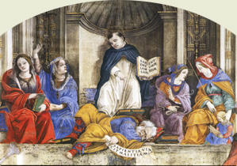
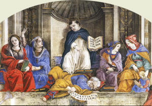

|  |
|---|
Textum Taurini 1953 editum
et automato translatum a Roberto Busa SJ in taenias magneticas
denuo recognovit Enrique Alarcón atque instruxit


|  |
|---|


[64449] Q. d. de anima, a. 1 tit. 2 Et videtur quod non.
[64450] Q. d. de anima, a. 1 arg. 1 Si enim anima humana est hoc aliquid, est subsistens et habens per se esse completum. Quod autem advenit alicui post esse completum, advenit ei accidentaliter, ut albedo homini et vestimentum. Corpus igitur unitum animae advenit ei accidentaliter. Si ergo anima est hoc aliquid, non est forma substantialis corporis.
[64451] Q. d. de anima, a. 1 arg. 2 Praeterea, si anima est hoc aliquid, oportet quod sit aliquid individuatum; nullum enim universalium est hoc aliquid. Aut igitur individuatur ex aliquo alio, aut ex se. Si ex alio, et est forma corporis, oportet quod individuetur ex corpore (nam formae individuantur ex propria materia); et sic sequitur quod remoto corpore tollitur individuatio animae; et sic anima non poterit esse per se subsistens, nec hoc aliquid. Si autem ex se individuatur, aut est forma simplex, aut est aliquid compositum ex materia et forma. Si est forma simplex sequitur quod anima individuata, ab alia differre non poterit nisi secundum formam. Differentia autem secundum formam facit diversitatem speciei. Sequitur igitur quod animae diversorum hominum sint specie differentes; unde et homines specie differrent si anima est forma corporis, cum unumquodque a propria forma speciem sortiatur. Si autem anima est composita ex materia et forma, impossibile est quod secundum se totam sit forma corporis, nam materia nullius est forma. Relinquitur igitur quod impossibile sit animam simul esse hoc aliquid et formam.
[64452] Q. d. de anima, a. 1 arg. 3 Praeterea, si anima est hoc aliquid sequitur quod sit individuum quoddam. Omne autem individuum est in aliqua specie et in aliquo genere. Relinquitur igitur quod anima habeat propriam speciem et proprium genus. Impossibile est autem quod aliquid propriam speciem habens recipiat superadditionem alterius ad speciei cuiusdam constitutionem; quia, ut philosophus dicit VIII Metaph., formae vel species rerum sunt sicut numeri; quibus quidquid subtrahitur vel additur, speciem variat. Materia autem et forma uniuntur ad speciei constitutionem. Si igitur anima est hoc aliquid, non unietur corpori ut forma materiae.
[64453] Q. d. de anima, a. 1 arg. 4 Praeterea, cum Deus res propter sui bonitatem fecerit, quae in diversis rerum gradibus manifestatur, tot gradus entium instituit, quot potuit natura pati. Si igitur anima humana potest per se subsistere, quod oportet dicere, si est hoc aliquid, sequeretur quod anima per se existens sit unus gradus entium. Formae autem non sunt unus gradus entium seorsum sine materiis. Igitur anima, si est hoc aliquid, non erit forma alicuius materiae.
[64454] Q. d. de anima, a. 1 arg. 5 Praeterea, si anima est hoc aliquid, et per se subsistens, oportet quod sit incorruptibilis; cum neque contrarium habeat, neque ex contrariis composita sit. Si autem est incorruptibilis, non potest esse proportionata corpori corruptibili, quale est corpus humanum. Omnis autem forma est proportionata suae materiae. Igitur si anima est hoc aliquid, non erit forma corporis humani.
[64455] Q. d. de anima, a. 1 arg. 6 Praeterea, nihil subsistens est actus purus nisi Deus. Si igitur anima est hoc aliquid, utpote per se subsistens, erit in ea aliqua compositio actus et potentiae; et sic non poterit esse forma, quia potentia non est alicuius actus. Si igitur anima sit hoc aliquid non erit forma.
[64456] Q. d. de anima, a. 1 arg. 7 Praeterea, si anima est hoc aliquid potens per se subsistere, non oportet quod corpori uniatur nisi propter aliquod bonum ipsius. Aut igitur propter aliquod bonum essentiale, aut propter bonum accidentale. Propter bonum essentiale non, quia sine corpore potest subsistere; neque etiam propter bonum accidentale, quod praecipue videtur esse cognitio veritatis quam anima humana per sensus accipit, qui sine organis corporis esse non possunt. Sed animae puerorum antequam nascantur morientium, dicuntur a quibusdam perfectam cognitionem rerum habere, quam tamen constat quod per sensum non acquisierunt. Si igitur anima est hoc aliquid, nulla ratio est quare corpori uniatur ut forma.
[64457] Q. d. de anima, a. 1 arg. 8 Praeterea, forma et hoc aliquid ex opposito dividuntur; dicit enim philosophus in II de anima, quod substantia dividitur in tria: quorum unum est forma, aliud materia et tertium quod est hoc aliquid. Opposita autem non dicuntur de eodem. Ergo anima humana non potest esse forma et hoc aliquid.
[64458] Q. d. de anima, a. 1 arg. 9 Praeterea, id quod est hoc aliquid per se subsistit. Formae autem proprium est quod sit in alio, quae videntur esse opposita. Si igitur anima est hoc aliquid, non videtur quod sit forma.
[64459] Q. d. de anima, a. 1 arg. 10 Sed dicebat quod corrupto corpore anima remanet hoc aliquid et per se subsistens, sed tunc perit in ea ratio formae.- Sed contra, omne quod potest abscedere ab aliquo, manente substantia eius, inest ei accidentaliter. Si igitur anima remanente post corpus, perit in ea ratio formae, sequitur quod ratio formae conveniat ei accidentaliter. Sed non unitur corpori ad constitutionem hominis nisi prout est forma. Ergo unitur corpori accidentaliter, et per consequens homo erit ens per accidens; quod est inconveniens.
[64460] Q. d. de anima, a. 1 arg. 11 Praeterea, si anima humana est hoc aliquid et per se existens, oportet quod per se habeat aliquam propriam operationem; quia uniuscuiusque rei per se existentis est aliqua propria operatio. Sed anima humana non habet aliquam propriam operationem; quia ipsum intelligere, quod maxime videtur esse eius proprium, non est animae, sed hominis per animam, ut dicitur in I de anima. Ergo anima humana non est hoc aliquid.
[64461] Q. d. de anima, a. 1 arg. 12 Praeterea, si anima humana est forma corporis, oportet quod habeat aliquam dependentiam ad corpus; forma enim et materia a se invicem dependent. Sed quod dependet ex aliquo, non est hoc aliquid. Si igitur anima est forma corporis, non erit hoc aliquid.
[64462] Q. d. de anima, a. 1 arg. 13 Praeterea, si anima est forma corporis, oportet quod animae et corporis sit unum esse: nam ex materia et forma fit unum secundum esse. Sed animae et corporis non potest esse unum esse, cum sint diversorum generum; anima enim est in genere substantiae incorporeae, corpus vero in genere substantiae corporeae. Anima igitur non potest esse forma corporis.
[64463] Q. d. de anima, a. 1 arg. 14 Praeterea, esse corporis est esse corruptibile, et ex partibus quantitativis resultans; esse autem animae est incorruptibile et simplex. Ergo corporis et animae non est unum esse.
[64464] Q. d. de anima, a. 1 arg. 15 Sed dicebat quod corpus humanum ipsum esse corporis habet per animam.- Sed contra, philosophus dicit in II de anima, quod anima est actus corporis physici organici. Hoc igitur quod comparatur ad animam ut materia ad actum, est iam corpus physicum organicum: quod non potest esse nisi per aliquam formam, qua constituatur in genere corporis. Habet igitur corpus humanum suum esse praeter esse animae.
[64465] Q. d. de anima, a. 1 arg. 16 Praeterea, principia essentialia, quae sunt materia et forma, ordinantur ad esse. Sed ad illud quod potest haberi in natura ab uno, non requiruntur duo. Si igitur anima, cum sit hoc aliquid, habet in se proprium esse, non adiungetur ei secundum naturam corpus, nisi ut materia formae.
[64466] Q. d. de anima, a. 1 arg. 17 Praeterea, esse comparatur ad substantiam animae ut actus eius, et sic oportet quod sit supremum in anima. Inferius autem non contingit id quod est superius secundum supremum in eo, sed magis secundum infimum; dicit enim Dionysius, quod divina sapientia coniungit fines primorum principiis secundorum. Corpus igitur, quod est inferius anima, non pertingit ad esse quod est supremum in ipsa.
[64467] Q. d. de anima, a. 1 arg. 18 Praeterea, quorum est unum esse, et una operatio. Si igitur esse animae humanae coniunctae corpori sit commune corpori; et operatio eius, quae est intelligere, erit communis animae et corpori; quod est impossibile, ut probatur in III de anima. Non est igitur unum esse animae humanae et corporis; unde sequitur quod anima non sit forma corporis et hoc aliquid.
[64468] Q. d. de anima, a. 1 s. c. 1 Sed contra. Unumquodque sortitur speciem per propriam formam. Sed homo est homo in quantum est rationalis. Ergo anima rationalis est propria forma hominis. Est autem hoc aliquid et per se subsistens, cum per se operetur. Non enim est intelligere per organum corporeum, ut probatur in III de anima. Anima igitur humana est hoc aliquid et forma.
[64469] Q. d. de anima, a. 1 s. c. 2 Praeterea, ultima perfectio animae humanae consistit in cognitione veritatis, quae est per intellectum. Ad hoc autem quod perficiatur anima in cognitione veritatis, indiget uniri corpori; quia intelligit per phantasmata, quae non sunt sine corpore. Ergo necesse est ut anima corpori uniatur ut forma, et sit hoc aliquid.
[64470] Q. d. de anima, a. 1 co. Respondeo. Dicendum quod hoc aliquid proprie dicitur individuum in genere substantiae. Dicit enim philosophus in praedicamentis, quod primae substantiae indubitanter hoc aliquid significant; secundae vero substantiae, etsi videantur hoc aliquid significare, magis tamen significant quale quid. Individuum autem in genere substantiae non solum habet quod per se possit subsistere, sed quod sit aliquid completum in aliqua specie et genere substantiae; unde philosophus etiam in praedicamentis, manum et pedem et huiusmodi nominat partes substantiarum magis quam substantias primas vel secundas: quia, licet non sint in alio sicut in subiecto (quod proprie substantiae est), non tamen participant complete naturam alicuius speciei; unde non sunt in aliqua specie neque in aliquo genere, nisi per reductionem. Duobus igitur existentibus de ratione eius quod est hoc aliquid; quidam utrumque animae humanae abstulerunt, dicentes animam esse harmoniam, ut Empedocles; aut complexionem, ut Galenus; aut aliquid huiusmodi. Sic enim anima neque per se poterit subsistere, neque erit aliquid completum in aliqua specie vel genere substantiae; sed erit forma tantum similis aliis materialibus formis.- Sed haec positio stare non potest nec quantum ad animam vegetabilem, cuius operationes oportet habere aliquod principium supergrediens qualitates activas et passivas, quae in nutriendo et in augendo se habent instrumentaliter tantum, ut probatur in II de anima; complexio autem et harmonia qualitates elementares non transcendunt. Similiter autem non potest stare quantum ad animam sensibilem, cuius operationes sunt in recipiendo species sine materia, ut probatur in II de anima; cum tamen qualitates activae et passivae ultra materiam se non extendant, utpote materiae dispositiones existentes. Multo autem minus potest stare quantum ad animam rationalem, cuius operationes sunt intelligere et abstrahere species, non solum a materia, sed ab omnibus conditionibus materialibus individuantibus, quod requiritur ad cognitionem universalis. Sed adhuc aliquid amplius proprie in anima rationali considerari oportet: quia non solum absque materia et conditionibus materiae species intelligibiles recipit, sed nec etiam in eius propria operatione possibile est communicare aliquod organum corporale; ut sic aliquod corporeum sit organum intelligendi, sicut oculus est organum videndi; ut probatur in III de anima. Et sic oportet quod anima intellectiva per se agat, utpote propriam operationem habens absque corporis communione. Et quia unumquodque agit secundum quod est actu, oportet quod anima intellectiva habeat esse per se absolutum non dependens a corpore. Formae enim quae habent esse dependens a materia vel subiecto, non habent per se operationem: non enim calor agit, sed calidum. Et propter hoc posteriores philosophi iudicaverunt partem animae intellectivam esse aliquid per se subsistens. Dicit enim philosophus in III de anima, quod intellectus est substantia quaedam et non corrumpitur. Et in idem redit dictum Platonis ponentis animam immortalem et per se subsistentem, ex eo quod movet seipsam. Large enim accepit motum pro omni operatione, ut sic intelligatur quod intellectus movet seipsum, quia a seipso operatur. Sed ulterius posuit Plato, quod anima humana non solum per se subsisteret, sed quod etiam haberet in se completam naturam speciei. Ponebat enim totam naturam speciei in anima esse, dicens hominem non esse aliquid compositum ex anima et corpore, sed animam corpori advenientem; ut sit comparatio animae ad corpus sicut nautae ad navem, vel sicuti induti ad vestem.- Sed haec opinio stare non potest. Manifestum est enim id quo vivit corpus, animam esse, vivere autem est esse viventium: anima igitur est quo corpus humanum habet esse actu. Huiusmodi autem forma est. Est igitur anima humana corporis forma. Ita si anima esset in corpore sicut nauta in navi, non daret speciem corpori, neque partibus eius; cuius contrarium apparet ex hoc quod recedente anima, singulae partes non retinent pristinum nomen nisi aequivoce. Dicitur enim oculus mortui aequivoce oculus, sicut pictus aut lapideus; et simile est de aliis partibus. Et praeterea, si anima esset in corpore sicut nauta in navi, sequeretur quod unio animae et corporis esset accidentalis. Mors igitur, quae inducit eorum separationem, non esset corruptio substantialis; quod patet esse falsum. Relinquitur igitur quod anima est hoc aliquid, ut per se potens subsistere; non quasi habens in se completam speciem, sed quasi perficiens speciem humanam ut forma corporis; et similiter est forma et hoc aliquid. Quod quidem ex ordine formarum naturalium considerari potest. Invenitur enim inter formas inferiorum corporum tanto aliqua altior, quanto superioribus principiis magis assimilatur et appropinquat. Quod quidem ex propriis formarum operationibus, perpendi potest. Formae enim elementorum, quae sunt infimae et materiae propinquissimae, non habent aliquam operationem excedentem qualitates activas et passivas, ut rarum et densum, et aliae huiusmodi, quae videntur esse materiae dispositiones. Super has autem sunt formae mixtorum corporum, quae praeter praedictas operationes, habent aliquam operationem consequentem speciem, quam sortiuntur ex corporibus caelestibus; sicut quod adamas attrahit ferrum, non propter calorem aut frigus aut aliquid huiusmodi, sed ex quadam participatione virtutis caelestis. Super has autem formas sunt iterum animae plantarum, quae habent similitudinem non solum ad ipsa corpora caelestia, sed ad motores corporum caelestium in quantum sunt principia cuiusdam motus, quibusdam seipsa moventibus. Super has autem ulterius sunt animae brutorum, quae similitudinem iam habent ad substantiam moventem caelestia corpora, non solum in operatione qua movent corpora, sed etiam in hoc quod in seipsis cognoscitivae sunt; licet brutorum cognitio sit materialium tantum, et materialiter, unde organis corporalibus indigent. Super has autem ultimo sunt animae humanae, quae similitudinem habent ad superiores substantias etiam in genere cognitionis, quia immaterialia cognoscere possunt intelligendo. In hoc tamen ab eis differunt, quod intellectus animae humanae habent naturam acquirendi cognitionem immaterialem ex cognitione materialium, quae est per sensum. Sic igitur ex operatione animae humanae, modus esse ipsius cognosci potest. In quantum enim habet operationem materialia transcendentem, esse suum est supra corpus elevatum, non dependens ex ipso; in quantum vero immaterialem cognitionem ex materiali est nata acquirere, manifestum est quod complementum suae speciei esse non potest absque corporis unione. Non enim aliquid est completum in specie, nisi habeat ea quae requiruntur ad propriam operationem ipsius speciei. Si igitur anima humana, in quantum unitur corpori ut forma, habet esse elevatum supra corpus non dependens ab eo, manifestum est quod ipsa est in confinio corporalium et separatarum substantiarum constituta.
[64471] Q. d. de anima, a. 1 ad 1 Ad primum ergo dicendum quod licet anima habeat esse completum non tamen sequitur quod corpus ei accidentaliter uniatur; tum quia illud idem esse quod est animae communicat corpori, ut sit unum esse totius compositi; tum etiam quia etsi possit per se subsistere, non tamen habet speciem completam, sed corpus advenit ei ad completionem speciei.
[64472] Q. d. de anima, a. 1 ad 2 Ad secundum dicendum quod unumquodque secundum idem habet esse et individuationem. Universalia enim non habent esse in rerum natura ut universalia sunt, sed solum secundum quod sunt individuata. Sicut igitur esse animae est a Deo sicut a principio activo, et in corpore sicut in materia, nec tamen esse animae perit pereunte corpore; ita et individuatio animae, etsi aliquam relationem habeat ad corpus, non tamen perit corpore pereunte.
[64473] Q. d. de anima, a. 1 ad 3 Ad tertium dicendum quod anima humana non est hoc aliquid sicut substantia completam speciem habens; sed sicut pars habentis speciem completam, ut ex dictis patet. Unde ratio non sequitur.
[64474] Q. d. de anima, a. 1 ad 4 Ad quartum dicendum quod, licet anima humana per se possit subsistere, non tamen per se habet speciem completam; unde non posset esse quod animae separatae constituerent unum gradum entium.
[64475] Q. d. de anima, a. 1 ad 5 Ad quintum dicendum quod corpus humanum est materia proportionata animae humanae; comparatur enim ad eam ut potentia ad actum. Nec tamen oportet quod ei adaequetur in virtute essendi: quia anima humana non est forma a materia totaliter comprehensa; quod patet ex hoc quod aliqua eius operatio est supra materiam. Potest tamen aliter dici secundum sententiam fidei, quod corpus humanum a principio aliquo modo incorruptibile constitutum est, et per peccatum necessitatem moriendi incurrit, a qua iterum in resurrectione liberabitur. Unde per accidens est quod ad immortalitatem animae non pertingit.
[64476] Q. d. de anima, a. 1 ad 6 Ad sextum dicendum quod anima humana, cum sit subsistens, composita est ex potentia et actu. Nam ipsa substantia animae non est suum esse, sed comparatur ad ipsum ut potentia ad actum. Nec tamen sequitur quod anima non possit esse forma corporis: quia etiam in aliis formis id quod est ut forma et actus in comparatione ad unum, est ut potentia in comparatione ad aliud; sicut diaphanum formaliter advenit aeri, quod tamen est potentia respectu luminis.
[64477] Q. d. de anima, a. 1 ad 7 Ad septimum dicendum quod anima unitur corpori et propter bonum quod est perfectio substantialis, ut scilicet compleatur species humana; et propter bonum quod est perfectio accidentalis, ut scilicet perficiatur in cognitione intellectiva, quam anima ex sensibus acquirit; hic enim modus intelligendi est naturalis homini. Nec obstat, si animae separatae puerorum et aliorum hominum alio modo intelligendi utuntur, quia hoc magis competit eis ratione separationis quam ratione speciei humanae.
[64478] Q. d. de anima, a. 1 ad 8 Ad octavum dicendum quod non est de ratione eius quod est hoc aliquid quod sit ex materia et forma compositum, sed solum quod possit per se subsistere. Unde licet compositum sit hoc aliquid, non tamen removetur quin aliis possit competere quod sint hoc aliquid.
[64479] Q. d. de anima, a. 1 ad 9 Ad nonum dicendum quod in alio esse sicut accidens in subiecto, tollit rationem eius quod est hoc aliquid. Esse autem in alio sicut partem (quomodo anima est in homine), non omnino excludit quin id quod est in alio, possit hoc aliquid dici.
[64480] Q. d. de anima, a. 1 ad 10 Ad decimum dicendum quod corrupto corpore non perit ab anima natura secundum quam competit ei ut sit forma; licet non perficiat materiam actu, ut sit forma.
[64481] Q. d. de anima, a. 1 ad 11 Ad undecimum dicendum quod intelligere est propria operatio animae, si consideretur principium a quo egreditur operatio; non enim egreditur ab anima mediante organo corporali, sicut visio mediante oculo, communicat tamen in ea corpus ex parte obiecti; nam phantasmata, quae sunt obiecta intellectus, sine corporeis organis esse non possunt.
[64482] Q. d. de anima, a. 1 ad 12 Ad duodecimum dicendum quod etiam anima aliquam dependentiam habet ad corpus, in quantum sine corpore non pertingit ad complementum suae speciei; non tamen sic dependet a corpore quin sine corpore esse possit.
[64483] Q. d. de anima, a. 1 ad 13 Ad decimumtertium dicendum quod necesse est, si anima est forma corporis, quod animae et corporis sit unum esse commune, quod est esse compositi. Nec hoc impeditur per hoc quod anima et corpus sint diversorum generum: nam neque anima neque corpus sunt in specie vel genere, nisi per reductionem, sicut partes reducuntur ad speciem vel genus totius.
[64484] Q. d. de anima, a. 1 ad 14 Ad decimumquartum dicendum quod illud quod proprie corrumpitur, non est forma neque materia, neque ipsum esse, sed compositum. Dicitur autem esse corporis corruptibile, in quantum corpus per corruptionem deficit ab illo esse quod erat sibi et anima commune, quod remanet in anima subsistente. Et pro tanto etiam dicitur ex partibus consistens esse corporis, quia ex suis partibus corpus constituitur tale ut possit ab anima esse recipere.
[64485] Q. d. de anima, a. 1 ad 15 Ad decimumquintum dicendum quod in definitionibus formarum aliquando ponitur subiectum ut informe, sicut cum dicitur: motus est actus existentis in potentia. Aliquando autem ponitur subiectum formatum, sicut cum dicitur: motus est actus mobilis, lumen est actus lucidi. Et hoc modo dicitur anima actus corporis organici physici, quia anima facit ipsum esse corpus organicum, sicut lumen facit aliquid esse lucidum.
[64486] Q. d. de anima, a. 1 ad 16 Ad decimumsextum dicendum quod principia essentialia alicuius speciei ordinantur non ad esse tantum, sed ad esse huius speciei. Licet igitur anima possit per se esse, non tamen potest in complemento suae speciei esse sine corpore.
[64487] Q. d. de anima, a. 1 ad 17 Ad decimumseptimum dicendum quod licet esse sit formalissimum inter omnia, tamen est etiam maxime communicabile, licet non eodem modo inferioribus et superioribus communicetur. Sic ergo corpus esse animae participat, sed non ita nobiliter sicut anima.
[64488] Q. d. de anima, a. 1 ad 18 Ad decimumoctavum dicendum quod quamvis esse animae sit quodammodo corporis, non tamen corpus attingit ad esse animae participandum secundum totam suam nobilitatem et virtutem; et ideo est aliqua operatio animae in qua non communicat corpus.
[64490] Q. d. de anima, a. 2 tit. 2 Et videtur quod sic.
[64491] Q. d. de anima, a. 2 arg. 1 Dicit enim philosophus in III de anima quod sensitivum non sine corpore est; intellectus autem est separatus. Intellectus autem est anima humana. Ergo anima humana est secundum esse a corpore separata.
[64492] Q. d. de anima, a. 2 arg. 2 Praeterea, anima est actus corporis physici organici, in quantum corpus est organum eius. Si igitur intellectus unitur secundum esse corpori ut forma, oportet quod corpus sit organum eius; quod est impossibile, ut probat philosophus in III de anima.
[64493] Q. d. de anima, a. 2 arg. 3 Praeterea, maior est concretio formae ad materiam quam virtutis ad organum. Sed intellectus propter sui simplicitatem non potest esse concretus corpori sicut virtus organo. Ergo multo minus potest ei uniri sicut forma ad materiam.
[64494] Q. d. de anima, a. 2 arg. 4 Sed dicebat quod intellectus, id est potentia intellectiva, non habet organum; sed ipsa essentia animae intellectivae unitur corpori ut forma.- Sed contra, effectus non est simplicior sua causa. Sed potentia animae est effectus essentiae eius, quia omnes potentiae fluunt ab esse eius. Nulla ergo potentia animae est simplicior esse animae. Si ergo intellectus non potest esse actus corporis, ut probatur in III de anima, neque anima intellectiva poterit uniri corpori ut forma.
[64495] Q. d. de anima, a. 2 arg. 5 Praeterea, omnis forma unita materiae individuatur per materiam. Si igitur anima intellectiva unitur corpori ut forma, oportet quod sit individua. Ergo formae receptae in ea sunt formae individuatae. Non ergo anima intellectiva poterit universalia cognoscere; quod patet esse falsum.
[64496] Q. d. de anima, a. 2 arg. 6 Praeterea, forma universalis non habet quod sit intellectiva a re quae est extra animam; quia omnes formae quae sunt in rebus extra animam, sunt individuatae. Si igitur formae intellectus sint universales, oportet quod hoc habeant ab anima intellectiva. Non ergo anima intellectiva est forma individuata; et ita non unitur corpori secundum esse.
[64497] Q. d. de anima, a. 2 arg. 7 Sed dicebat quod formae intelligibiles ex illa parte qua inhaerent animae, sunt individuatae; sed ex illa parte qua sunt rerum similitudines, sunt universales, repraesentantes res secundum naturam communem, et non secundum principia individuantia.- Sed contra, cum forma sit principium operationis, operatio egreditur a forma secundum modum quo inhaeret subiecto. Quanto enim aliquid est calidum, tantum calefacit. Si igitur species rerum quae sunt in anima intellectiva sunt individuatae ex ea parte qua inhaerent animae, cognitio quae sequitur erit individualis tantum, et non universalis.
[64498] Q. d. de anima, a. 2 arg. 8 Praeterea, philosophus dicit in II de anima, quod sicut trigonum est in tetragono, et tetragonum est in pentagono; ita nutritivum est in sensitivo et sensitivum in intellectivo. Sed trigonum non est in tetragono actu sed potentia tantum; neque etiam tetragonum in pentagono. Ergo nec nutritivum nec sensitivum sunt in actu in intellectiva parte animae. Cum ergo pars intellectiva non uniatur corpori nisi mediante nutritivo et sensitivo, ex quo nutritivum et sensitivum non sunt actu in intellectivo, intellectiva pars animae non erit corpori unita.
[64499] Q. d. de anima, a. 2 arg. 9 Praeterea, philosophus dicit in XVI de animalibus, quod non est simul animal et homo; sed primum animal, et postea homo. Non igitur idem est quo est animal, et quo est homo. Sed animal est per sensitivum, homo vero per intellectivum. Non igitur sensitivum et intellectivum uniuntur in una substantia animae; et sic idem quod prius.
[64500] Q. d. de anima, a. 2 arg. 10 Praeterea, forma est in eodem genere cum materia cui unitur. Sed intellectus non est in genere corporalium. Intellectus igitur non est forma unita corpori sicut materiae.
[64501] Q. d. de anima, a. 2 arg. 11 Praeterea, ex duabus substantiis existentibus actu non fit aliquid unum. Sed tam corpus quam intellectus est substantia existens actu. Non igitur intellectus potest uniri corpori, ut ex eis fiat aliquid unum.
[64502] Q. d. de anima, a. 2 arg. 12 Praeterea, omnis forma unita materiae reducitur in actum per motum et mutationem materiae. Sed anima intellectiva non reducitur in actum de potentia materiae, sed est ab extrinseco, ut philosophus dicit in XVI de animalibus. Ergo non est forma unita materiae.
[64503] Q. d. de anima, a. 2 arg. 13 Praeterea, unumquodque secundum quod est, sic operatur. Sed anima intellectiva habet operationem per se sine corpore, scilicet intelligere. Ergo non est unita corpori secundum esse.
[64504] Q. d. de anima, a. 2 arg. 14 Praeterea, minimum inconveniens est Deo impossibile. Sed inconveniens est quod anima innocens corpori includatur, quod est quasi carcer. Impossibile est igitur Deo quod animam intellectivam uniat corpori.
[64505] Q. d. de anima, a. 2 arg. 15 Praeterea, nullus artifex sapiens praestat impedimentum suo operato. Sed animae intellectivae est maximum impedimentum corpus ad veritatis cognitionem percipiendam, in qua perfectio eius consistit, secundum illud Sap. IX: corpus, quod corrumpitur, aggravat animam. Non igitur Deus animam intellectivam corpori univit.
[64506] Q. d. de anima, a. 2 arg. 16 Praeterea, ea quae sunt unita ad invicem, habent mutuam affinitatem ad invicem. Sed anima intellectiva et corpus habent contrarietatem, quia caro concupiscit adversus spiritum, et spiritus adversus carnem. Non igitur anima intellectiva unita est corpori.
[64507] Q. d. de anima, a. 2 arg. 17 Praeterea, intellectus est in potentia ad omnes formas intelligibiles, nullam earum habens in actu; sicut materia prima est in potentia ad omnes formas sensibiles, et nullam earum habet in actu. Sed hac ratione est prima materia una omnium. Ergo et intellectus est unus omnium; et sic non est unitus corpori, quod ipsum individuat.
[64508] Q. d. de anima, a. 2 arg. 18 Praeterea, philosophus probat in III de anima quod si intellectus possibilis haberet organum corporale, haberet aliquam naturam determinatam de naturis sensibilibus, et sic non esset receptivus et cognoscitivus omnium formarum sensibilium. Sed magis forma unitur materiae quam virtus organo. Ergo si intellectus uniatur corpori ut forma, habebit aliquam naturam sensibilem determinatam; et sic non erit perceptivus et cognoscitivus omnium formarum sensibilium; quod est impossibile.
[64509] Q. d. de anima, a. 2 arg. 19 Praeterea, omnis forma unita materiae, est in materia recepta. Omne autem quod recipitur ab aliquo, est in eo per modum recipientis. Ergo omnis forma unita materiae est in ea per modum materiae. Sed modus materiae sensibilis et corporalis non est quod recipiat aliquid per modum intelligibilem. Cum igitur intellectus habeat esse intelligibile, non est forma materiae corporali unita.
[64510] Q. d. de anima, a. 2 arg. 20 Praeterea, si anima unitur materiae corporali, oportet quod recipiatur in ea. Sed quidquid recipitur ab eo quod est esse a materia receptum, est in materia receptum. Ergo si anima est unita materiae, quidquid recipitur in anima recipitur in materia. Sed formae intellectus non possunt recipi a materia prima; quinimmo per abstractionem a materia intelligibiles fiunt. Ergo anima quae est unita materiae corporali non est receptiva formarum intelligibilium; et ita intellectus, qui est receptivus formarum intelligibilium, non erit unitus materiae corporali.
[64511] Q. d. de anima, a. 2 s. c. 1 Sed contra. Est quod philosophus dicit in II de anima quod non oportet quaerere si anima et corpus sint unum, sicut neque de cera et figura. Sed figura nullo modo potest esse separata a cera secundum esse. Ergo nec anima est separata a corpore. Sed intellectus est pars animae, ut philosophus dicit in III de anima. Ergo intellectus non est separatus a corpore secundum esse.
[64512] Q. d. de anima, a. 2 s. c. 2 Praeterea, nulla forma est separata a materia secundum esse. Sed anima intellectiva est forma corporis. Ergo non est forma separata a materia secundum esse.
[64513] Q. d. de anima, a. 2 co. Respondeo. Ad evidentiam huius quaestionis considerandum est, quod ubicumque invenitur aliquid quandoque in potentia, quandoque in actu, oportet esse aliquod principium per quod res illa sit in potentia: sicut homo quandoque est sentiens actu, et quandoque in potentia; et propter hoc in homine oportet ponere principium sensitivum, quod sit in potentia ad sensibilia: si enim esset semper sentiens actu, formae sensibilium inessent semper actu principio sentiendi. Similiter cum homo inveniatur quandoque intelligens actu, quandoque intelligens in potentia tantum; oportet in homine considerare aliquod intellectivum principium, quod sit in potentia ad intelligibilia. Et hoc principium nominat philosophus in III de anima intellectum possibilem. Hunc igitur intellectum possibilem necesse est esse in potentia ad omnia quae sunt intelligibilia per hominem, et receptivum eorum, et per consequens denudatum ab his: quia omne quod est receptivum aliquorum, et in potentia ad ea, quantum de se est, est denudatum ab eis; sicut pupilla, quae est receptiva omnium colorum, caret omni colore. Homo autem natus est intelligere formas omnium sensibilium rerum. Oportet igitur intellectum possibilem esse denudatum, quantum in se est, ab omnibus sensibilibus formis et naturis; et ita oportet quod non habeat aliquod organum corporeum. Si enim haberet aliquod organum corporeum, determinaretur ad aliquam naturam sensibilem, sicut potentia visiva determinatur ad naturam oculi. Per hanc philosophi demonstrationem excluditur positio philosophorum antiquorum, qui ponebant intellectum non differre a potentiis sensitivis; vel quicumque alii posuerunt principium quo intelligit homo, esse aliquam formam vel virtutem permixtam corpori, sicut aliae formae aut virtutes materiales. Sed hoc quidam fugientes, in contrarium dilabuntur errorem. Existimant enim sic intellectum possibilem esse denudatum ab omni natura sensibili, et impermixtum corpori, quod sit quaedam substantia secundum esse a corpore separata quae sit in potentia ad omnes formas intelligibiles.- Sed haec positio stare non potest. Non enim inquirimus de intellectu possibili nisi secundum quod per eum intelligit homo: sic enim Aristoteles in eius notitiam devenit. Quod patet ex hoc quod dicit in III de anima, incipiens tractare de intellectu possibili: de parte autem animae, qua cognoscit anima et sapit, considerandum est etc.; et iterum: dico autem intellectum possibilem, quo intelligit anima. Si autem intellectus possibilis esset substantia separata, impossibile esset quod eo intelligeret homo: non enim est possibile, si aliqua substantia operatur aliquam operationem, quod illa operatio sit alterius substantiae ab ea diversa. Licet enim duarum substantiarum diversarum una possit alteri esse causa operandi ut principale agens instrumento, tamen actio principalis agentis non est actio instrumenti eadem secundum numerum, cum actio principalis agentis sit in movendo instrumentum; actio vero instrumenti in moveri a principali agente, et movere aliquid alterum. Sic igitur, si intellectus possibilis sit substantia separata secundum esse ab hoc homine sive ab illo homine; impossibile est quod intelligere intellectus possibilis sit huius hominis vel illius. Unde cum ista operatio quae est intelligere, non attribuatur alii principio in homine nisi intellectui possibili; sequitur quod nullus homo aliquid intelligat. Unde idem modus disputandi est contra hanc positionem, et contra negantes principia, ut patet per disputationem Aristotelis contra eos in IV Metaph. Hoc autem inconveniens evitare intendens Averroes, huius positionis sectator, posuit intellectum possibilem, licet secundum esse a corpore separatum, tamen continuari cum homine mediantibus phantasmatibus. Phantasmata enim, ut dicit philosophus in III de anima, se habent ad intellectum possibilem sicut sensibilia ad sensum, et colores ad visum. Sic igitur species intelligibilis habet duplex subiectum: unum in quo est secundum esse intelligibile, et hoc est intellectus possibilis; aliud in quod est secundum esse reale, et hoc subiectum sunt ipsa phantasmata. Est igitur quaedam continuatio intellectus possibilis cum phantasmatibus, in quantum species intelligibilis est quodammodo utrobique; et per hanc continuationem homo intelligit per intellectum possibilem. Sed ista continuatio adhuc non sufficit. Non enim aliquid est cognoscitivum ex hoc quod ei adest species cognoscibilis, sed ex hoc quod ei adest potentia cognoscitiva. Patet autem secundum praedicta, quod homini non aderit nisi sola species intelligibilis; potentia autem intelligendi, quae est intellectus possibilis, est omnino separata. Homo igitur ex continuatione praedicta non habebit quod sit intelligens, sed solum quod intelligatur intellectus, vel species, vel aliquid eius; quod per simile supra inductum manifeste apparet. Si enim sic se habent phantasmata ad intellectum sicut colores ad visum, non erit secundum praedicta alia continuatio intellectus possibilis ad nos per phantasmata quam quae est visus ad parietem per colores; paries autem non habet per hoc quod colores sunt in eo, quod videat, sed quod videatur tantum. Unde et homo non habebit per hoc quod phantasmata sunt in eo, quod intelligat, sed solum quod intelligatur. Et praeterea, phantasma non est subiectum speciei intelligibilis secundum quod est intellectum in actu, sed magis per abstractionem a phantasmatibus fit intellectum in actu. Intellectus autem possibilis non est subiectum speciei intelligibilis, nisi secundum quod est intellecta iam in actu, et abstracta a phantasmatibus. Non igitur aliquid unum est, quod sit in intellectu possibili et phantasmatibus, per quod intellectus possibilis continuetur nobiscum. Et praeterea, si per species intelligibiles non est aliquis intelligens nisi secundum quod sunt intellectae in actu, sequitur quod nos nullo modo simus intelligentes secundum praedictam positionem; non enim aderunt nobis species intelligibiles nisi secundum quod sunt in phantasmatibus, prout sunt intellectae in potentia tantum. Sic ergo apparet ex parte nostra praedictam positionem esse impossibilem. Quod etiam apparet ex natura substantiarum separatarum; quae, cum sint perfectissimae, impossibile est quod in propriis operationibus indigeant aliquibus rebus materialibus aut operationibus earum; aut quod sint in potentia ad alia quae sunt huiusmodi, quia hoc etiam manifestum est de corporibus caelestibus, quae sunt infra substantias praedictas. Unde cum intellectus possibilis sit in potentia ad species rerum sensibilium, et non compleatur eius operatio sine phantasmatibus, quae ex nostra operatione dependent; impossibile et inopinabile est quod intellectus possibilis sit una de substantiis separatis. Unde dicendum est quod est quaedam vis, seu potentia animae humanae. Cum enim anima humana sit quaedam forma unita corpori, ita tamen quod non sit a corpore totaliter comprehensa quasi ei immersa, sicut aliae formae materiales, sed excedat capacitatem totius materiae corporalis, quantum ad hoc in quo excedit materiam corporalem, inest ei potentia ad intelligibilia, quod pertinet ad intellectum possibilem; secundum vero quod unitur corpori, habet operationes et vires in quibus communicat ei corpus; sicut sunt vires partis nutritivae et sensitivae. Et sic salvatur natura intellectus possibilis, quam Aristoteles demonstrat, dum intellectus possibilis non est potentia fundata in aliquo organo corporali; et tamen eo intelligit homo formaliter, in quantum fundatur in essentia animae humanae, quae est hominis forma.
[64514] Q. d. de anima, a. 2 ad 1 Ad primum ergo dicendum quod intellectus dicitur separatus, non sensus: quia intellectus remanet corrupto corpore in anima separata, non autem potentiae sensitivae. Vel melius dicendum, quod intellectus pro tanto dicitur separatus, quia non utitur organo corporali in operatione sua, sicut sensus.
[64515] Q. d. de anima, a. 2 ad 2 Ad secundum dicendum quod anima humana est actus corporis organici, eo quod corpus est organum eius. Non tamen oportet quod sit organum eius quantum ad quamlibet eius potentiam et virtutem; cum anima humana excedat proportionem corporis, ut dictum est.
[64516] Q. d. de anima, a. 2 ad 3 Ad tertium dicendum, quod organum alicuius potentiae est principium operationis illius potentiae. Unde si intellectus possibilis uniretur alicui organo, operatio eius esset etiam operatio illius organi; et sic non esset possibile quod principium quo intelligimus, esset denudatum ab omni natura sensibili. Principium enim quo intelligimus, esset intellectus possibilis simul cum suo organo; sicut principium quo videmus, scilicet visus, simul est cum pupilla. Sed si anima humana est forma corporis, et intellectus possibilis est quaedam virtus eius, non sequitur quod intellectus possibilis determinetur ad aliquam naturam sensibilem; quia anima humana excedit corporis proportionem, ut dictum est.
[64517] Q. d. de anima, a. 2 ad 4 Ad quartum dicendum quod intellectus possibilis consequitur animam humanam in quantum supra materiam corporalem elevatur; unde per hoc quod non est actus alicuius organi, non excedit totaliter essentiam animae, sed est supremum in ipsa.
[64518] Q. d. de anima, a. 2 ad 5 Ad quintum dicendum quod anima humana est quaedam forma individuata; et similiter potentia eius quae dicitur intellectus possibilis, et formae intelligibiles in eo receptae. Sed hoc non prohibet eas esse intellectas in actu: ex hoc enim aliquid est intellectum in actu quod est immateriale, non autem ex hoc quod est universale; sed magis universale habet quod sit intelligibile per hoc quod est abstractum a principiis materialibus individuantibus.- Manifestum est autem substantias separatas esse intelligibiles actu, et tamen individua quaedam sunt; sicut Aristoteles dicit in VII Metaph., quod formae separatae, quas Plato ponebat, individua quaedam erant. Unde manifestum est quod si individuatio repugnaret intelligibilitati, eadem difficultas remaneret ponentibus intellectum possibilem substantiam separatam: sic enim et intellectus possibilis individuus esset individuans species in se receptas. Sciendum igitur, quod quamvis species receptae in intellectu possibili sint individuatae ex illa parte qua inhaerent intellectui possibili; tamen in eis, in quantum sunt immateriales, cognoscitur universale quod concipitur per abstractionem a principiis individuantibus. Universalia enim, de quibus sunt scientiae, sunt quae cognoscuntur per species intelligibiles, non ipsae species intelligibiles; de quibus planum est quod non sunt scientiae omnes, sed sola physica et metaphysica. Species enim intelligibilis est quo intellectus intelligit, non id quod intelligit, nisi per reflexionem, in quantum intelligit se intelligere id quod intelligit.
[64519] Q. d. de anima, a. 2 ad 6 Ad sextum dicendum quod intellectus dat formis intellectis universalitatem, in quantum abstrahit eas a principiis materialibus individuantibus; unde non oportet quod intellectus sit universalis, sed quod sit immaterialis.
[64520] Q. d. de anima, a. 2 ad 7 Ad septimum dicendum quod species operationis consequitur speciem formae, quae est operationis principium; licet inefficacia operationis sequatur formam secundum quod inhaeret subiecto. Ex eo enim quod calor est, calefacit: sed secundum modum quo perficit subiectum magis vel minus, efficacius vel minus efficaciter calefacit. Intelligere autem universalia pertinet ad speciem intellectualis operationis; unde hoc sequitur speciem intellectualem secundum propriam operationem. Sed ex eo quod inhaeret intelligenti perfectius vel minus perfecte, sequitur quod aliquis perfectius vel minus perfecte intelligat.
[64521] Q. d. de anima, a. 2 ad 8 Ad octavum dicendum quod similitudo philosophi de figuris ad partes animae attenditur quantum ad hoc, quod sicut tetragonum habet quidquid habet trigonum et adhuc amplius et pentagonum quidquid habet tetragonum: ita sensitiva anima habet quidquid habet nutritiva, et intellectiva quidquid habet sensitiva et adhuc amplius. Non ergo per hoc ostenditur quod nutritivum et sensitivum essentialiter differant ab intellectivo; sed magis quod unum illorum includat alterum.
[64522] Q. d. de anima, a. 2 ad 9 Ad nonum dicendum quod sicut non simul est quod concipitur animal et homo, ita non simul est animal et equus, ut philosophus ibidem dicit. Non igitur haec est ratio dicti, quod aliud principium sit in homine substantialiter anima sensitiva qua est animal, et aliud anima intellectiva qua est homo; cum non possit dici quod in equo sint plura principia diversa, quorum uno sit animal, et alio sit equus. Sed hoc ea ratione dicitur, quia in animali concepto prius apparent operationes imperfectae, et postea apparent magis perfectae; sicut omnis generatio est transmutatio de imperfecto ad perfectum.
[64523] Q. d. de anima, a. 2 ad 10 Ad decimum dicendum quod forma non est in aliquo genere, ut dictum est; unde, cum anima intellectiva sit forma hominis, non est in alio genere quam corpus; sed utrumque est in genere animalis et in specie hominis per reductionem.
[64524] Q. d. de anima, a. 2 ad 11 Ad undecimum dicendum quod ex duabus substantiis actu existentibus et perfectis in sua specie et natura non fit aliquid unum. Anima autem et corpus non sunt huiusmodi, cum sint partes humanae naturae; unde ex eis nihil prohibet fieri unum.
[64525] Q. d. de anima, a. 2 ad 12 Ad duodecimum dicendum quod anima humana licet sit forma unita corpori, tamen excedit proportionem totius materiae corporalis et ideo non potest educi in actum de potentia materiae per aliquem motum vel mutationem, sicut aliae formae quae sunt immersae materiae.
[64526] Q. d. de anima, a. 2 ad 13 Ad decimumtertium dicendum, quod anima habet operationem in qua non communicat corpus, ex ea parte qua superat omnem corporis proportionem; ex hoc tamen non removetur quin sit aliquo modo corpori unita.
[64527] Q. d. de anima, a. 2 ad 14 Ad decimumquartum dicendum, quod obiectio illa procedit secundum positionem Origenis, qui posuit animas creatas a principio absque corporibus inter substantias spirituales, et postea eas unitas esse corporibus, quasi carceribus inclusas. Sed hoc non dicebat animas passas innocentes, sed merito praecedentis peccati. Existimabat igitur Origenes quod anima humana haberet in se speciem completam, secundum opinionem Platonis; et quod corpus adveniret ei per accidens. Sed cum hoc sit falsum, ut supra ostensum est, non est in detrimentum animae quod corpori uniatur; sed hoc est ad perfectionem suae naturae. Sed quod corpus sit ei carcer, et eam inficiat, hoc est ex merito praevaricationis primae.
[64528] Q. d. de anima, a. 2 ad 15 Ad decimumquintum dicendum quod iste modus cognoscendi est naturalis animae, ut percipiat intelligibilem veritatem infra modum quo percipiunt spirituales substantiae superiores, accipiendo scilicet eam ex sensibilibus; sed in hoc etiam patitur impedimentum ex corruptio corporis, quae provenit ex peccato primi parentis.
[64529] Q. d. de anima, a. 2 ad 16 Ad decimumsextum dicendum quod hoc ipsum quod caro concupiscit adversus spiritum, ostendit affinitatem animae ad corpus. Spiritus enim dicitur pars animae superior, qua homo excedit alia animalia, ut Augustinus dicit super Genesim contra Manichaeos. Caro autem concupiscere dicitur, quia partes animae carni affixae, ea quae sunt delectabilia carni, concupiscunt: quae concupiscentiae spiritui interdum repugnant.
[64530] Q. d. de anima, a. 2 ad 17 Ad decimumseptimum dicendum quod intellectus possibilis non habet aliquam formam intelligibilem in actu, sed in potentia tantum, sicut materia prima non habet aliquam formam sensibilem actu. Unde non oportet, nec ita ratio ostendit, quod intellectus possibilis sit unus in omnibus; sed quod sit unus respectu omnium formarum intelligibilium, sicut materia prima est una respectu omnium formarum sensibilium.
[64531] Q. d. de anima, a. 2 ad 18 Ad decimumoctavum dicendum quod si intellectus possibilis haberet aliquod organum corporale, oporteret quod illud organum esset principium simul cum intellectu possibili quo intelligimus, sicut pupilla cum potentia visiva est principium quo videmus. Et ita principium quo intelligimus haberet aliquam naturam determinatam sensibilem; quod patet esse falsum ex demonstratione Aristotelis supra inducta. Hoc autem non sequitur ex hoc quod anima est forma humani corporis, quia intellectus possibilis est quaedam potentia eius, in quantum excedit corporis proportionem.
[64532] Q. d. de anima, a. 2 ad 19 Ad decimumnonum dicendum quod anima, licet uniatur corpori secundum modum corporis, tamen ex ea parte qua excedit corporis capacitatem, naturam intellectualem habet; et sic formae receptae in ea sunt intelligibiles et non materiales.
[64533] Q. d. de anima, a. 2 ad 20 Unde patet solutio ad vigesimum.
[64535] Q. d. de anima, a. 3 tit. 2 Et videtur quod sic.
[64536] Q. d. de anima, a. 3 arg. 1 Perfectio enim est proportionata perfectibili. Sed veritas est perfectio intellectus: nam verum est bonum intellectus, sicut philosophus dicit, VI Ethic. Cum igitur veritas sit una, quam omnes intelligunt, videtur quod intellectus possibilis sit unus in omnibus.
[64537] Q. d. de anima, a. 3 arg. 2 Praeterea, Augustinus dicit in libro de quantitate animae: de numero animarum nescio quid tibi respondeam. Si enim dixero unam esse animam, conturbaberis, quod in altero beata est, et in altero misera: nec una res simul beata et misera esse potest. Si unam simul et multas esse dicam, ridebis; nec facile mihi unde tuum risum comprimam suppetit. Si multas tantummodo dixero esse, ipse me ridebo, minusque me mihi displicentem quam tibi proferam. Videtur ergo esse derisibile in pluribus hominibus esse plures animas.
[64538] Q. d. de anima, a. 3 arg. 3 Praeterea, omne quod distinguitur ab alio, distinguitur per aliquam naturam determinatam quam habet. Sed intellectus possibilis est in potentia ad omnem formam, nullam habens actu. Ergo intellectus possibilis non habet distingui; ergo nec multiplicari, ut sint multi in diversis.
[64539] Q. d. de anima, a. 3 arg. 4 Praeterea, intellectus possibilis denudatur ab omni quod intelligitur; quia nihil est eorum quae sunt, ante intelligere, ut dicitur in III de anima. Sed, ut in eodem dicitur, ipse est denudatus a seipso; et ita non habet unde possit multiplicari in diversis.
[64540] Q. d. de anima, a. 3 arg. 5 Praeterea, in omnibus distinctis et multiplicatis oportet aliquid esse commune: pluribus enim hominibus communis est homo, et pluribus animalibus anima. Sed intellectus possibilis nulli aliquid habet commune, ut dicitur in III de anima. Ergo intellectus possibilis non potest distingui et multiplicari in diversis.
[64541] Q. d. de anima, a. 3 arg. 6 Praeterea, in his quae sunt separata a materia, ut dicit Rabbi Moyses, non multiplicantur nisi secundum causam et causatum. Sed intellectus hominis unius, aut anima, non est causa intellectus aut animae alterius. Cum ergo intellectus possibilis sit separatus, ut dicitur in III de anima; non erit intellectus possibilis multiplex in diversis.
[64542] Q. d. de anima, a. 3 arg. 7 Praeterea, philosophus dicit in III de anima, quod idem est intellectus et quod intelligitur. Sed id quod intelligitur est idem apud omnes. Ergo intellectus possibilis est unus in omnibus hominibus.
[64543] Q. d. de anima, a. 3 arg. 8 Praeterea, id quod intelligitur est universale, quod est unum in multis. Sed forma intellecta non habet hanc unitatem ex parte rei: non enim est forma hominis in rebus nisi individuata et multiplicata in diversis. Ergo hoc habet ex parte intellectus. Intellectus igitur est unus in omnibus.
[64544] Q. d. de anima, a. 3 arg. 9 Praeterea, philosophus in III de anima dicit, quod anima est locus specierum. Sed locus est communis diversis quae in loco sunt. Non ergo anima multiplicatur secundum diversos homines.
[64545] Q. d. de anima, a. 3 arg. 10 Sed dicebat, quod anima dicitur locus specierum, quia est specierum contentiva.- Sed contra, sicut intellectus est contentivus specierum intelligibilium, ita sensus est contentivus specierum sensibilium. Si igitur intellectus est locus specierum, quia est contentivus earum, pari ratione et sensus erit locus specierum; quod est contra philosophum dicentem in III de anima, quod anima est locus specierum, praeter quod non tota, sed intellectiva tantum.
[64546] Q. d. de anima, a. 3 arg. 11 Praeterea, nihil operatur nisi ubi est. Sed intellectus possibilis operatur ubique: intelligit enim quae sunt in caelo, et quae sunt in terra, et quae sunt ubique. Ergo intellectus possibilis est ubique et ita est in omnibus unus.
[64547] Q. d. de anima, a. 3 arg. 12 Praeterea, quod est definitum ad aliquid unum particulare, habet materiam determinatam; quia principium individuationis, materia est. Sed intellectus possibilis non terminatur ad materiam, ut probatur in III de anima. Ergo non definitur ad aliquid particulare, et ita est unus in omnibus.
[64548] Q. d. de anima, a. 3 arg. 13 Sed dicebat quod intellectus possibilis habet materiam in qua est, ad quam terminatur, scilicet corpus humanum.- Sed contra, principia individuantia debent esse de essentia individuati. Sed corpus non est de essentia intellectus possibilis. Ergo non potest individuari per corpus, et per consequens nec multiplicari.
[64549] Q. d. de anima, a. 3 arg. 14 Praeterea, philosophus dicit in I de caelo quod si essent plures mundi, essent plures caeli primi. Sed si essent plures primi caeli, essent plures primi motores; et sic primi motores essent materiales. Pari igitur ratione si essent plures intellectus possibiles in pluribus hominibus, intellectus possibilis esset materialis; quod est impossibile.
[64550] Q. d. de anima, a. 3 arg. 15 Praeterea, si intellectus possibiles sint plures in hominibus, oportet quod remaneant multi corruptis corporibus. Sed tunc, cum non possit in eis esse differentia nisi secundum formam, oportebit quod differant secundum speciem. Cum igitur corrupto corpore speciem aliam non obtineant, quia nihil mutatur de specie in speciem, nisi corrumpatur; etiam ante corruptionem corporum secundum speciem differebant: sed homo habet speciem ab anima intellectiva, ergo diversi homines non sunt eiusdem speciei; quod patet esse falsum.
[64551] Q. d. de anima, a. 3 arg. 16 Praeterea, id quod est separatum a corpore, non potest multiplicari secundum corpora. Sed intellectus possibilis est separatus a corpore, ut probat philosophus in III de anima. Ergo non potest multiplicari vel distingui secundum corpora; non ergo in pluribus hominibus sunt plures.
[64552] Q. d. de anima, a. 3 arg. 17 Praeterea, si intellectus possibilis multiplicatur in diversis, oportet quod species intelligibiles multiplicentur in diversis; et ita sequitur quod sint formae individuales. Sed formae individuales non sunt intellectae nisi in potentia; oportet enim quod abstrahatur ab eis universale, quod proprie intelligitur. Formae igitur quae sunt in intellectu possibili, erunt intelligibiles in potentia tantum; et ita intellectus possibilis non poterit intelligi in actu, quod est inconveniens.
[64553] Q. d. de anima, a. 3 arg. 18 Praeterea, agens et patiens, movens et motum, habent aliquid commune. Phantasma autem comparatur ad intellectum possibilem qui est in nobis, sicut agens ad patiens, et movens ad motum. Ergo intellectus qui est in nobis, habet aliquid commune cum phantasmatibus. Sed intellectus possibilis nihil habet commune cum phantasmatibus, ut dicitur in III de anima. Ergo intellectus possibilis est alius ab intellectu qui est in nobis; et ita intellectus possibilis non multiplicatur in diversis hominibus.
[64554] Q. d. de anima, a. 3 arg. 19 Praeterea, unumquodque, in quantum est unum est. Cuius igitur esse non dependet ab alio, nec unitas eius dependet ab alio. Sed esse intellectus possibilis non dependet a corpore; alias corrumperetur corrupto corpore. Ergo nec unitas intellectus possibilis dependet a corpore, et per consequens nec eius multitudo. Non igitur intellectus possibilis multiplicatur in diversis corporibus.
[64555] Q. d. de anima, a. 3 arg. 20 Praeterea, philosophus dicit VIII Metaph. quod in illis quae sunt formae tantum, idem est res et quod quid erat esse, idest natura speciei. Sed intellectus possibilis, vel anima intellectiva, est forma tantum: si enim componeretur ex materia et forma, non esset forma alterius. Ergo anima intellectiva est ipsa natura suae speciei. Si igitur natura speciei est una in omnibus animalibus intellectivis, non potest esse quod anima intellectiva multiplicetur in diversis.
[64556] Q. d. de anima, a. 3 arg. 21 Praeterea, anima non multiplicatur secundum corpora nisi ex eo quod unitur corpori. Sed intellectus possibilis ex ea parte consequitur animam qua corporis excedit unionem. Intellectus igitur possibilis non multiplicatur in hominibus.
[64557] Q. d. de anima, a. 3 arg. 22 Praeterea, si anima humana multiplicatur secundum divisionem corporum, et intellectus possibilis per multiplicationem animarum, cum constet quod oporteat species intelligibiles multiplicari si intellectus possibilis multiplicetur, relinquitur quod primum multiplicationis principium erit materia corporalis. Sed quod multiplicatur secundum materiam est individuale et non intelligibile in actu. Species igitur quae sunt in intellectu possibili, non erunt intelligibiles actu; quod est inconveniens. Non igitur anima humana et intellectus possibilis multiplicantur in diversis.
[64558] Q. d. de anima, a. 3 s. c. 1 Sed contra. Per intellectum possibilem homo intelligit. Dicitur enim in III de anima quod intellectus possibilis est quo intelligit anima. Si igitur unus sit intellectus possibilis in omnibus, sequitur quod illud quod unus intelligit alius intelligat; quod patet esse falsum.
[64559] Q. d. de anima, a. 3 s. c. 2 Praeterea, anima intellectiva comparatur ad corpus ut forma ad materiam, et ut motor ad instrumentum. Sed omnis forma requirit determinatam materiam, et omnis motor determinata instrumenta. Impossibile est igitur quod sit una anima intellectiva in diversis hominibus.
[64560] Q. d. de anima, a. 3 co. Respondeo. Dicendum quod ista quaestio aliqualiter dependet a superiori. Si enim intellectus possibilis est substantia separata secundum esse a corpore, necessarium est eum esse unum tantum; quae enim secundum esse sunt a corpore separata, nullo modo per multiplicationem corporum multiplicari possunt. Sed tamen unitas intellectus specialem requirit considerationem, quia specialem habet difficultatem. Videtur enim in primo aspectu hoc esse impossibile quod unus intellectus sit omnium hominum. Manifestum est enim quod intellectus possibilis comparatur ad perfectiones scientiarum sicut perfectio prima ad secundam, et per intellectum possibilem sumus in potentia scientes; et hoc cogit ad ponendum intellectum possibilem. Manifestum est autem quod perfectiones scientiarum non sunt eaedem in omnibus, cum quidam inveniantur habere scientias, quibus alii carent. Hoc autem videtur inconveniens et impossibile quod perfectio secunda non sit una in omnibus, perfectione prima existente una in eis. Sicut est impossibile quod unum subiectum primum sit in actu et in potentia respectu eiusdem formae; sicut quod superficies sit in potentia, et in actu simul alba. Hoc autem inconveniens evadere nituntur quidam ponentes intellectum possibilem unum in omnibus per hoc quod species intelligibiles, in quibus consistit perfectio scientiae, habent duplex subiectum, ut supra dictum est: scilicet ipsa phantasmata, et intellectum possibilem. Et quia ipsa phantasmata non sunt eadem in omnibus ab illa parte, nec species intelligibiles sunt eaedem in omnibus. Ex illa vero parte qua sunt in intellectu possibili, non multiplicantur. Et inde est quod propter diversitatem phantasmatum unus habet scientiam, qua alius caret. Sed hoc patet frivolum esse ex his quae superius dicta sunt. Species enim non sunt intelligibiles actu nisi per hoc quod a phantasmatibus abstrahuntur, et sunt in intellectu possibili. Diversitas igitur phantasmatum non potest esse causa unitatis vel multiplicationis perfectionis, quae est secundum scientiam intelligibilem. Nec habitus scientiarum sunt sicut in subiecto in aliqua parte pertinente ad animam sensitivam, ut dicunt. Sed adhuc aliquid difficilius sequetur ponentibus intellectum possibilem esse in omnibus unum. Manifestum est enim quod haec operatio, quae est intelligere, egreditur ab intellectu possibili sicut a primo principio, per quod intelligimus; sicut haec operatio sentire egreditur a potentia sensitiva. Et licet supra ostensum sit, quod si intellectus possibilis est secundum esse ab homine separatus, non est possibile quod intelligere, quod est intellectus possibilis, sit operatio huius vel illius hominis; tamen hoc causa inquisitionis dato, sequitur quod hic homo vel ille intelligat per ipsum intelligere intellectus possibilis. Nulla autem operatio potest multiplicari nisi dupliciter: vel ex parte obiectorum, vel ex parte principii operantis. Potest tamen addi et tertium ex parte temporis; sicut cum aliqua operatio recipit interpolationem temporum. Ipsum ergo intelligere, quod est operatio intellectus possibilis, potest quidem multiplicari secundum obiecta, ut aliud sit intelligere hominem, aliud intelligere equum; et etiam secundum tempus, ut aliud sit numero intelligere quod fuit heri, et quod est hodie, si tamen discontinuetur operatio. Non autem potest multiplicari ex parte principii operantis, si intellectus possibilis est unus tantum. Si igitur ipsum intelligere intellectus possibilis est intelligere hominis huius et illius; poterit quidem aliud esse intelligere huius hominis, et intelligere illius, si diversa intelligant; cuius aliqua ratio esse potest diversitas phantasmatum. Sed diversorum hominum simul idem intelligentium, ut ipsi dicunt, similiter poterit multiplicari ipsum intelligere, scilicet ut unus hodie intelligat, et alius cras. Quod etiam potest referri ad diversum usum phantasmatum; sed duorum hominum simul idem intelligentium, necesse est quod sit unum et idem numero ipsum intelligere, quod manifeste est impossibile. Impossibile est igitur quod intellectus possibilis, quo intelligimus formaliter, sit unus in omnibus. Si autem per intellectum possibilem intelligeremus sicut per principium activum, quod faceret nos intelligentes per aliquod principium intelligendi in nobis, esset positio magis rationabilis. Nam unum movens movet diversa ad operandum; sed quod aliqua diversa operentur per aliquod unum formaliter, hoc est omnino impossibile. Iterum formae et species rerum naturalium per proprias operationes cognoscuntur. Propria autem operatio hominis in eo quod est homo, est intelligere, et ratione uti; unde oportet quod principium huius operationis, scilicet intellectus, sit illud quo homo speciem sortitur, et non per animam sensitivam, aut per aliam vim eius. Si igitur intellectus possibilis est unus in omnibus, velut quaedam substantia separata; sequitur quod omnes homines sortiantur speciem per unam substantiam separatam; quod est simile positioni idearum, et eamdem difficultatem habens. Unde simpliciter dicendum est quod intellectus possibilis non est unus in omnibus, sed multiplicatur in diversis. Et cum sit quaedam vis vel potentia animae humanae, multiplicatur secundum multiplicationem substantiae ipsius animae, cuius multiplicatio sic considerari potest. Si enim aliquid quod sit de ratione alicuius communis materialem multiplicationem recipiat, necesse est quod illud commune multiplicetur secundum numerum, eadem specie remanente: sicut de ratione animalis sunt carnes et ossa; unde distinctio animalium, quae est secundum has vel illas carnes, facit diversitatem in numero, non in specie. Manifestum est autem ex his quae supra; dicta sunt, quod de ratione animae humanae est quod corpori humano sit unibilis, cum non habeat in se speciem completam; sed speciei complementum sit in ipso composito. Unde quod sit unibilis huic aut illi corpori, multiplicat animam secundum numerum non autem secundum speciem; sicut et haec albedo differt ab illa numero per hoc quod est esse huius et illius subiecti. Sed in hoc differt anima humana ab aliis formis, quod esse suum non dependet a corpore, nec hoc esse individuatum eius a corpore dependet; unumquodque enim, in quantum est unum, est in se indivisum, et ab aliis distinctum.
[64561] Q. d. de anima, a. 3 ad 1 Ad primum ergo dicendum quod veritas est adaequatio intellectus ad rem. Sic igitur est una veritas quam diversi intelligunt, ex eo quod eorum conceptiones eidem rei adaequantur.
[64562] Q. d. de anima, a. 3 ad 2 Ad secundum dicendum quod Augustinus se derisibilem profitetur, non si dicat multas animas, sed si dicat multas tantum; ita scilicet quod sint multae et secundum numerum et secundum speciem.
[64563] Q. d. de anima, a. 3 ad 3 Ad tertium dicendum quod intellectus possibilis non multiplicatur in diversis secundum differentiam alicuius formae, sed secundum multiplicationem substantiae animae, cuius potentia est.
[64564] Q. d. de anima, a. 3 ad 4 Ad quartum dicendum quod non est necessarium intellectum communem denudari ab eo quod intelligit, sed solum intellectum in potentia; sicut et omne recipiens denudatur a natura recepti. Unde si aliquis intellectus est qui sit actus tantum (sicut intellectus divinus), se intelligit per seipsum. Sed intellectus possibilis intelligibilis dicitur, sicut et alia intelligibilia, quia per speciem intelligibilem aliorum intelligibilium se intelligit. Ex obiecto enim cognoscit suam operationem, per quam devenit ad cognitionem sui ipsius.
[64565] Q. d. de anima, a. 3 ad 5 Ad quintum dicendum quod intellectus possibilis intelligendus est non habere commune cum aliqua naturarum sensibilium, a quibus sua intelligibilia accipit; communicat tamen unus intellectus possibilis cum alio in specie.
[64566] Q. d. de anima, a. 3 ad 6 Ad sextum dicendum quod in his quae sunt secundum esse a materia separata, non potest esse distinctio nisi secundum speciem. Diversae autem species in diversis gradibus constitutae sunt; unde et assimilantur numeris, a quibus species diversificatur secundum additionem et subtractionem unitatis. Et ideo secundum positionem quorumdam dicentium, ea quae sunt inferiora in entibus, causari a superioribus, sequitur quod in separatis a materia sit multiplicatio secundum causam et causatum. Sed haec positio secundum fidem non sustinetur. Intellectus ergo possibilis non est substantia separata a materia secundum esse. Unde ratio non est ad propositum.
[64567] Q. d. de anima, a. 3 ad 7 Ad septimum dicendum quod licet species intelligibilis qua intellectus formaliter intelligit, sit in intellectu possibili istius et illius hominis, ex quo intellectus possibiles sunt plures; id tamen quod intelligitur per huiusmodi species est unum, si consideremus habito respectu ad rem intellectam; quia universale quod intelligitur ab utroque, est idem in omnibus. Et quod per species multiplicatas in diversis, id quod est unum in omnibus possit intelligi, contingit ex immaterialitate specierum, quae repraesentant rem absque materialibus conditionibus individuantibus, ex quibus una natura secundum speciem multiplicatur numero in diversis.
[64568] Q. d. de anima, a. 3 ad 8 Ad octavum dicendum quod secundum Platonicos causa huius quod intelligitur unum in multis, non est ex parte intellectus, sed ex parte rei. Cum enim intellectus noster intelligat aliquid unum in multis; nisi aliqua res esset una participata a multis, videretur quod intellectus esset vanus, non habens aliquid respondens sibi in re. Unde coacti sunt ponere ideas, per quarum participationem et res naturales speciem sortiuntur, et intellectus nostri fiunt universalia intelligentes. Sed secundum sententiam Aristotelis hoc est ab intellectu, scilicet quod intelligat unum in multis per abstractionem a principiis individuantibus. Nec tamen intellectus est vanus aut falsus, licet non sit aliquid abstractum in rerum natura. Quia eorum quae sunt simul, unum potest vere intelligi aut nominari, absque hoc quod intelligatur vel nominetur alterum; licet non possit vere intelligi vel dici, quod eorum quae sunt simul, unum sit sine altero. Sic igitur vere potest considerari et dici id quod est in aliquo individuo, de natura speciei, in quo simile est cum aliis, absque eo quod considerentur in eo principia individuantia, secundum quae distinguitur ab omnibus aliis. Sic ergo sua abstractione intellectus facit istam unitatem universalem, non eo quod sit unus in omnibus, sed in quantum est immaterialis.
[64569] Q. d. de anima, a. 3 ad 9 Ad nonum dicendum quod intellectus est locus specierum, eo quod continet species; unde non sequitur quod intellectus possibilis sit unus omnium hominum, sed unus et communis omnibus speciebus.
[64570] Q. d. de anima, a. 3 ad 10 Ad decimum dicendum quod sensus non recipit species absque organo; et ideo non dicitur locus specierum, sicut intellectus.
[64571] Q. d. de anima, a. 3 ad 11 Ad undecimum dicendum quod intellectus possibilis potest dici ubique operari, non quia operatio eius sit ubique, sed quia operatio eius est circa ea quae sunt ubique.
[64572] Q. d. de anima, a. 3 ad 12 Ad duodecimum dicendum quod intellectus possibilis, licet materiam determinatam non habeat, tamen substantia animae, cuius est potentia, habet materiam determinatam, non ex qua sit, sed in qua sit.
[64573] Q. d. de anima, a. 3 ad 13 Ad decimumtertium dicendum quod principia individuantia omnium formarum, non sunt de essentia earum, sed hoc solum verum est in compositis.
[64574] Q. d. de anima, a. 3 ad 14 Ad decimumquartum dicendum quod primus motor caeli est omnino separatus a materia etiam secundum esse; unde nullo modo potest numero multiplicari: non est autem simile de anima humana.
[64575] Q. d. de anima, a. 3 ad 15 Ad decimumquintum dicendum quod animae separatae non differunt specie, sed numero, ex eo quod sunt tali vel tali corpori unibiles.
[64576] Q. d. de anima, a. 3 ad 16 Ad decimumsextum dicendum quod licet intellectus possibilis sit separatus a corpore quantum ad operationem; est tamen potentia animae, quae est actus corporis.
[64577] Q. d. de anima, a. 3 ad 17 Ad decimumseptimum dicendum quod aliquid est intellectum in potentia, non ex eo quod est individuale, sed ex eo quod est materiale; unde species intelligibiles, quae immaterialiter recipiuntur in intellectu, etsi sint individuatae, sunt intellectae in actu. Et praeterea idem sequitur apud ponentes intellectum possibilem esse unum; quia si intellectus possibilis est unus sicut quaedam substantia separata, oportet quod sit aliquod individuum; sicut et de ideis Platonis Aristoteles argumentatur. Et eadem ratione species intelligibiles in ipso essent individuatae, et essent etiam diversae in diversis intellectibus separatis, cum omnis intelligentia sit plena formis intelligibilibus.
[64578] Q. d. de anima, a. 3 ad 18 Ad decimumoctavum dicendum quod phantasma movet intellectum prout est factum intelligibile actu, virtute intellectus agentis ad quam comparatur intellectus possibilis sicut potentia ad agens, et ita cum eo communicat.
[64579] Q. d. de anima, a. 3 ad 19 Ad decimumnonum dicendum quod, licet esse animae intellectivae non dependeat a corpore, tamen habet habitudinem ad corpus naturaliter, propter perfectionem suae speciei.
[64580] Q. d. de anima, a. 3 ad 20 Ad vicesimum dicendum quod, licet anima humana non habeat materiam partem sui, est tamen forma corporis; et ideo quod quid erat esse suum, includit habitudinem ad corpus.
[64581] Q. d. de anima, a. 3 ad 21 Ad vicesimumprimum dicendum quod, licet intellectus possibilis elevetur supra corpus, non tamen elevatur supra totam substantiam animae, quae multiplicatur secundum habitudinem ad diversa corpora.
[64582] Q. d. de anima, a. 3 ad 22 Ad vicesimumsecundum dicendum quod ratio illa procederet, si corpus sic uniretur animae quasi totam essentiam et virtutem comprehendens; sic enim oporteret quidquid est in anima esse materiale. Sed hoc non est ita, ut supra manifestatum est; unde ratio non sequitur.
[64584] Q. d. de anima, a. 4 tit. 2 Et videtur quod non.
[64585] Q. d. de anima, a. 4 arg. 1 Quod enim potest per unum fieri in natura, non fit per plura. Sed homo potest sufficienter intelligere per unum intellectum, scilicet possibilem. Non ergo necessarium est ponere intellectum agentem. Probatio mediae. Potentiae quae radicantur in una essentia animae, compatiuntur sibi invicem; unde ex motu facto in potentia sensitiva relinquitur aliquid in imaginatione; nam phantasia est motus a sensu factus secundum actum, ut dicitur in III de anima. Si ergo intellectus possibilis est in anima nostra, et non est substantia separata, sicut superius dictum est; oportet quod sit in eadem essentia animae cum imaginatione. Ergo motus imaginationis redundat in intellectum possibilem; et ita non est necessarium ponere intellectum agentem, qui faciat phantasmata intelligibilia a phantasmatibus abstracta.
[64586] Q. d. de anima, a. 4 arg. 2 Praeterea, tactus et visus sunt diversae potentiae. Contingit autem in caeco quod ex motu relicto in imaginatione a sensu tactus, commovetur imaginatio ad imaginandum aliquid quod pertinet ad sensum visus; et hoc ideo quia visus et tactus radicantur in una essentia animae. Si igitur intellectus possibilis est quaedam potentia animae, pari ratione ex motu imaginationis resultabit aliquid in intellectum possibilem; et ita non est necessarium ponere intellectum agentem.
[64587] Q. d. de anima, a. 4 arg. 3 Praeterea, intellectus agens ad hoc ponitur, quod intelligibilia in potentia faciat intelligibilia actu. Fiunt autem aliqua intelligibilia actu per hoc quod abstrahuntur a materia et a materialibus conditionibus. Ad hoc ergo ponitur intellectus agens ut species intelligibiles a materia abstrahantur. Sed hoc potest fieri sine intellectu agente; nam intellectus possibilis, cum sit immaterialis, immaterialiter necesse est quod recipiat, cum omne receptum sit in recipiente per modum recipientis. Nulla igitur necessitas est ponendi intellectum agentem.
[64588] Q. d. de anima, a. 4 arg. 4 Praeterea, Aristoteles in III de anima, assimilat intellectum agentem lumini. Sed lumen non est necessarium ad videndum, nisi in quantum facit diaphanum esse actu lucidum, est enim color secundum se visibilis, et motivus lucidi secundum actum, ut dicitur in II de anima. Sed intellectus agens non est necessarius ad hoc quod faciat intellectum possibilem aptum ad recipiendum; quia secundum id quod est, est in potentia ad intelligibilia. Ergo non est necessarium ponere intellectum agentem.
[64589] Q. d. de anima, a. 4 arg. 5 Praeterea, sicut se habet intellectus ad intelligibilia, ita sensus ad sensibilia. Sed sensibilia ad hoc quod moveant sensum, non indigent aliquo agente, licet secundum esse spirituale sint in sensu, qui est susceptivus rerum sensibilium sine materia, ut dicitur in III de anima; et in medio quod recipit spiritualiter species sensibilium: quod patet ex hoc quod in eadem parte medii recipitur species contrariorum, ut albi et nigri. Ergo nec intelligibilia indigent aliquo alio intellectu agente.
[64590] Q. d. de anima, a. 4 arg. 6 Praeterea, ad hoc quod aliquid quod est in potentia reducatur in actum in rebus naturalibus, sufficit id quod est in actu eiusdem generis; sicut ex materia quae est potentia ignis, fit actu ignis per ignem qui est actu. Ad hoc igitur quod intellectus qui in nobis est in potentia fiat in actu, non requiritur nisi intellectus in actu, vel ipsiusmet intelligentis; sicut quando ex cognitione principiorum venimus in cognitionem conclusionum, vel alterius, sicut cum aliquis addiscit a magistro. Non est igitur necessarium ponere intellectum agentem, ut videtur.
[64591] Q. d. de anima, a. 4 arg. 7 Praeterea, intellectus agens ad hoc ponitur ut illuminet nostra phantasmata, sicut lux solis illuminat colores. Sed ad nostram illuminationem sufficit divina lux: quae illuminat omnem hominem venientem in hunc mundum, ut dicitur Ioan. I. Non igitur est necessarium ponere intellectum agentem.
[64592] Q. d. de anima, a. 4 arg. 8 Praeterea, actus intellectus est intelligere. Si igitur est duplex intellectus, scilicet agens et possibilis, erit unius hominis duplex intelligere; quod videtur inconveniens.
[64593] Q. d. de anima, a. 4 arg. 9 Praeterea, species intelligibilis videtur esse perfectio intellectus. Si igitur est duplex intellectus, scilicet possibilis et agens, est duplex intelligere; quod videtur superfluum.
[64594] Q. d. de anima, a. 4 s. c. Sed contra, est ratio Aristotelis in III de anima; quod cum in omni natura sit agens et id quod est in potentia, oportet haec duo in anima esse, quorum alterum est intellectus agens, alterum intellectus possibilis.
[64595] Q. d. de anima, a. 4 co. Respondeo. Dicendum quod necesse est ponere intellectum agentem. Ad cuius evidentiam considerandum est quod, cum intellectus possibilis sit in potentia ad intelligibilia, necesse est quod intelligibilia moveant intellectum possibilem. Quod autem non est, non potest aliquid movere. Intelligibile autem per intellectum possibilem non est aliquid in rerum natura existens, in quantum intelligibile est; intelligit enim intellectus possibilis noster aliquid quasi unum in multis et de multis. Tale autem non invenitur in rerum natura subsistens, ut Aristoteles probat in VII Metaphys. Oportet igitur, si intellectus possibilis debet moveri ab intelligibili, quod huiusmodi intelligibile per intellectum fiat. Et cum non possit esse id quod est, in potentia ad aliquid factum ipsius, oportet ponere praeter intellectum possibilem intellectum agentem, qui faciat intelligibilia in actu, quae moveant intellectum possibilem. Facit autem ea per abstractionem a materia, et a materialibus conditionibus, quae sunt principia individuationis. Cum enim natura speciei, quantum ad id quod per se ad speciem pertinet, non habeat unde multiplicetur in diversis, sed individuantia principia sint praeter rationem ipsius; poterit intellectus accipere eam praeter omnes conditiones individuantes; et sic accipietur aliquid unum. Et eadem ratione intellectus accipit naturam generis abstrahendo a differentiis specificis, ut unum in multis et de multis speciebus. Si autem universalia per se subsisterent in rerum natura, sicut Platonici posuerunt, necessitas nulla esset ponere intellectum agentem; quia ipsae res intelligibiles per se intellectum possibilem moverent. Unde videtur Aristoteles hac necessitate inductus ad ponendum intellectum agentem, quia non consensit opinioni Platonis de positione idearum. Sunt tamen et aliqua per se intelligibilia in actu subsistentia in rerum natura, sicut sunt substantiae immateriales; sed tamen ad ea cognoscenda intellectus possibilis pertingere non potest, sed aliqualiter in eorum cognitionem devenit per ea quae abstrahit a rebus materialibus et sensibilibus.
[64596] Q. d. de anima, a. 4 ad 1 Ad primum ergo dicendum quod intelligere nostrum non potest compleri per intellectum possibilem tantum. Non enim intellectus possibilis potest intelligere nisi moveatur ab intelligibili; quod, cum non praeexistat in rerum natura, oportet quod fiat per intellectum agentem. Verum est autem quod duae potentiae quae sunt in una substantia animae radicatae, compatiuntur sibi ad invicem; sed ista compassio quantum ad duo potest intelligi; scilicet quantum ad hoc quod una potentia impeditur vel totaliter abstrahitur a suo actu, quando alia potentia intense operatur; sed hoc non est ad propositum. Vel etiam quantum ad hoc quod una potentia ab alia movetur, sicut imaginatio a sensu. Et hoc quidem possibile est, quia formae imaginationis et sensus sunt eiusdem generis; utraeque enim sunt individuales. Et ideo formae quae sunt in sensu, possunt imprimere formas quae sunt in imaginatione movendo imaginationem quasi sibi similes. Formae autem imaginationis, in quantum sunt individuales, non possunt causare formas intelligibiles, cum sint universales.
[64597] Q. d. de anima, a. 4 ad 2 Ad secundum dicendum quod ex speciebus receptis in imaginatione a sensu tactus, imaginatio non sufficeret formare formas ad visum pertinentes, nisi praeexisterent formae per visum receptae, in thesauro memoriae vel imaginationis reservatae. Non enim caecus natus colorem imaginari potest per quascumque alias species sensibiles.
[64598] Q. d. de anima, a. 4 ad 3 Ad tertium dicendum quod conditio recipientis non potest transferre speciem receptam de uno genere in aliud; potest tamen, eodem genere manente, variare speciem receptam secundum aliquem modum essendi. Et inde est quod cum species universalis et particularis differant secundum genus, sola cognitio intellectus possibilis non sufficit ad hoc quod species quae sunt in imaginatione particulares, in eo fiant universales; sed requiritur intellectus agens, qui hoc faciat.
[64599] Q. d. de anima, a. 4 ad 4 Ad quartum dicendum quod de lumine, ut Commentator dicit in II de anima, est duplex opinio. Quidam enim dixerunt quod lumen necessarium est ad videndum, quantum ad hoc quod dat virtutem coloribus, ut possint movere visum; quasi color non ex seipso sit visibilis, sed per lumen. Sed hoc videtur Aristoteles removere, cum dicit in II de anima, quod color est per se visibilis; quod non esset, si solum ex lumine haberet visibilitatem. Et ideo alii aliter dicunt, et melius, quod lumen necessarium est ad videndum in quantum perficit diaphanum, faciens illud esse lucidum actu; unde philosophus dicit in III de anima, quod color est motivus lucidi secundum actum. Nec obstat quod ab eo qui est in tenebris, videntur ea quae sunt in luce, et non e converso. Hoc enim accidit ex eo quod oportet illuminari diaphanum, quod circumstat rem visibilem, ut recipiat visibilem speciem, quae usque ad hoc visibilis est quousque porrigitur actus luminis illuminantis diaphanum; licet de propinquo perfectius illuminet, et a longinquo magis debilitetur. Comparatio ergo luminis ad intellectum agentem non est quantum ad omnia; cum intellectus agens ad hoc sit necessarius ut faciat intelligibilia in potentia esse intelligibilia actu. Et hoc significavit Aristoteles in III de anima, cum dixit, quod intellectus agens est quasi lumen quoquo modo.
[64600] Q. d. de anima, a. 4 ad 5 Ad quintum dicendum quod sensibile, cum sit quoddam particulare, non imprimit nec in sensum nec in medium speciem alterius generis; cum species in medio et in sensu non sit nisi particularis. Intellectus autem possibilis recipit species alterius generis quam sint in imaginatione; cum intellectus possibilis recipiat species universales, et imaginatio non contineat nisi particulares. Et ideo in intelligibilibus indigemus intellectu agente, non autem in sensibilibus alia potentia activa; sed omnes potentiae sensitivae sunt potentiae passivae.
[64601] Q. d. de anima, a. 4 ad 6 Ad sextum dicendum quod intellectus possibilis factus in actu non sufficit ad causandum scientiam in nobis, nisi praesupposito intellectu agente. Si enim loquamur de intellectu in actu qui est in ipso addiscente, contingit quod intellectus possibilis alicuius sit in potentia quantum ad aliquid, et quantum ad aliquid in actu. Et per quod est in actu potest reduci, etiam quantum ad id quod est in potentia, in actum; sicut per id quod est actu cognoscens principia, fit in actu cognoscens conclusiones, quas prius cognoscebat in potentia. Sed tamen actualem cognitionem principiorum habere non potest intellectus possibilis nisi per intellectum agentem. Cognitio enim principiorum a sensibilibus accipitur ut dicitur in fine libri posteriorum. A sensibilibus autem non possunt intelligibilia accipi nisi per abstractionem intellectus agentis. Et ita patet quod intellectus in actu principiorum non sufficit ad reducendum intellectum possibilem de potentia in actum sine intellectu agente; sed in hac reductione intellectus agens se habet sicut artifex, et principia demonstrationis sicut instrumenta. Si autem loquamur de intellectu in actu docentis, manifestum est quod docens non causat scientiam in addiscente, tamquam interius agens, sed sicut exterius adminiculans; sicut etiam medicus sanat sicut exterius adminiculans, natura autem tamquam interius agens.
[64602] Q. d. de anima, a. 4 ad 7 Ad septimum dicendum quod, sicut in rebus naturalibus sunt propria principia activa in unoquoque genere, licet Deus sit causa agens prima et communis, ita etiam requiritur proprium lumen intellectuale in homine, quamvis Deus sit prima lux omnes communiter illuminans.
[64603] Q. d. de anima, a. 4 ad 8 Ad octavum dicendum quod duorum intellectuum, scilicet possibilis et agentis, sunt duae actiones. Nam actus intellectus possibilis est recipere intelligibilia; actio autem intellectus agentis est abstrahere intelligibilia. Nec tamen sequitur quod sit duplex intelligere in homine; quia ad unum intelligere oportet quod utraque istarum actionum concurrat.
[64604] Q. d. de anima, a. 4 ad 9 Ad nonum dicendum quod species intelligibilis eadem comparatur ad intellectum agentem et possibilem; sed ad intellectum possibilem sicut ad recipientem, ad intellectum autem agentem sicut ad facientem huiusmodi species per abstractionem.
[64606] Q. d. de anima, a. 5 tit. 2 Et videtur quod sic.
[64607] Q. d. de anima, a. 5 arg. 1 Quia philosophus dicit in III de anima, quod intellectus agens non quandoque intelligit et quandoque non. Nihil autem est tale in nobis. Ergo intellectus agens est separatus, et per consequens in omnibus unus.
[64608] Q. d. de anima, a. 5 arg. 2 Praeterea, impossibile est quod aliquid sit simul in potentia et in actu respectu eiusdem. Sed intellectus possibilis est in potentia ad omnia intelligibilia; intellectus autem agens est in actu respectu eorum, cum sit intelligibilium specierum actus. Impossibile igitur videtur quod in eadem substantia animae radicetur intellectus possibilis et agens; et ita, cum intellectus possibilis sit in essentia animae, ut ex praedictis patet, intellectus agens erit separatus.
[64609] Q. d. de anima, a. 5 arg. 3 Sed dicebat, quod intellectus possibilis est in potentia ad intelligibilia, et intellectus agens in actu respectu eorum secundum aliud et aliud esse.- Sed contra, intellectus possibilis non est in potentia ad intelligibilia secundum quod habet ea, quia secundum hoc iam est actu per ea. Est igitur in potentia ad species intelligibiles secundum quod sunt in phantasmatibus. Sed respectu specierum, secundum quod sunt in phantasmatibus, intellectus agens est actus; cum faciat ea intelligibilia in actu per abstractionem. Ergo intellectus agens est in potentia ad intelligibilia, secundum illud esse secundum quod comparatur intellectus agens ad ipsa, ut faciens.
[64610] Q. d. de anima, a. 5 arg. 4 Praeterea, philosophus in III de anima attribuit quaedam intellectui agenti quae non videntur nisi substantiae separatae convenire; dicens quod hoc solum est perpetuum et incorruptibile et separatum. Est igitur intellectus agens substantia separata, ut videtur.
[64611] Q. d. de anima, a. 5 arg. 5 Praeterea, intellectus non dependet ex complexione corporali, cum sit absolutus ab organo corporali. Sed facultas intelligendi in nobis variatur secundum complexiones diversas. Non igitur ista facultas nobis competit per istum intellectum qui sit in nobis; et ita videtur quod intellectus agens sit separatus.
[64612] Q. d. de anima, a. 5 arg. 6 Praeterea, ad actionem aliquam non requiritur nisi agens et patiens. Si igitur intellectus possibilis, qui se habet ut patiens in intelligendo est aliquid substantiae nostrae, ut prius monstratum est, et intellectus agens est aliquid animae nostrae; videtur quod in nobis sufficienter habeamus unde intelligere possimus. Nihil ergo aliud est nobis necessarium ad intelligendum; quod tamen patet esse falsum. Indigemus enim sensibus, ex quibus experimenta accipimus ad sciendum, unde qui caret uno sensu, scilicet visu, caret una scientia, scilicet colorum. Indigemus etiam ad intelligendum doctrina, quae fit per magistrum; et ulterius illuminatione quae fit per Deum, secundum quod dicitur Ioan. I: erat lux vera quae illuminat omnem hominem venientem in hunc mundum.
[64613] Q. d. de anima, a. 5 arg. 7 Praeterea, intellectus agens comparatur ad intelligibilia sicut lumen ad visibilia, ut patet in III de anima. Sed una lux separata, scilicet solis, sufficit ad faciendum omnia visibilia actu. Ergo ad faciendum omnia intelligibilia actu sufficit una lux separata; et sic nulla necessitas est ponere intellectum agentem in nobis.
[64614] Q. d. de anima, a. 5 arg. 8 Praeterea, intellectus agens assimilatur arti, ut patet in III de anima. Sed ars est principium separatum ab artificiatis. Ergo et intellectus agens est principium separatum.
[64615] Q. d. de anima, a. 5 arg. 9 Praeterea, perfectio cuiuslibet naturae est ut similetur suo agenti. Tunc enim generatum perfectum est quando ad similitudinem generantis pertingit; et artificiatum quando consequitur similitudinem formae quae est in artifice. Si igitur intellectus agens est aliquid animae nostrae, ultima perfectio et beatitudo animae nostrae erit in aliquo quod est in ipsa; quod patet esse falsum: sic enim animae seipsa esset fruendum. Non ergo intellectus agens est aliquid in nobis.
[64616] Q. d. de anima, a. 5 arg. 10 Praeterea, agens est honorabilius patiente, ut dicitur in III de anima. Si ergo intellectus possibilis est aliquo modo separatus, intellectus agens erit magis separatus: quod non potest esse, ut videtur, nisi omnino extra substantiam animae ponatur.
[64617] Q. d. de anima, a. 5 s. c. 1 Sed contra. Est quod dicitur in V de anima: quod sicut in omni natura est aliquid, hoc quidem ut materia aliud autem quod est factivum, ita necesse est in anima esse has differentias; ad quorum unum pertinet intellectus possibilis, ad alterum intellectus agens. Uterque ergo intellectus, possibilis scilicet et agens, est aliquid in anima.
[64618] Q. d. de anima, a. 5 s. c. 2 Praeterea, operatio intellectus agentis est abstrahere species intelligibiles a phantasmatibus: quod quidem semper in nobis accidit. Non autem esset ratio quare haec abstractio quandoque fieret et quandoque non fieret, ut videtur, si intellectus agens esset substantia separata. Non est ergo intellectus agens substantia separata.
[64619] Q. d. de anima, a. 5 co. Respondeo. Dicendum, quod intellectum agentem esse unum et separatum plus videtur rationis habere quam si hoc de intellectu possibili ponatur. Est enim intellectus possibilis, secundum quem sumus intelligentes, quandoque quidem in potentia quandoque autem in actu; intellectus autem agens est qui facit nos intelligentes actu. Agens autem invenitur separatus ab his quae reducit in actum; sed id per quod aliquid est in potentia, omnino videtur esse intrinsecum rei. Et ideo plures posuerunt intellectum agentem esse substantiam separatam, intellectum autem possibilem esse aliquid animae nostrae. Et hunc intellectum agentem posuerunt esse quamdam substantiam separatam, quam intelligentiam nominant; quae ita se habet ad animas nostras, et ad totam sphaeram activorum et passivorum, sicut se habent substantiae superiores separatae, quas intelligentias dicunt, ad animas caelestium corporum, quae animata ponunt, et ad ipsa caelestia corpora; ut sicut superiora corpora a praedictis substantiis separatis recipiunt motum, animae vero caelestium corporum intelligibilem perfectionem; ita haec omnia inferiora corpora ab intellectu agente separato recipiunt formas et proprios motus, animae vero nostrae recipiunt ab eo intelligibiles perfectiones. Sed quia fides Catholica Deum, et non aliquam substantiam separatam in natura et animabus nostris operantem ponit, ideo quidam Catholici posuerunt, quod intellectus agens sit ipse Deus, qui est lux vera quae illuminat omnem hominem venientem in hunc mundum. Sed haec positio, si quis diligenter consideret, non videtur esse conveniens. Comparantur enim substantiae superiores ad animas nostras, sicut corpora caelestia ad inferiora corpora. Sicut enim virtutes superiorum corporum sunt quaedam principia activa universalia respectu inferiorum corporum; ita virtus divina, et virtutes aliarum substantiarum secundarum, si qua influentia ex eis fiat in nos, comparantur ad animas nostras sicut principia activa universalia. Videmus autem quod praeter principia activa universalia, quae sunt caelestium corporum, oportet esse principia activa particularia, quae sunt virtutes inferiorum corporum determinatae ad proprias operationes huius vel illius rei; et hoc praecipue requiritur in animalibus perfectis. Inveniuntur enim quaedam animalia imperfecta, ad quorum productionem sufficit virtus caelestis corporis, sicut patet de animalibus generatis ex putrefactione; sed ad generationem animalium perfectorum praeter virtutem caelestem requiritur etiam virtus particularis, quae est in semine. Cum igitur id quod est perfectissimum in omnibus corporibus inferioribus, sit intellectualis operatio, praeter principia activa universalia, quae sunt virtus Dei illuminantis, vel cuiuscumque alterius substantiae separatae, requiritur in nobis principium activum proprium, per quod efficiamur intelligentes in actu; et hoc est intellectus agens. Considerandum etiam est, quod si intellectus agens ponatur aliqua substantia separata praeter Deum, sequitur aliquid fidei nostrae repugnans: ut scilicet ultima perfectio nostra et felicitas sit in coniunctione aliquali animae nostrae, non ad Deum, ut doctrina evangelica tradit dicens: haec est vita aeterna, ut cognoscant te Deum verum; sed in coniunctione ad aliquam aliam substantiam separatam. Manifestum est enim quod ultima beatitudo sive felicitas hominis consistit in sua nobilissima operatione, quae est intelligere; cuius ultimam perfectionem oportet esse per hoc quod intellectus noster suo activo principio coniungitur. Tunc enim unumquodque passivum maxime perfectum est quando pertingit ad proprium activum, quod est ei causa perfectionis. Et ideo ponentes intellectum agentem esse substantiam a materia separatam, dicunt quod ultima felicitas hominis est in hoc quod possit intelligere intellectum agentem. Ulterius autem si diligenter consideremus, inveniemus eadem ratione impossibile esse, intellectum agentem substantiam separatam esse, qua ratione et de intellectu possibili hoc supra ostensum est. Sicut enim operatio intellectus possibilis est recipere intelligibilia, ita propria operatio intellectus agentis est abstrahere ea: sic enim ea facit intelligibilia actu. Utramque autem harum operationum experimur in nobis ipsis. Nam et nos intelligibilia recipimus et abstrahimus ea. Oportet autem in unoquoque operante esse aliquod formale principium, quo formaliter operetur: non enim potest aliquid formaliter operari per id quod est secundum esse separatum ab ipso. Sed etsi id quod est separatum, est principium motivum ad operandum, nihilominus oportet esse aliquod intrinsecum quo formaliter operetur, sive illud sit forma, sive qualiscumque impressio. Oportet igitur esse in nobis aliquod principium formale quo recipiamus intelligibilia, et aliud quo abstrahamus ea. Et huiusmodi principia nominantur intellectus possibilis et agens. Uterque igitur eorum est aliquid in nobis. Non autem sufficit ad hoc, quod actio intellectus agentis, quae est abstrahere intelligibilia, conveniat nobis per ipsa phantasmata, quae sunt in nobis illustrata ab ipso intellectu agente. Unumquodque enim artificiatum consequitur actionem artificis: cum tamen intellectus agens comparatur ad phantasmata illustrata sicut ad artificiata. Non est autem difficile considerare, qualiter in eadem substantia animae utrumque possit inveniri; scilicet intellectus possibilis, qui est in potentia ad omnia intelligibilia, et intellectus agens, qui facit ea intelligibilia in actu. Non enim est impossibile aliquid esse in potentia respectu alicuius, et in actu respectu eiusdem, secundum diversa. Si ergo consideremus ipsa phantasmata per respectum ad animam humanam, inveniuntur quantum ad aliquid esse in potentia, scilicet in quantum non sunt ab individuantibus conditionibus abstracta, abstrahibilia tamen, quantum vero ad aliquid inveniuntur esse in actu respectu animae, in quantum scilicet sunt similitudines determinatarum rerum. Est ergo in anima nostra invenire potentialitatem respectu phantasmatum, secundum quod sunt repraesentativa determinatarum rerum. Et hoc pertinet ad intellectum possibilem, qui, quantum est de se, est in potentia ad omnia intelligibilia; sed determinatur ad hoc vel aliud per species a phantasmatibus abstractas. Est etiam in anima invenire quamdam virtutem activam immaterialem, quae ipsa phantasmata a materialibus conditionibus abstrahit; et hoc pertinet ad intellectum agentem, ut intellectus agens sit quasi quaedam virtus participata ex aliqua substantia superiori, scilicet Deo. Unde philosophus dicit quod intellectus agens est ut habitus quidam et lumen; et in Psal. IV, dicitur: signatum est super nos lumen vultus tui, domine. Et huiusmodi simile quodammodo apparet in animalibus videntibus de nocte, quorum pupillae sunt in potentia ad omnes colores; in quantum nullum colorem habent determinatum in actu, sed per quamdam lucem insitam faciunt quodammodo colores visibiles actu. Quidam vero crediderunt intellectum agentem non esse aliud quam habitum principiorum indemonstrabilium in nobis. Sed hoc esse non potest, quia etiam ipsa principia indemonstrabilia cognoscimus abstrahendo a singularibus, ut docet philosophus in I Poster. Unde oportet praeexistere intellectum agentem habitui principiorum sicut causam ipsius; quia vero principia comparantur ad intellectum agentem ut instrumenta quaedam eius, quia per ea, facit alia intelligibilia actu.
[64620] Q. d. de anima, a. 5 ad 1 Ad primum ergo dicendum quod verbum illud philosophi, non aliquando intelligit, aliquando vero non intelligit, non intelligitur de intellectu agente, sed de intellectu in actu. Nam postquam Aristoteles determinavit de intellectu possibili et agente, necessarium fuit ut determinaret de intellectu in actu, cuius primo differentiam ostendit ad intellectum possibilem. Nam intellectus possibilis et res quae intelligitur, non sunt idem; sed intellectus sive scientia in actu est idem rei scitae in actu, sicut et de sensu idem dixerat, quod sensus et sensibile in potentia differunt, sed sensus et sensibile in actu sunt unum et idem. Iterum ostendit ordinem intellectus possibilis ad intellectum in actu: quia in uno et eodem prius est intellectus in potentia quam in actu, non tamen simpliciter; sicut et multoties consuevit hoc dicere de his quae exeunt de potentia in actum. Et postea subdit verbum inductum, in quo ostendit differentiam inter intellectum possibilem et inter intellectum in actu: quia intellectus possibilis quandoque intelligit, et quandoque non; quod non potest dici de intellectu in actu. Et similem differentiam ostendit in III Physic., inter causas in potentia, et causas in actu.
[64621] Q. d. de anima, a. 5 ad 2 Ad secundum dicendum quod substantia animae est in potentia et in actu respectu eorumdem phantasmatum, sed non secundum idem, ut supra expositum est.
[64622] Q. d. de anima, a. 5 ad 3 Ad tertium dicendum quod intellectus possibilis est in potentia respectu intelligibilium, secundum esse quod habent in phantasmatibus. Et secundum illud idem intellectus agens est actus respectu eorum; tamen alia et alia ratione, ut ostensum est.
[64623] Q. d. de anima, a. 5 ad 4 Ad quartum dicendum quod verba illa philosophi, quod hoc solum est separatum et immortale perpetuum, non possunt intelligi de intellectu agente; nam et supra dixerat, quod intellectus possibilis est separatus. Oportet autem quod intelligantur de intellectu in actu secundum contextum superiorum verborum, ut supra dictum est. Intellectus enim in actu comprehendit et intellectum possibilem et intellectum agentem. Et hoc solum animae est separatum et perpetuum et immortale, quod continet intellectum agentem et possibilem; nam ceterae partes animae non sunt sine corpore.
[64624] Q. d. de anima, a. 5 ad 5 Ad quintum dicendum quod diversitas complexionum causat facultatem intelligendi vel meliorem vel minus bonam, ratione potentiarum a quibus abstrahit intellectus; quae sunt potentiae utentes organis corporalibus, sicut imaginatio, memoria, et huiusmodi.
[64625] Q. d. de anima, a. 5 ad 6 Ad sextum dicendum quod licet in anima nostra sit intellectus agens et possibilis, tamen requiritur aliquid extrinsecum ad hoc quod intelligere possimus. Et primo quidem requiruntur phantasmata a sensibilibus accepta, per quae repraesententur intellectui rerum determinatarum similitudines. Nam intellectus agens non est talis actus in quo omnium rerum species determinatae accipi possint ad cognoscendum; sicut nec lumen determinare potest visum ad species determinatas colorum, nisi adsint colores determinantes visum. Ulterius autem, cum posuerimus intellectum agentem esse quamdam virtutem participatam in animabus nostris, velut lumen quoddam, necesse est ponere aliam causam exteriorem a qua illud lumen participetur. Et hanc dicimus Deum, qui interius docet; in quantum huiusmodi lumen animae infundit, et supra huiusmodi lumen naturale addit, pro suo beneplacito, copiosius lumen ad cognoscendum ea ad quae naturalis ratio attingere non potest, sicut est lumen fidei et lumen prophetiae.
[64626] Q. d. de anima, a. 5 ad 7 Ad septimum dicendum, quod colores moventes visum sunt extra animam; sed phantasmata, quae movent intellectum possibilem, sunt nobis intrinseca. Et ideo, licet lux solis exterior sufficiat ad faciendum colores visibiles actu, ad faciendum tamen phantasmata intelligibilia esse actu, requiritur lux interior, quae est lux intellectus agentis. Et praeterea, pars intellectiva animae est perfectior quam sensitiva; unde necessarium est quod magis ei adsint sufficientia principia ad propriam operationem: propter quod et secundum intellectivam partem invenimur et recipere intelligibilia, et abstrahere ea, quasi in nobis existente secundum intellectum virtute activa et passiva; quod circa sensum non accidit.
[64627] Q. d. de anima, a. 5 ad 8 Ad octavum dicendum quod licet sit similitudo quaedam intellectus agentis ad artem, non oportet huiusmodi similitudinem quantum ad omnia extendi.
[64628] Q. d. de anima, a. 5 ad 9 Ad nonum dicendum quod intellectus agens non sufficit per se ad reducendum intellectum possibilem perfecte in actum, cum non sint in eo determinatae rationes omnium rerum, ut dictum est. Et ideo requiritur ad ultimam perfectionem intellectus possibilis quod uniatur aliqualiter illi agenti in quo sunt rationes omnium rerum, scilicet Deo.
[64629] Q. d. de anima, a. 5 ad 10 Ad decimum dicendum quod intellectus agens nobilior est possibili, sicut virtus activa nobilior quam passiva, et magis separatus, secundum quod magis a similitudine materiae recedit; non tamen ita quod sit substantia separata.
[64631] Q. d. de anima, a. 6 tit. 2 Et videtur quod sic.
[64632] Q. d. de anima, a. 6 arg. 1 Dicit enim Boetius in libro de Trinit.: forma simplex subiectum esse non potest. Sed anima est subiectum, scientiarum scilicet et virtutum. Ergo non est forma simplex; ergo est composita ex materia et forma.
[64633] Q. d. de anima, a. 6 arg. 2 Praeterea, Boetius dicit in libro de Hebdom. Id quod est, participare aliquid potest; ipsum vero esse nihil participat; et pari ratione subiecta participant, non autem formae; sicut album potest aliquid participare praeter albedinem, non autem albedo. Sed anima aliquid participat, ea scilicet quibus informatur anima. Ergo non est forma tantum; est ergo composita ex materia et forma.
[64634] Q. d. de anima, a. 6 arg. 3 Praeterea, si anima est forma tantum, et est in potentia ad aliquid, maxime videtur quod ipsum esse sit actus eius; non enim ipsa est suum esse. Sed unius simplicis potentiae simplicissimus erit actus. Non ergo poterit esse subiectum alterius nisi ipsius esse. Manifestum est autem quod est aliorum subiectum. Non est ergo substantia simplex, sed composita ex materia et forma.
[64635] Q. d. de anima, a. 6 arg. 4 Praeterea, accidentia formae sunt consequentia totam speciem; accidentia vero materialia, sunt consequentia individuum hoc vel illud; nam forma est principium speciei, materia vero est principium individuationis. Si ergo anima sit forma tantum omnia eius accidentia erunt consequentia totam speciem. Hoc autem patet esse falsum; nam musicum et grammaticum et huiusmodi, non consequuntur totam speciem. Anima ergo non est forma tantum, sed composita ex materia et forma.
[64636] Q. d. de anima, a. 6 arg. 5 Praeterea, forma est principium actionis, materia vero principium patiendi. In quocumque ergo est actio et passio, ibi est compositio formae et materiae. Sed in ipsa anima est actio et passio, nam operatio intellectus possibilis est in patiendo; propter quod dicit philosophus, quod intelligere est quoddam pati; operatio autem intellectus agentis est in agendo, facit enim intelligibilia in potentia intelligibilia in actu, ut dicitur in III de anima. Ergo in anima est compositio formae et materiae.
[64637] Q. d. de anima, a. 6 arg. 6 Praeterea, in quocumque inveniuntur proprietates materiae, illud oportet esse ex materia compositum. Sed in anima inveniuntur proprietates materiae, scilicet esse in potentia, recipere, subiici, et alia huiusmodi. Ergo anima est composita ex materia et forma.
[64638] Q. d. de anima, a. 6 arg. 7 Praeterea, agentium et patientium oportet esse materiam communem, ut patet in I de Gener. Quidquid ergo pati potest ab aliquo materiali, habet in se materiam. Sed anima habet pati ab aliquo materiali, scilicet ab igne Inferni, qui est ignis corporeus, ut Augustinus probat, XXI de Civ. Dei. Ergo anima in se materiam habet.
[64639] Q. d. de anima, a. 6 arg. 8 Praeterea, actio agentis non terminatur ad formam tantum, sed ad compositum ex materia et forma, ut probatur in VII Metaphys. Sed actio agentis, scilicet Dei, terminatur ad animam. Ergo anima est composita ex materia et forma.
[64640] Q. d. de anima, a. 6 arg. 9 Praeterea, illud quod est forma tantum statim est ens et unum; et non indiget aliquo quod faciat ipsum ens et unum, ut dicit philosophus in VIII Metaph. Sed anima indiget aliquo quod faciat ipsam entem et unam, scilicet Deo creante. Ergo anima non est forma tantum.
[64641] Q. d. de anima, a. 6 arg. 10 Praeterea, agens ad hoc necessarium est ut reducat aliquid de potentia in actum. Sed reduci de potentia in actum competit solum illis in quibus est materia et forma. Si igitur anima non sit composita ex materia et forma non indiget causa agente; quod patet esse falsum.
[64642] Q. d. de anima, a. 6 arg. 11 Praeterea, Alexander dicit in libro de intellectu, quod anima habet intellectum ylealem. Yle autem dicitur prima materia. Ergo in anima est aliquid de prima materia.
[64643] Q. d. de anima, a. 6 arg. 12 Praeterea, omne quod est vel est actus purus, vel potentia pura, vel compositum ex potentia et actu. Sed anima non est actus purus, quia hoc solius Dei est; nec est potentia pura, quia sic non differret a prima materia. Ergo est composita ex potentia pura et actu; ergo non est forma tantum, cum forma sit actus.
[64644] Q. d. de anima, a. 6 arg. 13 Praeterea, omne quod individuatur, individuatur ex materia. Sed anima non individuatur ex materia in qua est, scilicet ex corpore; quia perempto corpore cessaret eius individuatio. Ergo individuatur ex materia ex qua. Habet ergo materiam partem sui.
[64645] Q. d. de anima, a. 6 arg. 14 Praeterea, agentis et patientis oportet esse aliquid commune, ut patet in I de Gener. Sed anima patitur a sensibilibus, quae sunt materialia; nec est dicere, quod in homine sit alia substantia animae sensibilis et intellectualis. Ergo anima habet aliquid commune cum materialibus; et ita videtur quod in se materiam habeat.
[64646] Q. d. de anima, a. 6 arg. 15 Praeterea, cum anima non sit simplicior quam Angelus, oportet quod sit in genere quasi species, hoc enim Angelo convenit. Sed omne quod est in genere sicut species, videtur esse compositum ex materia et forma; nam genus se habet ut materia, differentia autem ut forma. Ergo anima est composita ex materia et forma.
[64647] Q. d. de anima, a. 6 arg. 16 Praeterea, forma communis diversificatur in multis per divisionem materiae. Sed intellectualitas est quaedam forma communis non solum animabus, sed etiam Angelis. Ergo oportet quod etiam in Angelis et in animabus sit aliqua materia, per cuius divisionem huiusmodi forma distribuatur in multos.
[64648] Q. d. de anima, a. 6 arg. 17 Praeterea, omne quod movetur, habet materiam. Sed anima movetur: per hoc enim ostendit Augustinus, quod anima non est divinae naturae, quia est mutationi subiecta. Anima ergo est composita ex materia et forma.
[64649] Q. d. de anima, a. 6 s. c. Sed contra, omne compositum ex materia et forma habet formam. Si igitur anima est composita ex materia et forma, anima habet formam. Sed anima est forma. Ergo forma habet formam; quod videtur impossibile, quia sic esset ire in infinitum.
[64650] Q. d. de anima, a. 6 co. Respondeo. Dicendum quod circa hanc quaestionem diversimode aliqui opinantur. Quidam dicunt quod anima, et omnino omnis substantia praeter Deum, est composita ex materia et forma. Cuius quidem positionis primus auctor invenitur Avicebron auctor libri fontis vitae. Huius autem ratio est, quae etiam in obiiciendo est tacta, quod oportet in quocumque inveniuntur proprietates materiae, inveniri materiam. Unde cum in anima inveniantur proprietates materiae, quae sunt recipere, subiici, esse in potentia, et alia huiusmodi; arbitratur esse necessarium quod in anima sit materia. Sed haec ratio frivola est, et positio impossibilis. Debilitas autem huius rationis apparet ex hoc, quod recipere et subiici et alia huiusmodi non secundum eamdem rationem conveniunt animae et materiae primae. Nam materia prima recipit aliquid cum transmutatione et motu. Et quia omnis transmutatio et motus reducitur ad motum localem, sicut ad primum et communiorem, ut probatur in VIII Physic.; relinquitur quod materia in illis tantum invenitur in quibus est potentia ad ubi. Huiusmodi autem sunt solum corporalia, quae loco circumscribuntur. Unde materia non invenitur nisi in rebus corporalibus, secundum quod philosophi de materia sunt locuti; nisi aliquis materiam sumere velit aequivoce. Anima autem non recipit cum motu et transmutatione, immo per separationem a motu et a rebus mobilibus: secundum quod dicitur in III Physic. quod in quiescendo fit anima sciens et prudens. Unde etiam philosophus dicit, III de anima, quod intelligere dicitur pati alio modo quam sit in rebus corporalibus passio. Si quis ergo concludere velit animam esse ex materia compositam per hoc quod recipit vel patitur, manifeste ex aequivocatione decipitur. Sic ergo manifestum est rationem praedictam esse frivolam. Quod etiam positio sit impossibilis, multipliciter manifestum esse potest. Primo quidem, quia forma materiae adveniens constituit speciem. Si ergo anima sit ex materia et forma composita, ex ipsa unione formae ad materiam animae, constituetur quaedam species in rerum natura. Quod autem per se habet speciem, non unitur alteri ad speciei constitutionem, nisi alterum ipsorum corrumpatur aliquo modo; sicut elementa uniuntur ad componendam speciem mixti. Non igitur anima uniretur corpori ad constituendam humanam speciem; sed tota species humana consisteret in anima: quod patet esse falsum; quia si corpus non pertineret ad speciem hominis, accidentaliter animae adveniret. Non autem potest dici, quod secundum hoc nec manus est composita ex materia et forma, quia non habet completam speciem, sed est pars speciei; manifestum est enim quod materia manus non seorsum sua forma perficitur; sed una forma est quae simul perficit materiam totius corporis et omnium partium eius; quod non posset dici de anima, si esset ex materia et forma composita. Nam prius oporteret materiam animae ordine naturae perfici per suam formam, et postmodum corpus perfici per animam. Nisi forte quis diceret, quod materia animae esset aliqua pars materiae corporalis; quod est omnino absurdum. Item positio prima ostenditur impossibilis ex hoc quod in omni composito ex materia et forma materia se habet ut recipiens esse, non autem ut quo aliquid est; hoc enim proprium est formae. Si ergo anima sit composita ex materia et forma, impossibile est quod anima se tota sit principium formale essendi corpori. Non igitur anima erit forma corporis, sed aliquid animae. Quidquid autem est illud quod est forma huius corporis, est anima. Non igitur illud quod ponebatur compositum ex materia et forma, est anima, sed solum forma eius. Apparet etiam hoc esse impossibile alia ratione. Si enim anima est composita ex materia et forma, et iterum corpus: utrumque eorum habebit per se suam unitatem; et ita necessarium erit ponere aliquid tertium quo uniatur anima corpori. Et hoc quidam sequentes praedictam positionem concedunt. Dicunt enim, animam uniri corpori mediante luce: vegetabile quidem mediante luce caeli siderei; sensibile vero mediante luce caeli crystallini; rationale vero mediante luce caeli Empirei. Quae omnino fabulosa sunt. Oportet enim immediate animam uniri corpori sicut actum potentiae, sicut patet in VIII metaphysicorum. Unde manifestum fit quod anima non potest esse composita ex materia et forma; non tamen excluditur quin in anima sit actus et potentia; nam potentia et actus non solum in rebus mobilibus, sed etiam in immutabilibus inveniuntur, et sunt communiora, sicut dicit philosophus in VIII Metaph., cum materia non sit in rebus immobilibus. Quomodo autem in anima actus et potentia inveniantur sic considerandum est ex materialibus ad immaterialia procedendo. In substantiis enim ex materia et forma compositis tria invenimus, scilicet materiam et formam et ipsum esse. Cuius quidem principium est forma; nam materia ex hoc quod recipit formam, participat esse. Sic igitur esse consequitur ipsam formam. Nec tamen forma est suum esse, cum sit eius principium. Et licet materia non pertingat ad esse nisi per formam, forma tamen in quantum est forma, non indiget materia ad suum esse, cum ipsam formam consequatur esse; sed indiget materia, cum sit talis forma, quae per se non subsistit. Nihil ergo prohibet esse aliquam formam a materia separatam, quae habeat esse, et esse sit in huiusmodi forma. Ipsa enim essentia formae comparatur ad esse sicut potentia ad proprium actum. Et ita in formis per se subsistentibus invenitur et potentia et actus, in quantum ipsum esse est actus formae subsistentis, quae non est suum esse. Si autem aliqua res sit quae sit suum esse, quod proprium Dei est, non est ibi potentia et actus, sed actus purus. Et hinc est quod Boetius dicit in Lib. de hebdomadibus quod in aliis quae sunt post Deum, differt esse et quod est; vel, sicut quidam dicunt, quod est et quo est. Nam ipsum esse est quo aliquid est, sicut cursus est quo aliquis currit. Cum igitur anima sit quaedam forma per se subsistens, potest esse in ea compositio actus et potentiae, id est esse et quod est, non autem compositio materiae et formae.
[64651] Q. d. de anima, a. 6 ad 1 Ad primum ergo dicendum quod Boetius loquitur ibi de forma quae est omnino simplex, scilicet de divina essentia; in qua cum nihil sit de potentia, sed sit actus purus, omnino subiectum esse non potest. Aliae autem formae simplices, etsi sint subsistentes, ut Angeli et anima, possunt tamen esse subiecta secundum quod habent aliquid de potentia, ex qua competit eis ut aliquid recipere possint.
[64652] Q. d. de anima, a. 6 ad 2 Ad secundum dicendum quod ipsum esse est actus ultimus qui participabilis est ab omnibus, ipsum autem nihil participat; unde si sit aliquid quod sit ipsum esse subsistens, sicut de Deo dicimus, nihil participare dicimus. Non autem est similis ratio de aliis formis subsistentibus, quas necesse est participare ad ipsum ut potentiam ad actum; et ita, cum sint quodammodo in potentia, possunt aliquid aliud participare.
[64653] Q. d. de anima, a. 6 ad 3 Ad tertium dicendum quod forma aliqua non solum comparatur ad ipsum esse ut potentia ad actum, sed etiam nihil prohibet unam formam comparari ad aliam ut potentiam ad actum, sicut diaphanum ad lumen, et humorem ad calorem. Unde si diaphaneitas esset forma separata per se subsistens, non solum esset susceptiva ipsius esse, sed etiam luminis. Et similiter nihil prohibet formas subsistentes, quae sunt Angeli et animae, non solum esse susceptiva ipsius esse, sed etiam aliarum perfectionum. Sed tamen quanto huiusmodi formae subsistentes perfectiores fuerint, tanto paucioribus participant ad sui perfectionem, utpote in essentia suae naturae plus perfectionis habentes.
[64654] Q. d. de anima, a. 6 ad 4 Ad quartum dicendum quod licet animae humanae sint formae tantum, sunt tamen formae individuatae in corporibus, et multiplicatae numero secundum multiplicationem corporum; unde nihil prohibet quin aliqua accidentia consequantur eas secundum quod sunt individuatae, quae non consequuntur totam speciem.
[64655] Q. d. de anima, a. 6 ad 5 Ad quintum dicendum quod passio quae est in anima, quae attribuitur intellectui possibili, non est de genere passionum quae attribuuntur materiae; sed aequivoce dicitur passio utrobique, ut patet per philosophum in III de anima; cum passio intellectus possibilis consistat in receptione, secundum quod recepit aliquid immaterialiter. Et similiter actio intellectus agentis, non est eiusdem modi cum actione formarum naturalium. Nam actio intellectus agentis consistit in abstrahendo a materia, actio vero agentium naturalium in imprimendo formas in materia. Unde ex huiusmodi actione et passione quae invenitur in anima non sequitur quod anima sit composita ex materia et forma.
[64656] Q. d. de anima, a. 6 ad 6 Ad sextum dicendum quod recipere et subiici, et alia huiusmodi, alio modo animae conveniunt quam materiae primae; unde non sequitur quod proprietates materiae in anima inveniantur.
[64657] Q. d. de anima, a. 6 ad 7 Ad septimum dicendum quod licet ignis Inferni, a quo anima patitur, sit materialis et corporalis; non tamen anima patitur ab ipso materialiter, per modum scilicet corporum materialium; sed patitur ab eo afflictionem spiritualem, secundum quod est instrumentum divinae iustitiae iudicantis.
[64658] Q. d. de anima, a. 6 ad 8 Ad octavum dicendum quod actio generantis terminatur ad compositum ex materia et forma, quia generans naturale non nisi ex materia generat; actio vero creantis non est ex materia, unde non oportet quod actio creantis terminetur ad compositum ex materia et forma.
[64659] Q. d. de anima, a. 6 ad 9 Ad nonum dicendum quod ea quae sunt formae subsistentes, ad hoc quod sint unum et ens, non requirunt causam formalem, quia ipsae sunt formae; habent tamen causam exteriorem agentem, quae dat eis esse.
[64660] Q. d. de anima, a. 6 ad 10 Ad decimum dicendum quod agens per motum reducit aliquid de potentia in actum; agens autem sine motu non reducit aliquid de potentia in actum, sed facit esse actu quod secundum naturam est in potentia ad esse, et huiusmodi agens est creans.
[64661] Q. d. de anima, a. 6 ad 11 Ad undecimum dicendum quod intellectus ylealis, id est materialis, nominatur a quibusdam intellectus possibilis, non quia sit forma materialis, sed quia habet similitudinem cum materia, in quantum est in potentia ad formas intelligibiles, sicut materia ad formas sensibiles.
[64662] Q. d. de anima, a. 6 ad 12 Ad duodecimum dicendum quod licet anima non sit actus purus nec potentia pura, non tamen sequitur quod sit composita ex materia et forma, ut ex dictis manifestum est.
[64663] Q. d. de anima, a. 6 ad 13 Ad decimumtertium dicendum quod anima non individuatur per materiam ex qua sit, sed secundum habitudinem ad materiam in qua est: quod qualiter possit esse, in quaestionibus praecedentibus manifestum est.
[64664] Q. d. de anima, a. 6 ad 14 Ad decimumquartum dicendum quod anima sensitiva non patitur a sensibilibus sed coniunctum; sentire enim, quod est pati quoddam, non est animae tantum sed organi animati.
[64665] Q. d. de anima, a. 6 ad 15 Ad decimumquintum dicendum quod anima non est in genere proprie quasi species, sed quasi pars speciei humanae; unde non sequitur quod sit ex materia et forma composita.
[64666] Q. d. de anima, a. 6 ad 16 Ad decimumsextum dicendum quod intelligibilitas non convenit multis, sicut una forma speciei distributa in multos secundum divisionem materiae, cum sit forma spiritualis et immaterialis; sed magis diversificatur secundum diversitatem formarum; sive sint formae differentes specie, sicut homo et Angelus, sive sint differentes numero solo, sicut animae diversorum hominum.
[64667] Q. d. de anima, a. 6 ad 17 Ad decimumseptimum dicendum quod anima et Angeli dicuntur spiritus mutabiles, prout possunt mutari secundum electionem; quae quidem mutatio est de operatione in operationem: ad quam mutationem non requiritur materia; sed ad mutationes naturales, quae sunt de forma ad formam, vel de loco ad locum.
[64669] Q. d. de anima, a. 7 tit. 2 Et videtur quod non.
[64670] Q. d. de anima, a. 7 arg. 1 Quorum enim eadem est operatio propria et naturalis, illa sunt eadem secundum speciem; quia per operationem natura rei cognoscitur. Sed animae et Angeli est eadem operatio propria et naturalis, scilicet intelligere. Ergo anima et Angelus sunt eiusdem speciei.
[64671] Q. d. de anima, a. 7 arg. 2 Sed dicebat quod intelligere animae est cum discursu, intelligere vero Angeli est sine discursu; et sic non est eadem operatio secundum speciem animae et Angeli.- Sed contra, diversarum operationum secundum speciem non est eadem potentia. Sed nos per eamdem potentiam, scilicet per intellectum possibilem, intelligimus quaedam sine discursu, scilicet prima principia; quaedam vero cum discursu, scilicet conclusiones. Ergo intelligere cum discursu et sine discursu non diversificant speciem.
[64672] Q. d. de anima, a. 7 arg. 3 Praeterea, intelligere cum discursu et sine discursu videntur differre sicut esse in motu et esse in quiete: nam discursus est quidam motus intellectus de uno in aliud. Sed esse in motu et quiete non diversificant speciem; nam motus reducitur ad illud genus in quo est terminus motus ut dicit Commentator in III Physic. Unde et philosophus ibidem dicit quod tot sunt species motus, quot et species entis sunt, scilicet terminantis motum. Ergo nec intelligere cum discursu et sine discursu differunt secundum speciem.
[64673] Q. d. de anima, a. 7 arg. 4 Praeterea, sicut Angeli intelligunt res in verbo, ita et animae beatorum. Sed cognitio quae est in verbo est sine discursu; unde Augustinus dicit, XV de Trin. quod in patria non erunt cogitationes volubiles. Non ergo differt anima ab Angelo per intelligere cum discursu et sine discursu.
[64674] Q. d. de anima, a. 7 arg. 5 Praeterea, omnes Angeli non conveniunt in specie, ut a multis ponitur; et tamen omnes Angeli intelligunt sine discursu. Non ergo intelligere cum discursu et sine discursu facit diversitatem speciei in substantiis intellectualibus.
[64675] Q. d. de anima, a. 7 arg. 6 Sed dicebat quod etiam Angelorum alii perfectius aliis intelligunt.- Sed contra, magis et minus non diversificant speciem. Sed intelligere perfectius et minus perfecte non differunt nisi per magis et minus. Ergo Angeli non differunt secundum speciem per hoc quod magis perfecte vel minus perfecte intelligunt.
[64676] Q. d. de anima, a. 7 arg. 7 Praeterea, omnes animae humanae sunt eiusdem speciei, non tamen omnes aequaliter intelligunt. Non ergo est differentia speciei in substantiis intellectualibus per hoc quod est perfectius aut minus perfecte intelligere.
[64677] Q. d. de anima, a. 7 arg. 8 Praeterea, anima humana dicitur intelligere discurrendo, per hoc quod intelligit causam per effectum et e converso. Sed hoc etiam contingit Angelis: dicitur enim in libro de causis, quod intelligentia intelligit quod est supra se, quia est causatum ab ea; et intelligit quod est sub se, quia est causa eius. Ergo non differt Angelus ab anima per hoc quod est intelligere cum discursu et sine discursu.
[64678] Q. d. de anima, a. 7 arg. 9 Praeterea, quaecumque perficiuntur eisdem perfectionibus videntur esse eadem secundum speciem: nam proprius actus in propria potentia fit. Sed Angelus et anima perficiuntur eisdem perfectionibus, scilicet gratia, gloria et caritate. Ergo sunt eiusdem speciei.
[64679] Q. d. de anima, a. 7 arg. 10 Praeterea, quorum est idem finis videtur esse eadem species: nam unumquodque ordinatur ad finem per suam formam, quae est principium speciei. Sed Angeli et animae est idem finis, scilicet beatitudo aeterna; ut patet per id quod dicitur Matth. XX, quod filii resurrectionis erunt sicut Angeli in caelo; et Gregorius dicit quod animae assumuntur ad ordines Angelorum. Ergo Angelus et anima sunt eiusdem speciei.
[64680] Q. d. de anima, a. 7 arg. 11 Praeterea, si Angelus et anima specie differunt, oportet quod Angelus sit superior anima in ordine naturae; et sic erit medius inter animam et Deum. Sed inter mentem nostram et Deum non est medium, sicut Augustinus dicit. Ergo Angelus et anima non differunt specie.
[64681] Q. d. de anima, a. 7 arg. 12 Praeterea, impressio eiusdem imaginis in diversis non diversificat speciem; imago enim Herculis in auro et in argento sunt eiusdem speciei. Sed tam in anima quam in Angelo est imago Dei. Ergo Angelus et anima non differunt specie.
[64682] Q. d. de anima, a. 7 arg. 13 Praeterea, quorum est eadem definitio, est eadem species. Sed definitio Angeli convenit animae; dicit enim Damascenus, quod Angelus est substantia incorporea, semper mobilis, arbitrio libera, Deo ministrans; gratia, non natura, immobilitatem suscipiens. Haec autem omnia animae humanae conveniunt. Ergo anima et Angelus sunt eiusdem speciei.
[64683] Q. d. de anima, a. 7 arg. 14 Praeterea, quaecumque conveniunt in ultima differentia, sunt eadem specie: quia ultima differentia est constitutiva speciei. Sed Angelus et anima conveniunt in ultima differentia: in hoc, scilicet, quod est intellectuale esse; quod oportet esse ultimam differentiam, cum nihil sit nobilius in natura animae vel Angeli: semper enim ultima differentia est completissima. Ergo Angelus et anima non differunt specie.
[64684] Q. d. de anima, a. 7 arg. 15 Praeterea, ea quae non sunt in specie, non possunt specie differre. Sed anima non est in specie, sed magis est pars speciei. Ergo non potest specie differre ab Angelo.
[64685] Q. d. de anima, a. 7 arg. 16 Praeterea, definitio proprie competit speciei. Ea ergo quae non sunt definibilia, non videntur esse in specie. Sed Angelus et anima non sunt definibilia, cum non sint composita ex materia et forma, ut supra ostensum est; in omni enim definitione est aliquid ut materia, et aliquid ut forma, ut patet per philosophum in VII Metaph.: ubi ipse dicit quod si species rerum essent sine materia, ut Plato posuit, non essent definibiles. Ergo Angelus et anima non proprie possunt dici specie differre.
[64686] Q. d. de anima, a. 7 arg. 17 Praeterea, omnis species constat ex genere et differentia. Genus autem et differentia in diversis fundantur; sicut genus hominis, quod est animal, in natura sensitiva; et differentia eius, quae est rationale, in natura intellectiva. In Angelo autem et anima non sunt aliqua diversa super quae genus et differentia fundari possint; essentia enim eorum est simplex forma, esse autem eorum nec genus nec differentia esse potest. Philosophus enim probat in III Metaph., quod ens nec est genus nec differentia. Ergo Angelus et anima non habent genus et differentiam, et ita non possunt specie differre.
[64687] Q. d. de anima, a. 7 arg. 18 Praeterea, quaecumque differunt specie, differunt per differentias contrarias. Sed in substantiis immaterialibus non est aliqua contrarietas: quia contrarietas est principium corruptionis. Ergo Angelus et anima non differunt specie.
[64688] Q. d. de anima, a. 7 arg. 19 Praeterea, Angelus et anima praecipue differre videntur per hoc quod Angelus non unitur corpori, anima vero unitur. Sed hoc non potest facere animam differre specie ab Angelo: corpus enim comparatur ad animam ut materia; materia vero non dat speciem formae, sed magis e converso. Nullo igitur modo Angelus et anima differunt specie.
[64689] Q. d. de anima, a. 7 s. c. Sed contra, ea quae non differunt specie, sed numero, non differunt nisi per materiam. Sed Angelus et anima non habent materiam, ut ex superiori quaestione manifestatur. Ergo si Angelus et anima non differunt specie, etiam numero non differunt; quod patet esse falsum. Relinquitur ergo quod differunt specie.
[64690] Q. d. de anima, a. 7 co. Respondeo. Dicendum quod quidam dicunt animam humanam et Angelos eiusdem esse speciei. Et hoc videtur primo posuisse Origenes: volens enim vitare antiquorum haereticorum errores, qui diversitatem rerum diversis attribuebant principiis, diversitate boni et mali introducentes, posuit omnium rerum diversitatem ex libero arbitrio processisse. Dixit enim, quod Deus fecit omnes creaturas rationales a principio aequales; quarum quaedam Deo adhaerentes, in melius profecerunt secundum modum adhaesionis ad Deum; quaedam vero a Deo per liberum arbitrium recedentes, in deterius ceciderunt secundum quantitatem recessus a Deo. Et sic quaedam earum sunt incorporatae corporibus caelestibus, quaedam vero corporibus humanis, quaedam vero usque ad malignitatem Daemonum perversae sunt: cum tamen ex suae creationis principio essent omnes uniformes. Sed quantum ex eius positione videri potest, Origenes attendit ad singularum creaturarum bonum, praetermissa consideratione totius. Sapiens tamen artifex in dispositione partium non considerat solum bonum huius partis aut illius, sed multo magis bonum totius; unde aedificator non facit omnes partes domus aeque pretiosas, sed magis et minus secundum quod congruit ad bonam dispositionem domus. Et similiter in corpore animalis non omnes partes habent oculi claritatem, quia esset animal imperfectum; sed est diversitas in partibus animalis, ut animal possit esse perfectum. Ita etiam Deus secundum suam sapientiam non omnia produxit aequalia, sic enim imperfectum esset universum, cui multi gradus entium deessent. Simile igitur est quaerere, in operatione Dei, quare unam creaturam fecerit alia meliorem, sicut quaerere, quare artifex in suo artificio partium diversitatem instituerit. Hac igitur Origenis ratione remota, sunt aliqui eius positionem imitantes, dicentes omnes intellectuales substantias esse unius speciei, propter aliquas rationes quae in obiiciendo sunt tactae. Sed ipsa positio videtur esse impossibilis. Si enim Angelus et anima ex materia et forma non componuntur, sed sunt formae tantum, ut in praecedenti quaestione dictum est; oportet quod omnis differentia qua Angeli ab invicem distinguuntur, vel etiam ab anima, sit differentia formalis. Nisi forte poneretur quod Angeli etiam essent uniti corporibus, sicut et animae; ut ex habitudine ad corpora differentia materialis in eis esse posset, sicut et de animabus dictum est supra. Sed hoc non ponitur communiter; et si hoc poneretur, non proficeret ad hanc positionem; quia manifestum est quod illa corpora specie differrent ab humanis corporibus quibus animae uniuntur; et diversorum corporum secundum speciem, diversas perfectiones secundum speciem oportet esse. Hoc igitur dempto, quod Angeli non sint formae corporum, si non sint compositi ex materia et forma, non remanet Angelorum ab invicem vel ab anima differentia, nisi formalis. Formalis autem differentia speciem variat. Nam forma est quae dat esse rei. Et sic relinquitur quod non solum Angeli ab anima, sed ipsi etiam ab invicem, specie differant. Si quis autem ponat quod Angeli et anima sint ex materia et forma compositi, adhuc haec opinio stare non potest. Si enim tam in Angelis quam in anima sit materia de se una, sicut omnium corporum inferiorum est materia una, diversificata tantum secundum formam; oportebit etiam quod divisio illius materiae unius et communis sit principium distinctionis Angelorum ab invicem et ab anima. Cum autem de ratione materiae sit quod de se careat omni forma, non poterit intelligi divisio materiae ante receptionem formae, quae secundum materiae divisionem multiplicatur, nisi per dimensiones quantitativas; unde philosophus dicit in I Physic., subtracta quantitate, substantia remanet indivisibilis. Quae autem componuntur ex materia dimensioni subiecta, sunt corpora, et non solum corpori unita. Sic igitur Angelus et anima sunt corpora, quod nullus sanae mentis dixit; praesertim cum probatum sit quod intelligere non potest esse actus corporis ullius. Si vero materia Angelorum et animae non sit una et communis, sed diversorum ordinum; hoc non potest esse nisi secundum ordinem ad formas diversas; sicut ponitur quod corporum caelestium et inferiorum non est una materia communis: et sic talis materiae differentia speciem faciet diversam. Unde impossibile videtur quod Angeli et anima sint eiusdem speciei. Secundum autem quid specie differant, considerandum restat. Oportet autem nos in cognitionem substantiarum intellectualium per considerationem substantiarum materialium pervenire. In substantiis autem materialibus diversi gradus perfectionis naturae diversitatem speciei constituunt; et hoc quidem facile patet, si quis ipsa genera materialium substantiarum consideret. Manifestum est enim quod corpora mixta supergrediuntur ordine perfectionis elementa, plantae autem corpora mineralia, et animalia plantas; et in singulis generibus secundum gradum perfectionis naturalis diversitas specierum invenitur. Nam in elementis terra est infimum, ignis vero nobilissimum. Similiter autem in mineralibus gradatim natura invenitur per diversas species proficere usque ad speciem auri. In plantis etiam usque ad speciem arborum perfectarum, et in animalibus usque ad speciem hominis; cum tamen quaedam animalia sint plantis propinquissima, ut immobilia, quae habent solum tactum. Et similiter plantarum quaedam sunt inanimatis propinquae, ut patet per philosophum in Lib. de vegetabilibus; et propter hoc philosophus dicit in VIII Metaphys., quod species rerum naturalium sunt sicut species numerorum, in quibus unitas addita vel subtracta variat speciem. Ita igitur et in substantiis immaterialibus diversus gradus perfectionis naturae facit differentiam speciei; sed quantum ad aliquid differenter se habet in substantiis immaterialibus et materialibus. Ubicumque enim est diversitas graduum, oportet quod gradus considerentur per ordinem ad aliquod unum principium. In substantiis igitur materialibus attenduntur diversi gradus speciem diversificantes in ordine ad primum principium, quod est materia. Et inde est quod primae species sunt imperfectiores, posteriores vero perfectiores et per additionem se habentes ad primas; sicut mixta corpora habent speciem perfectiorem quam sint species elementorum, utpote habentes in se quidquid habent elementa, et adhuc amplius; unde similis est comparatio plantarum ad corpora mineralia, et animalium ad plantas. In substantiis vero immaterialibus ordo graduum diversarum specierum attenditur, non quidem secundum comparationem ad materiam, quam non habent, sed secundum comparationem ad primum agens, quod oportet esse perfectissimum. Et ideo prima species in eis est perfectior secunda, utpote similior primo agenti; et secunda diminuitur a perfectione primae et sic deinceps usque ad ultimam earum. Summa autem perfectio primi agentis in hoc consistit, quod in uno simplici habet omnimodam bonitatem et perfectionem. Unde quanto aliqua substantia immaterialis fuerit primo agenti propinquior, tanto in sua natura simplici perfectiorem habet bonitatem suam et minus indiget inhaerentibus formis ad sui completionem. Et hoc quidem gradatim producitur usque ad animam humanam, quae in eis tenet ultimum gradum, sicut materia prima in genere rerum sensibilium; unde in sui natura non habet perfectiones intelligibiles, sed est in potentia ad intelligibilia, sicut materia prima ad formas sensibiles. Unde ad propriam operationem indiget ut fiat in actu formarum intelligibilium, acquirendo eas per sensitivas potentias a rebus exterioribus; et cum operatio sensus sit per organum corporale, ex ipsa conditione suae naturae competit ei quod corpori uniatur, et quod sit pars speciei humanae, non habens in se speciem completam.
[64691] Q. d. de anima, a. 7 ad 1 Ad primum ergo dicendum quod intelligere Angeli et animae non est eiusdem speciei. Manifestum est enim, quod si formae quae sunt principia operationum, differunt specie, necesse est et operationes ipsas specie differre; sicut calefacere et infrigidare differunt secundum differentiam caloris et frigoris. Species autem intelligibiles quibus animae intelligunt sunt a phantasmatibus abstractae; et ita non sunt eiusdem rationis cum speciebus intelligibilibus quibus Angeli intelligunt, quae sunt eis innatae, secundum quod dicitur in libro de causis quod omnis intelligentia est plena formis. Unde et intelligere hominis et Angeli non est eiusdem speciei. Ex hac differentia provenit quod Angelus intelligit sine discursu, anima autem cum discursu; quae necesse habet ex sensibilibus effectibus in virtutes causarum pervenire, et ab accidentibus sensibilibus in essentias rerum, quae non subiacent sensui.
[64692] Q. d. de anima, a. 7 ad 2 Ad secundum dicendum quod anima intellectualis principia et conclusiones intelligit per species a phantasmatibus abstractas; et ideo non est diversum intelligere secundum speciem.
[64693] Q. d. de anima, a. 7 ad 3 Ad tertium dicendum quod motus reducitur ad genus et speciem eius ad quod terminatur motus; in quantum eadem forma est quae ante motum est tantum in potentia, in ipso motu medio modo inter actum et potentiam, et in termino motus in actu completo. Sed intelligere Angeli sine discursu, et intelligere animae cum discursu, non est secundum formam eamdem specie; unde non oportet quod sit unitas speciei.
[64694] Q. d. de anima, a. 7 ad 4 Ad quartum dicendum quod species rei iudicatur secundum operationem competentem ei secundum propriam naturam, non autem secundum operationem quae competit ei secundum participationem alterius naturae. Sicut non iudicatur species ferri secundum adustionem, quae competit ei prout est ignitum; sic enim eadem iudicaretur species ferri et ligni, quod etiam ignitum adurit. Dico autem quod videre in verbo est operatio supra naturam animae et Angeli, utrique conveniens secundum participationem superioris naturae, scilicet divinae, per illustrationem gloriae. Unde non potest concludi quod Angeli et anima sint eiusdem speciei.
[64695] Q. d. de anima, a. 7 ad 5 Ad quintum dicendum quod etiam in diversis Angelis non sunt species intelligibiles eiusdem rationis. Nam quanto substantia intellectualis est superior et Deo propinquior, qui omnia per unum, quod est sua essentia, intelligit; tanto formae intelligibiles in ipsa sunt magis elevatae, et virtuosiores ad plura cognoscenda. Unde dicitur in Lib. de causis, quod superiores intelligentiae intelligunt per formas magis universales; et Dionysius dicit, quod superiores Angeli habent scientiam magis universalem. Et ideo intelligere diversorum Angelorum non est eiusdem speciei, licet utrumque sit sine discursu; quia intelligunt per species innatas, non aliunde acceptas.
[64696] Q. d. de anima, a. 7 ad 6 Ad sextum dicendum quod magis et minus est dupliciter. Uno modo secundum quod materia eamdem formam diversimode participat, ut lignum albedinem; et secundum hoc magis et minus non diversificant speciem. Alio modo secundum diversum gradum perfectionis formarum; et hoc diversificat speciem. Diversi enim colores specie sunt secundum quod magis et minus propinque se habent ad lucem; et sic magis et minus in diversis Angelis invenitur.
[64697] Q. d. de anima, a. 7 ad 7 Ad septimum dicendum quod licet omnes animae non aequaliter intelligant, tamen omnes intelligunt per species eiusdem rationis, scilicet a phantasmatibus acceptas. Unde et hoc quod inaequaliter intelligunt, convenit ex diversitate virtutum sensitivarum, a quibus species abstrahuntur: quod etiam provenit secundum diversam dispositionem corporum. Et sic patet quod secundum hoc magis et minus non diversificant speciem, cum sequantur materialem diversitatem.
[64698] Q. d. de anima, a. 7 ad 8 Ad octavum dicendum quod cognoscere aliquid per alterum contingit dupliciter. Uno modo sicut cognoscere unum cognitum per aliud cognitum, ita quod sit distincta cognitio utriusque; sicut homo per principia cognoscit conclusionem, seorsum considerando utrumque. Alio modo sicut cognoscitur aliquid cognitum per speciem qua cognoscitur; ut videmus lapidem per speciem lapidis quae est in oculo. Primo igitur modo cognoscere unum per alterum facit discursum, non autem secundo modo. Sed hoc modo Angeli cognoscunt causam per effectum, et effectum per causam, in quantum ipsa essentia Angeli est similitudo quaedam suae causae, et assimilat sibi suum effectum.
[64699] Q. d. de anima, a. 7 ad 9 Ad nonum dicendum quod perfectiones gratuitae conveniunt animae et Angelo per participationem divinae naturae; unde dicitur II Petri, I,: per quem maxima et pretiosa nobis dona donavit, ut divinae naturae consortes, et cetera. Unde per convenientiam in istis perfectionibus non potest concludi unitas speciei.
[64700] Q. d. de anima, a. 7 ad 10 Ad decimum dicendum quod ea quorum unus est finis proximus et naturalis, sunt unum secundum speciem. Beatitudo autem aeterna est finis ultimus et supernaturalis. Unde ratio non sequitur.
[64701] Q. d. de anima, a. 7 ad 11 Ad undecimum dicendum quod Augustinus non intelligit nihil esse medium inter mentem nostram et Deum secundum gradum dignitatis et naturae, quia una natura non sit alia nobilior; sed quia mens nostra immediate a Deo iustificatur, et in eo beatificatur. Sicut si diceretur quod aliquis miles simplex immediate est sub rege; non quia alii superiores eo sint sub rege, sed quia nullus habet dominium super eum nisi rex.
[64702] Q. d. de anima, a. 7 ad 12 Ad duodecimum dicendum quod neque anima neque Angelus est perfecta imago Dei, sed solus filius; et ideo non oportet quod sint eiusdem speciei.
[64703] Q. d. de anima, a. 7 ad 13 Ad decimumtertium dicendum quod praedicta definitio non convenit animae eodem modo sicut Angelo. Angelus enim est substantia incorporea, quia non est corpus, et quia non est corpori unita; quod de anima dici non potest.
[64704] Q. d. de anima, a. 7 ad 14 Ad decimumquartum dicendum quod ponentes animam et Angelum unius speciei esse, in hac ratione maximam vim constituunt sed non necessario concludit. Quia ultima differentia debet esse nobilior non solum quantum ad naturae nobilitatem, sed etiam quantum ad determinationem; quia ultima differentia est quasi actus respectu omnium praecedentium. Sic igitur intellectuale non est nobilissimum in Angelo vel anima, sed intellectuale sic vel illo modo; sicut de sensibili patet. Alias enim omnia bruta animalia essent eiusdem speciei.
[64705] Q. d. de anima, a. 7 ad 15 Ad decimumquintum dicendum quod anima est pars speciei et tamen est principium dans speciem; et secundum hoc quaeritur de specie animae.
[64706] Q. d. de anima, a. 7 ad 16 Ad decimumsextum dicendum quod licet sola species definiatur proprie, non tamen oportet quod omnis species sit definibilis. Species enim immaterialium rerum non cognoscuntur per definitionem vel demonstrationem, sicut cognoscitur aliquid in scientiis speculativis; sed quaedam cognoscuntur per simplicem intuitum ipsarum. Unde nec Angelus proprie potest definiri: non enim scimus de eo quid est; sed potest notificari per quasdam negationes vel notificationes. Anima etiam definitur ut est corporis forma.
[64707] Q. d. de anima, a. 7 ad 17 Ad decimumseptimum dicendum quod genus et differentia possunt accipi dupliciter. Uno modo secundum considerationem realem, prout considerantur a metaphysico et naturali et sic oportet quod genus et differentia super diversis naturis fundentur; et hoc modo nihil prohibet dicere quod in substantiis spiritualibus non sit genus et differentia, sed sint formae tantum et species simplices. Alio modo secundum considerationem logicam; et sic genus et differentia non oportet quod fundentur super diversas naturas, sed supra unam naturam in qua consideratur aliquid proprium, et aliquid commune. Et sic nihil prohibet genus et differentias ponere in substantiis spiritualibus.
[64708] Q. d. de anima, a. 7 ad 18 Ad decimumoctavum dicendum quod naturaliter loquendo de genere et differentia, oportet differentias esse contrarias: nam materia, super quam fundatur natura generis, est susceptiva contrariarum formarum. Secundum autem considerationem logicam sufficit qualiscumque oppositio in differentiis; sicut patet in differentiis numerorum, in quibus non est contrarietas; et similiter est in spiritualibus substantiis.
[64709] Q. d. de anima, a. 7 ad 19 Ad decimumnonum dicendum quod licet materia non det speciem, tamen ex habitudine materiae ad formam attenditur natura formae.
[64711] Q. d. de anima, a. 8 tit. 2 Et videtur quod non.
[64712] Q. d. de anima, a. 8 arg. 1 Anima enim rationalis est subtilissima formarum corpori unitarum. Terra autem est infima corporum. Non ergo fuit conveniens quod corpori terreno uniretur.
[64713] Q. d. de anima, a. 8 arg. 2 Sed dicebat, hoc corpus terrenum ex hoc quod reductum est ad aequalitatem complexionis, similitudinem habere cum caelo, quod omnino caret contrariis; et sic nobilitatur, ut ei anima rationalis convenienter possit uniri.- Sed contra, si nobilitas corporis humani in hoc consistit quod corpori caelesti assimiletur, sequitur quod corpus caeleste nobilius sit. Sed anima rationalis nobilior est omni forma, cum capacitate sui intellectus omnia corpora transcendat. Ergo anima rationalis magis deberet corpori caelesti uniri.
[64714] Q. d. de anima, a. 8 arg. 3 Sed dicebat quod corpus caeleste nobiliori perfectione perficitur quam sit anima rationalis. Sed contra, si perfectio corporis caelestis nobilior est anima rationali, oportet quod sit intelligens: quia quodcumque intelligens quolibet non intelligente nobilius est. Si igitur corpus caeleste aliqua substantia intellectuali perficitur, aut erit motor eius tantum, aut erit forma. Si tantum motor, adhuc remanet quod corpus humanum sit nobiliori modo perfectum quam corpus caeleste: forma enim dat speciem ei cuius est forma, non autem motor. Unde etiam nihil prohibet aliqua quae secundum sui naturam ignobilia sunt, esse instrumenta nobilissimi agentis. Si autem substantia intellectualis est forma corporis caelestis, aut huiusmodi substantia habet intellectum tantum, aut cum intellectu sensum et alias potentias. Si habet sensum et alias potentias, cum huiusmodi potentias necesse sit esse actus organorum quibus indigent ad operandum, sequetur quod corpus caeleste sit corpus organicum; quod ipsius simplicitati et uniformitati et unitati repugnat. Si vero habet intellectum tantum a sensu nihil accipientem, huiusmodi substantia in nullo indigebit unione corporis; quia operatio intellectus non fit per organum corporale. Cum igitur unio corporis et animae non sit propter corpus, sed propter animam, quia materiae sunt propter formam, et non e converso; sequetur quod intellectualis substantia non uniatur corpori caelesti ut forma.
[64715] Q. d. de anima, a. 8 arg. 4 Praeterea, omnis substantia intellectualis creata habet ex sui natura possibilitatem ad peccatum, quia potest averti a summo bono quod est Deus. Si igitur aliae substantiae intellectuales uniantur corporibus caelestibus ut formae, sequitur quod peccare poterunt. Poena autem peccati mors est, id est separatio animae a corpore, et cruciatio peccantium in Inferno. Potuit ergo fieri quod corpora caelestia morerentur per separationem animarum et quod animae in Inferno retruderentur.
[64716] Q. d. de anima, a. 8 arg. 5 Praeterea, omnis intellectualis substantia capax est beatitudinis. Si ergo corpora caelestia sunt animata animabus intellectualibus, huiusmodi animae sunt capaces beatitudinis. Et sic in aeterna beatitudine non solum sunt Angeli et homines, sed etiam quaedam naturae mediae; cum tamen sancti doctores tradant, societatem sanctorum ex hominibus constare et Angelis.
[64717] Q. d. de anima, a. 8 arg. 6 Praeterea, corpus Adae proportionatum fuit animae rationali. Sed corpus nostrum dissimile est illi corpori; illud enim corpus ante peccatum fuit immortale et impassibile, quod nostra corpora non habent. Ergo huiusmodi corpora, qualia nos habemus, non sunt proportionata animae rationali.
[64718] Q. d. de anima, a. 8 arg. 7 Praeterea, nobilissimo motori debentur instrumenta optime disposita et obedientia ad operationem. Anima autem rationalis est nobilior inter motores inferiores. Ergo debetur sibi corpus maxime obediens ad suas operationes. Huiusmodi autem non est corpus quale nos habemus; quia caro resistit spiritui, et anima propter pugnam concupiscentiarum distrahitur hac atque illac. Non igitur anima rationalis tali corpori debuit uniri.
[64719] Q. d. de anima, a. 8 arg. 8 Praeterea, animae rationali contingit abundantia spirituum in corpore perfectibili; unde cor hominis est calidissimum inter caetera animalia quantum ad virtutem generandi spiritus; quod significat ipsa corporis humani rectitudo, ex virtute caloris et spirituum proveniens. Convenientissimum igitur fuisset quod anima rationalis totaliter spirituali corpori fuisset unita.
[64720] Q. d. de anima, a. 8 arg. 9 Praeterea, anima est substantia incorruptibilis. Corpora autem nostra sunt corruptibilia. Non ergo convenienter talibus corporibus anima rationalis unitur.
[64721] Q. d. de anima, a. 8 arg. 10 Praeterea, anima rationalis unitur corpori ad speciem humanam constituendam. Sed melius conservaretur humana species, si corpus cui anima unitur, esset incorruptibile. Non enim esset necessarium quod per generationem species conservaretur, sed in eisdem secundum numerum conservari posset. Ergo anima humana incorruptibilibus corporibus uniri debuit.
[64722] Q. d. de anima, a. 8 arg. 11 Praeterea, corpus humanum, ut sit nobilissimum inter inferiora corpora, debet esse simillimum corpori caelesti, quod est nobilissimum corporum. Sed corpus caeleste omnino caret contrarietate. Ergo corpus humanum minimum debet habere de contrarietate. Corpora autem nostra non habent minimum de contrarietate; alia enim corpora, ut lapidum et arborum, sunt durabiliora, cum tamen contrarietas sit principium dissolutionis. Non ergo anima rationalis debuit talibus corporibus uniri qualia nos habemus.
[64723] Q. d. de anima, a. 8 arg. 12 Praeterea, anima est forma simplex. Formae autem simplici competit materia simplex. Debuit igitur anima rationalis alicui simplici corpori uniri utpote igni vel aeri, vel alicui huiusmodi.
[64724] Q. d. de anima, a. 8 arg. 13 Praeterea anima humana videtur cum principiis communionem habere; unde antiqui philosophi posuerunt animam esse de natura principiorum, ut patet in I de anima. Principia autem corporum sunt elementa. Ergo si anima non sit elementum, neque ex elementis, saltem alicui corpori elementari debuit uniri, ut igni vel aeri, vel alicui aliorum.
[64725] Q. d. de anima, a. 8 arg. 14 Praeterea, corpora similium partium minus recedunt a simplicitate quam corpora dissimilium partium. Cum igitur anima sit forma simplex, magis debuit uniri corpori similium partium quam corpori dissimilium.
[64726] Q. d. de anima, a. 8 arg. 15 Praeterea, anima unitur corpori ut forma et ut motor. Debuit igitur anima rationalis, quae est nobilissima formarum, uniri corpori agillimo ad motum, cuius contrarium videmus; nam corpora avium sunt agiliora ad motum, et similiter corpora multorum animalium quam corpora hominum.
[64727] Q. d. de anima, a. 8 arg. 16 Praeterea, Plato dicit quod formae dantur a datore secundum merita materiae, quae dicuntur materiae dispositiones. Sed corpus humanum non habet dispositionem respectu tam nobilis formae, ut videtur, cum sit grossum et corruptibile. Non ergo anima debuit tali corpori uniri.
[64728] Q. d. de anima, a. 8 arg. 17 Praeterea, in anima humana sunt formae intelligibiles maxime particulatae secundum comparationem ad substantias intelligibiles superiores. Sed tales formae competerent operationi corporis caelestis, quod est causa generationis et corruptionis horum particularium. Ergo anima humana debuit uniri corporibus caelestibus.
[64729] Q. d. de anima, a. 8 arg. 18 Praeterea, nihil movetur naturaliter dum est in suo ubi, sed solum quando est extra proprium ubi. Caelum autem movetur in suo ubi existens. Ergo non movetur naturaliter. Movetur ergo ad ubi ab anima, et ita habet animam sibi unitam.
[64730] Q. d. de anima, a. 8 arg. 19 Praeterea, enarrare est actus substantiae intelligentis. Sed caeli enarrant gloriam Dei, ut in Psal. XVIII, dicitur. Ergo caeli sunt intelligentes; et ita habent animam intellectivam.
[64731] Q. d. de anima, a. 8 arg. 20 Praeterea, anima est perfectissima formarum. Debuit ergo uniri perfectiori corpori. Corpus autem humanum videtur esse imperfectissimum; non enim habet arma ad defendendum vel impugnandum, neque operimenta, neque aliquid huiusmodi, quae natura corporibus aliorum animalium tribuit. Non igitur talis anima tali corpori debuit uniri.
[64732] Q. d. de anima, a. 8 s. c. Sed contra, est quod dicitur Eccli. XVII: Deus de terra creavit hominem, et secundum imaginem suam fecit illum. Sed opera Dei sunt convenientia; dicitur enim Genes. I,: vidit Deus cuncta quae fecerat, et erant valde bona. Ergo conveniens fuit ut anima rationalis, in qua est Dei imago, corpori terreno uniretur.
[64733] Q. d. de anima, a. 8 co. Respondeo. Dicendum quod cum materia sit propter formam, et non e converso, ex parte animae oportet accipere rationem, quale debeat esse corpus cui unitur. Unde in II de anima dicitur quod anima non solum est corporis forma et motor, sed etiam finis. Est autem ex superius disputatis quaestionibus manifestum, quod ideo naturale est animae humanae corpori uniri, quia cum sit infima in ordine intellectualium substantiarum, sicut materia prima est infima in ordine rerum sensibilium; non habet anima humana intelligibiles species sibi naturaliter inditas, quibus in operationem propriam exire possit quae est intelligere, sicut habent superiores substantiae intellectuales, sed est in potentia ad eas, cum sit sicut tabula rasa, in qua nihil est scriptum, ut dicitur in III de anima. Unde oportet quod species intelligibiles a rebus exterioribus accipiat mediantibus potentiis sensitivis, quae sine corporeis organis operationes proprias habere non possunt. Unde et animam humanam necesse est corpori uniri. Si ergo propter hoc anima humana unibilis est corpori, quia indiget accipere species intelligibiles a rebus mediante sensu; necessarium est quod corpus, cui anima rationalis unitur, tale sit ut possit esse aptissimum ad repraesentandum intellectui species sensibiles, ex quibus in intellectu intelligibiles species resultent. Sic ergo oportet corpus cui anima rationalis unitur, esse optime dispositum ad sentiendum. Sed cum plures sint sensus, unus tamen est qui est fundamentum aliorum, scilicet tactus, in quo principaliter tota natura sensitiva consistit. Unde et in II de anima dicitur, quod propter hunc sensum primo animal dicitur. Et inde est quod immobilitato hoc sensu, ut in somno accidit, omnes alii sensus immobilitantur. Et iterum omnes alii sensus non solum solvuntur ab excellentia propriorum sensibilium, sicut visus a rebus multum fulgidis et auditus a maximis sonis; sed etiam ab excellentia sensibilium secundum tactum, ut a forti calore vel frigore. Cum igitur corpus cui anima rationalis unitur debeat esse optime dispositum ad naturam sensitivam, necessarium est ut habeat convenientissimum organum sensus tactus. Propter quod dicitur in II de anima quod hunc sensum habemus certiorem inter omnia animalia; et quod propter bonitatem huius sensus etiam unus homo alio est habilior ad intellectuales operationes. Molles enim carne (qui sunt boni tactus) aptos mente videmus. Cum autem organum cuiuslibet sensus non debeat habere in actu contraria, quorum sensus est perceptivus, sed esse in potentia ad illa, ut possit ea recipere, quia recipiens debet esse denudatum a recepto; aliter necesse est hoc esse in organo tactus, et in organis aliorum sensuum. Organum enim visus, scilicet pupilla, caret omnino albo et nigro, et universaliter omni genere coloris; et similiter est in auditu et in olfactu. Hoc autem in tactu accidere non potest. Nam tactus est cognoscitivus eorum ex quibus necesse est componi corpus animalis, scilicet caloris et frigoris, humidi et sicci; unde impossibile est quod organum tactus omnino sit denudatum a genere sui sensibilis, sed oportet quod sit reductum ad medium, sic enim est in potentia ad contraria. Corpus ergo cui anima rationalis unitur, cum debeat esse convenientissimum ad sensum tactus, oportet quod sit maxime reductum ad medium per aequalitatem complexionis. In quo apparet quod tota operatio inferioris naturae terminatur ad homines sicut ad perfectissimum. Videmus enim operationem naturae procedere gradatim a simplicibus elementis commiscendo ea, quousque perveniatur ad perfectissimum commixtionis modum, qui est in corpore humano. Hanc igitur oportet esse dispositionem corporis cui anima rationalis unitur, ut scilicet sit temperatissimae complexionis. Si quis autem considerare velit etiam particulares humani corporis dispositiones, ad hoc inveniet ordinatas, ut homo sit optimi sensus. Unde, quia ad bonam habitudinem potentiarum sensitivarum interiorum, puta imaginationis et memoriae, et cogitativae virtutis, necessaria est bona dispositio cerebri. Ideo factus est homo habens maius cerebrum inter omnia animalia, secundum proportionem suae quantitatis; et ut liberior sit eius operatio habet caput sursum positum; quia solus homo est animal rectum, alia vero animalia curva incedunt. Et ad hanc rectitudinem habendam et conservandam necessaria fuit abundantia caloris in corde, per quam multi spiritus generentur; ut per caloris abundantiam et spirituum, corpus possit in directum sustineri. Cuius signum est quod in senio incurvatur homo, cum calor naturalis debilitatur. Et per istum modum ratio dispositionis humani corporis est assignanda quantum ad singula quae sunt homini propria. Sed tamen considerandum est quod in his quae sunt ex materia, sunt quaedam dispositiones in ipsa materia, propter quas talis materia eligitur ad hanc formam; et sunt aliquae quae consequuntur ex necessitate materiae, et non ex electione agentis. Sicut ad faciendam serram artifex eligit duritiem in ferro, ut sit serra utilis ad secandum; sed quod acies ferri hebetari possit et fieri rubiginosa, hoc accidit ex necessitate materiae. Magis enim artifex eligeret materiam ad quam hoc non consequeretur, si posset inveniri; sed quia inveniri non potest, propter huiusmodi defectus consequentes, non praetermittit ex huiusmodi materia convenienti facere opus. Sic igitur et in corpore humano contingit: quod enim taliter sit commixtum et secundum partes dispositum ut sit convenientissimum ad operationes sensitivas, est electum in hac materia a factore hominis; sed quod hoc corpus sit corruptibile, fatigabile et huiusmodi defectus habeat, consequitur ex necessitate materiae. Necesse est enim corpus sic mixtum ex contrariis subiacere talibus defectibus. Nec potest obviari per hoc quod Deus potuit aliter facere: quia in institutione naturae non quaeritur quid Deus facere potuit, sed quid rerum natura patitur ut fiat, secundum Augustinum super Genes. ad Litter. Sciendum tamen est, quod in remedium horum defectuum Deus homini in sua institutione contulit auxilium iustitiae originalis, per quam corpus esset omnino subditum animae, quamdiu anima Deo subderetur; ita quod nec mors nec aliqua passio vel defectus homini accideret, nisi prius anima separaretur a Deo. Sed per peccatum anima recedente a Deo, homo privatus est hoc beneficio; et subiacet defectibus secundum quod natura materiae requirit.
[64734] Q. d. de anima, a. 8 ad 1 Ad primum ergo dicendum quod, licet anima sit subtilissima formarum in quantum est intelligens - quia tamen, cum sit infima in genere formarum intelligibilium, indiget corpori uniri, quod fit mediante complexione, ad hoc quod per sensus species intelligibiles possit acquirere - necessarium fuit quod corpus cui unitur haberet plus in quantitate de gravibus elementis, scilicet terra et aqua. Cum enim ignis sit efficacissimae virtutis in agendo, nisi secundum quantitatem inferiora elementa excederent, non posset fieri commixtio et maxime reducta ad medium; ignis enim alia elementa consumeret. Unde in II de Generat., philosophus dicit, quod in corporibus mixtis materialiter abundat plus terra et aqua.
[64735] Q. d. de anima, a. 8 ad 2 Ad secundum dicendum quod anima rationalis unitur corpori tali, non quia est simile caelo, sed quia est aequalis commixtionis; sed ad hoc sequitur aliqua similitudo ad caelum per elongationem a contrariis. Sed tamen, secundum opinionem Avicennae, unitur tali corpori proprie propter similitudinem caeli: ipse enim voluit inferiora a superioribus causari, ut scilicet corpora inferiora causarentur a corporibus caelestibus; et cum pervenirent ad similitudinem corporum caelestium per aequalitatem complexionis, sortirentur formam similem corpori caelesti, quod ponitur esse animatum.
[64736] Q. d. de anima, a. 8 ad 3 Ad tertium dicendum quod de animatione corporum caelestium est diversa opinio et apud philosophos et apud fidei doctores. Nam apud philosophos Anaxagoras posuit intellectum agentem esse omnino immixtum et separatum, et corpora caelestia esse inanimata; unde etiam damnatus ad mortem dicitur esse propter hoc quod dixit solem esse quasi lapidem ignitum, ut Augustinus narrat in libro de Civit. Dei. Alii vero philosophi posuerunt corpora caelestia esse animata. Quorum quidam dixerunt Deum esse animam caeli, quod fuit ratio idololatriae, ut scilicet caelo et corporibus caelestibus cultus divinus attribueretur. Alii vero, ut Plato et Aristoteles, licet ponerent corpora caelestia esse animata, ponebant tamen Deum esse aliquid superius ab anima caeli omnino separatum. Apud doctores etiam fidei Origenes et sequaces ipsius posuerunt corpora caelestia esse animata. Quidam vero posuerunt ea inanimata, ut Damascenus ponit: quae etiam positio apud modernos theologos est communior: quod Augustinus relinquit sub dubio, II super Genes. ad litteram, et in libro Enchir. Hoc igitur pro firmo tenentes quod corpora caelestia ab aliquo intellectu moventur, saltem separato, propter argumenta utramque partem sustinentes, dicamus aliquam substantiam intellectualem esse perfectionem corporis caelestis ut formam, quae quidem habet solam potentiam intellectivam, non autem sensitivam ut ex verbis Aristotelis accipi potest in II de anima, et in XI Metaph. Quamvis Avicenna ponat quod anima caeli cum intellectu etiam habeat imaginationem. Si autem habet intellectum tantum, unitur tamen corpori ut forma, non propter operationem intellectualem, sed propter executionem virtutis activae, secundum quam potest adipisci divinam similitudinem in causando per motum caeli.
[64737] Q. d. de anima, a. 8 ad 4 Ad quartum dicendum quod licet secundum naturam suam omnes substantiae intellectuales creatae possint peccare, tamen ex electione divina et praedestinatione per auxilium gratiae plures conservatae sunt ne peccarent: inter quas posset aliquis ponere animas corporum caelestium; et praecipue si Daemones qui peccaverunt fuerunt inferioris ordinis, secundum Damascenum.
[64738] Q. d. de anima, a. 8 ad 5 Ad quintum dicendum quod si corpora caelestia sunt animata, animae eorum pertinent ad societatem Angelorum. Dicit enim Augustinus in Enchir.: nec illud quidem certum habeo, utrum ad eamdem societatem, scilicet Angelorum, pertineat sol et luna, et cuncta sidera; quamvis nonnullis lucida esse corpora, non tamen sensitiva vel intellectiva, videantur.
[64739] Q. d. de anima, a. 8 ad 6 Ad sextum dicendum quod corpus Adae fuit proportionatum humanae animae, ut dictum est, non solum secundum quod requirit natura, sed secundum quod contulit gratia; qua quidem gratia privamur, natura manente eadem.
[64740] Q. d. de anima, a. 8 ad 7 Ad septimum dicendum quod pugna quae est in homine ex contrariis concupiscentiis, etiam ex necessitate materiae provenit; necesse enim fuit, si homo haberet sensum, quod sentiret delectabilia, et quod eum sequeretur concupiscentia delectabilium, quae plerumque repugnat rationi. Sed contra hoc etiam homini fuit datum remedium per gratiam in statu innocentiae, ut scilicet inferiores vires in nullo contra rationem moverentur; sed hoc homo perdidit per peccatum.
[64741] Q. d. de anima, a. 8 ad 8 Ad octavum dicendum quod spiritus, licet sint vehicula virtutum, non tamen possunt esse organa sensuum; et ideo non potuit corpus hominis ex solis spiritibus constare.
[64742] Q. d. de anima, a. 8 ad 9 Ad nonum dicendum quod corruptibilitas est ex defectibus qui consequuntur corpus humanum ex necessitate materiae; et maxime post peccatum, quod subtraxit auxilium gratiae.
[64743] Q. d. de anima, a. 8 ad 10 Ad decimum dicendum quod quid melius sit, requirendum est in his quae sunt propter finem, non autem in his quae ex necessitate materiae proveniunt. Melius enim esset quod corpus animalis esset incorruptibile, si hoc secundum naturam pateretur talis materia qualem forma animalis requirit.
[64744] Q. d. de anima, a. 8 ad 11 Ad undecimum dicendum quod ea quae sunt maxime propinqua elementis et plus habent de contrarietate, ut lapides et metalla, magis durabilia sunt, quia minor est in eis harmonia, unde non ita de facili solvuntur; eorum enim quae subtiliter proportionantur facile solvitur harmonia. Nihilominus tamen in animalibus causa longitudinis vitae est ut humidum non sit facile desiccabile vel congelabile et calidum non sit facile extinguibile: quia vita in calido et humido consistit. Hoc autem in homine invenitur secundum aliquam mensuram, quam requirit complexio reducta ad medium. Unde quaedam sunt homine durabiliora, et quaedam minus durabilia; et secundum hoc quidam homines durabiliores sunt aliis.
[64745] Q. d. de anima, a. 8 ad 12 Ad duodecimum dicendum quod corpus hominis non potuit esse corpus simplex, nec corpus caeleste potuit esse propter passibilitatem organi sensus, et praecipue tactus; neque corpus simplex elementare: quia in elemento sunt contraria in actu. Corpus autem humanum oportet esse reductum ad medium.
[64746] Q. d. de anima, a. 8 ad 13 Ad decimumtertium dicendum quod antiqui naturales existimaverunt quod oporteret animam, quae cognoscit omnia, similem esse actu omnibus. Et ideo ponebant eam esse de natura elementi, quod ponebant principium ex quo omnia constare dicebant, ut sic anima esset similis omnibus, ut omnia cognosceret. Aristoteles autem postmodum ostendit quod anima cognoscit omnia in quantum est similis omnibus in potentia, non in actu. Unde oportet corpus cui unitur, non esse in extremo, sed in medio, ut sic sit in potentia ad contraria.
[64747] Q. d. de anima, a. 8 ad 14 Ad decimumquartum dicendum quod quamvis anima sit simplex in essentia, est tamen in virtute multiplex, et tanto magis quanto fuerit perfectior. Et ideo requirit corpus organicum quod sit dissimilium partium.
[64748] Q. d. de anima, a. 8 ad 15 Ad decimumquintum dicendum quod anima non unitur corpori propter motum localem; sed magis motus localis hominis, sicut et aliorum animalium, ordinatur ad conservationem corporis uniti animae. Sed anima unitur corpori propter intelligere, quod est propria et principalis eius operatio; et ideo requirit quod corpus unitum animae rationali sit optime dispositum ad serviendum animae in his quae sunt necessaria ad intelligendum, et quod de agilitate et de aliis huiusmodi habeat quantum talis dispositio patitur.
[64749] Q. d. de anima, a. 8 ad 16 Ad decimumsextum dicendum quod Plato ponebat formas rerum per se subsistentes, et quod participatio formarum a materiis est propter materias ut perficiantur, non autem propter formas, quae per se subsistunt; et ideo sequebatur quod formae darentur materiis secundum merita earum. Sed secundum sententiam Aristotelis, formae naturales non per se subsistunt; unde unio formae ad materiam non est propter materiam, sed propter formam. Non igitur quia materia est sic disposita talis forma sibi datur; sed ut forma sit talis oportuit materiam sic disponi. Et sic supra dictum est quod corpus hominis dispositum est secundum quod competit tali formae.
[64750] Q. d. de anima, a. 8 ad 17 Ad decimumseptimum dicendum quod corpus caeleste, licet sit causa particularium quae generantur et corrumpuntur, est tamen eorum causa ut agens commune; propter quod sub eo requirunt determinata agentia ad determinatas species. Unde motor corporis caelestis non oportet quod habeat formas particulares sed universales, sive sit anima sive motor separatus. Avicenna tamen posuit, quod oportebat animam caeli habere imaginationem, per quam particularia comprehenderet. Cum enim sit causa motus caeli, secundum quem revolvitur caelum in hoc ubi et in illo, oportet animam caeli, quae est causa motus, cognoscere hic et nunc; et ita oportet quod habeat aliquam potentiam sensitivam. Sed hoc non est necessarium. Primo quidem, quia motus caelestis est semper uniformis et non recipit impedimentum; et ideo universalis conceptio sufficit ad causandum talem motum. Particularis enim conceptio requiritur in motibus animalium propter irregularitatem motus, et impedimenta quae possunt provenire. Deinde, quia etiam substantiae intellectuales superiores possunt particularia cognoscere sine potentia sensitiva, sicut alibi ostensum est.
[64751] Q. d. de anima, a. 8 ad 18 Ad decimumoctavum dicendum quod motus caeli est naturalis propter principium passivum sive receptivum motus, quia tali corpori competit naturaliter talis motus; sed principium activum huius motus est aliqua substantia intellectualis. Quod autem dicitur quod nullum corpus in suo ubi existens movetur naturaliter, intelligitur de corpore mobili motu recto, quod mutat locum secundum totum non solum ratione sed etiam subiecto. Corpus autem quod circulariter movetur totum quidem non mutat locum subiecto, sed ratione tantum; unde nunquam est extra suum ubi.
[64752] Q. d. de anima, a. 8 ad 19 Ad decimumnonum dicendum quod probatio illa frivola est, licet Rabbi Moyses eam ponat. Quod si enarrare proprie accipitur cum dicitur: caeli enarrant gloriam Dei; oportet quod caelum non solum habeat intellectum, sed etiam linguam. Dicuntur ergo caeli enarrare gloriam Dei, si ad litteram exponatur, in quantum ex eis manifestatur hominibus gloria Dei; per quem modum etiam creaturae insensibiles Deum laudare dicuntur.
[64753] Q. d. de anima, a. 8 ad 20 Ad vicesimum dicendum quod alia animalia habent aestimativam naturalem determinatam ad aliqua certa, et ideo sufficienter potuit eis provideri a natura aliquibus certis auxiliis; non autem homini, qui propter rationem est infinitarum conceptionum. Et ideo loco omnium auxiliorum quae alia animalia naturaliter habent, habet homo intellectum, qui est species specierum, et manus quae sunt organum organorum, per quas potest sibi praeparare omnia necessaria.
[64755] Q. d. de anima, a. 9 tit. 2 Et videtur quod sic.
[64756] Q. d. de anima, a. 9 arg. 1 Quia in libro de spiritu et anima dicitur quod anima habet vires quibus miscetur corpori. Sed vires animae sunt aliud quam eius essentia. Ergo anima unitur corpori per aliquod medium.
[64757] Q. d. de anima, a. 9 arg. 2 Sed dicebat quod anima unitur corpori mediantibus potentiis, in quantum est motor, sed non in quantum est forma.- Sed contra, anima est forma corporis in quantum est actus; motor autem est in quantum est principium operationis. Principium vero operationis est in quantum est actus, quia unumquodque agit secundum quod actu est. Ergo secundum idem anima est forma corporis et motor. Non ergo est distinguendum de anima secundum quod est motor corporis vel forma.
[64758] Q. d. de anima, a. 9 arg. 3 Praeterea, anima ut est motor corporis non unitur corpori per accidens, quia sic ex anima et corpore non fieret unum per se. Ergo unitur ei per se. Sed quod unitur alicui per seipsum, unitur ei sine medio. Non ergo anima, in quantum est motor, unitur corpori per medium.
[64759] Q. d. de anima, a. 9 arg. 4 Praeterea, anima unitur corpori ut motor, in quantum est principium operationis. Sed operationes animae non sunt animae tantum, sed compositi, ut dicitur in I de anima; et sic inter animam et corpus non cadit aliquod medium quantum ad operationes. Non ergo anima unitur corpori per medium in quantum est motor.
[64760] Q. d. de anima, a. 9 arg. 5 Praeterea, videtur quod etiam uniatur ei per medium, in quantum est forma. Forma enim non unitur cuilibet materiae, sed propriae. Fit autem materia propria huius formae vel illius per dispositiones proprias, quae sunt propria accidentia rei; sicut calidum et siccum sunt propria accidentia ignis. Ergo forma unitur materiae mediantibus propriis accidentibus. Sed propria accidentia animatorum sunt potentiae animae. Ergo anima unitur corpori ut forma mediantibus potentiis.
[64761] Q. d. de anima, a. 9 arg. 6 Praeterea, animal est movens seipsum. Movens autem seipsum dividitur in duas partes, quarum una est movens et alia est mota, ut probatur in VIII Physic. Pars autem movens est anima. Sed pars mota non potest esse materia sola: quia quod est in potentia tantum non movetur, ut dicitur in V Physic. Et ideo corpora gravia et levia, licet habeant in seipsis motum, non tamen movent seipsa; quia dividuntur solum in materiam et formam, quae non potest esse mota. Relinquitur ergo quod animal dividatur in animam, et aliquam partem quae sit composita ex materia et forma; et sic sequitur quod anima uniatur materiae corporali mediante aliqua forma.
[64762] Q. d. de anima, a. 9 arg. 7 Praeterea, in definitione cuiuslibet formae ponitur propria materia eius. Sed in definitione animae, in quantum est forma, ponitur corpus physicum organicum potentia vitam habens, ut patet in II de anima. Ergo anima unitur huiusmodi corpori ut propriae materiae. Sed hoc non potest esse nisi per aliquam formam; scilicet quod sit aliquod corpus physicum organicum potentia vitam habens. Ergo anima unitur materiae mediante aliqua forma primo materiam perficiente.
[64763] Q. d. de anima, a. 9 arg. 8 Praeterea, Genes. II, dicitur: formavit Deus hominem de limo terrae, et inspiravit in faciem eius spiraculum vitae. Spiraculum autem vitae est anima. Ergo aliqua forma praecedit in materia unionem animae; et sic anima mediante alia forma unitur materiae corporali.
[64764] Q. d. de anima, a. 9 arg. 9 Praeterea, secundum hoc formae uniuntur materiae quod materia est in potentia ad eas. Sed materia per prius est in potentia ad formas elementorum quam ad alias formas. Ergo anima et aliae formae non uniuntur materiae nisi mediantibus formis elementorum.
[64765] Q. d. de anima, a. 9 arg. 10 Praeterea, corpus humanum et cuiuslibet animalis est corpus mixtum. Sed in mixto oportet quod remaneant formae elementorum per essentiam; alias esset corruptio elementorum et non mixtio. Ergo anima unitur materiae mediantibus aliis formis.
[64766] Q. d. de anima, a. 9 arg. 11 Praeterea, anima intellectualis est forma in quantum est intellectualis. Sed intelligere est mediantibus aliis potentiis. Ergo anima unitur corpori ut forma mediantibus aliis potentiis.
[64767] Q. d. de anima, a. 9 arg. 12 Praeterea, anima non unitur cuilibet corpori, sed corpori sibi proportionato. Oportet ergo proportionem esse inter animam et corpus, et sic mediante proportione anima unitur corpori.
[64768] Q. d. de anima, a. 9 arg. 13 Praeterea, unumquodque operatur in remotiora per id quod est maxime proximum. Sed vires animae diffunduntur in totum corpus per cor. Ergo cor est vicinius quam ceterae partes corporis; et ita mediante corde unietur corpori.
[64769] Q. d. de anima, a. 9 arg. 14 Praeterea, in partibus corporis est invenire diversitatem, et ordinem ad invicem. Sed anima est simplex secundum suam essentiam. Cum ergo forma sit proportionata materiae perfectibili, videtur quod anima uniatur primo uni parti corporis, et, ea mediante, aliis.
[64770] Q. d. de anima, a. 9 arg. 15 Praeterea, anima est superior corpore. Sed inferiores vires animae ligant superiores corporis; non enim intellectus indiget corpore nisi propter imaginationem et sensum, a quibus accipit. Ergo e contrario corpus unitur animae per ea quae sunt suprema et simpliciora, sicut per spiritum et humorem.
[64771] Q. d. de anima, a. 9 arg. 16 Praeterea, illud quo subtracto solvitur unio aliquorum unitorum, videtur esse medium inter ea. Sed subtracto spiritu, et calido naturali extincto, et humido radicali exsiccato, solvitur unio animae et corporis. Ergo praedicta sunt medium inter animam et corpus.
[64772] Q. d. de anima, a. 9 arg. 17 Praeterea, sicut anima naturaliter unitur corpori, ita haec anima unitur huic corpori. Sed hoc corpus est per hoc quod est sub aliquibus dimensionibus terminatis. Ergo anima unitur corpori mediantibus dimensionibus terminatis.
[64773] Q. d. de anima, a. 9 arg. 18 Praeterea, distantia non coniunguntur nisi per medium. Sed anima et corpus humanum videntur esse maxime distantia, cum unum eorum sit incorporeum et simplex, aliud corporeum et maxime compositum. Ergo anima non unitur corpori nisi per medium.
[64774] Q. d. de anima, a. 9 arg. 19 Praeterea, anima humana est similis in natura intellectuali substantiis separatis, quae movent caelestia corpora. Sed eadem videtur esse habitudo motorum et mobilium. Ergo videtur quod corpus humanum, quod est motum ab anima, habeat aliquid in se de natura caelestis corporis, quo mediante anima sibi uniatur.
[64775] Q. d. de anima, a. 9 s. c. Sed contra, est quod dicit philosophus in VIII Metaph., quod forma unitur materiae immediate. Anima autem unitur corpori ut forma. Ergo unitur sibi immediate.
[64776] Q. d. de anima, a. 9 co. Respondeo. Dicendum quod inter omnia, esse est illud quod immediatius et intimius convenit rebus, ut dicitur in Lib. de causis; unde oportet, cum materia habeat esse actu per formam, quod forma dans esse materiae, ante omnia intelligatur advenire materiae, et immediatius ceteris sibi inesse. Est autem hoc proprium formae substantialis quod det materiae esse simpliciter; ipsa enim est per quam res est hoc ipsum quod est. Non autem per formas accidentales habet esse simpliciter, sed esse secundum quid: puta esse magnum, vel coloratum, vel aliquid tale. Si qua ergo forma est quae non det materiae esse simpliciter, sed adveniat materiae iam existenti in actu per aliquam formam, non erit forma substantialis. Ex quo patet quod inter formam substantialem et materiam non potest cadere aliqua forma substantialis media, sicut quidam voluerunt, ponentes quod secundum ordinem generum, quorum unum sub altero ordinatur, est ordo diversarum formarum in materia; utpote si dicamus, quod materia secundum unam formam habet quod sit substantia in actu, et secundum aliam quod sit corpus, et iterum secundum aliam quod sit animatum corpus, et sic deinceps. Sed hac positione facta, sola prima forma, quae faceret esse substantiam actu, esset substantialis, aliae vero omnes accidentales; quia forma substantialis est quae facit hoc aliquid, ut iam dictum est. Oportet igitur dicere, quod eadem numero forma sit per quam res habet quod sit substantia, et quod sit in ultima specie specialissima, et in omnibus intermediis generibus. Relinquitur ergo dicendum quod cum formae rerum naturalium sint sicut numeri, in quibus est diversitas speciei addita vel subtracta unitate, ut dicitur in VIII Metaphys.; oportet intelligere diversitatem formarum naturalium, secundum quas constituitur materia in diversis speciebus, ex hoc quod una addit perfectionem super aliam, ut puta quod una forma constituit in esse corporali tantum (hunc enim oportet esse infimum gradum formarum animalium, eo quod materia non est in potentia nisi ad formas corporales. Quae enim incorporea sunt, immaterialia sunt, ut in praecedentibus ostensum est). Alia autem perfectior forma constituit materiam in esse corporali, et ulterius dat ei esse vitale. Et ulterius alia forma dat ei et esse corporale et esse vitale, et super hoc addit ei esse sensitivum; et sic est in aliis. Oportet ergo intelligere quod forma perfectior secundum quod simul cum materia compositum constituit in perfectione inferioris gradus, intelligatur ut materiale respectu ulterioris perfectionis, et sic ulterius procedendo. Utpote materia prima, secundum quod iam constituta est in esse corporeo, est materia respectu ulterioris perfectionis, quae est vita; et exinde est quod corpus est genus corporis viventis; et animatum, sive vivens, est differentia. Nam genus sumitur a materia et differentia a forma; et sic quodammodo una et eadem forma, secundum quod constituit materiam in actu inferioris gradus, est media inter materiam et seipsam, secundum quod constituit eam in actu superioris gradus. Materia autem prout intelligitur constituta in esse substantiali secundum perfectionem inferioris gradus, per consequens intelligi potest ut accidentibus subiecta. Nam substantia secundum illum inferiorem gradum perfectionis necesse est quod habeat quaedam accidentia propria quae necesse est ei inesse. Sicut ex hoc quod materia constituitur in esse corporeo per formas, statim consequitur ut sint in ea dimensiones, per quas intelligitur materia divisibilis per diversas partes, ut sic secundum diversas sui partes possit esse susceptiva diversarum formarum. Et ulterius ex quo materia intelligitur constituta in esse quodam substantiali, intelligi potest ut susceptiva accidentium quibus disponitur ad ulteriorem perfectionem, secundum quam materia fit propria ad ulteriorem perfectionem suscipiendam. Huiusmodi autem dispositiones praeintelliguntur formae ut inductae ab agente in materiam, licet sint quaedam accidentia impropria formae, quae non nisi ex ipsa forma causentur in materia. Unde non praeintelliguntur in materia formae quasi dispositiones, sed magis forma praeintelligitur eis, sicut causa effectibus. Sic igitur cum anima sit forma substantialis, quia constituit hominem in determinata specie substantiae, non est aliqua alia forma substantialis media inter animam et materiam primam; sed homo ab ipsa anima rationali perficitur secundum diversos gradus perfectionum, ut sit scilicet corpus, et animatum corpus, et animal rationale. Sed oportet quod materia secundum quod intelligitur ut recipiens ab ipsa anima rationali perfectiones inferioris gradus, puta quod sit corpus et animatum corpus et animal, intelligatur, simul cum dispositionibus convenientibus, quod sit materia propria ad animam rationalem, secundum quod dat ultimam perfectionem. Sic igitur anima, secundum quod est forma dans esse, non habet aliquid aliud medium inter se et materiam primam. Sed quia eadem forma quae dat esse materiae est etiam operationis principium, eo quod unumquodque agit secundum quod est actu; necesse est quod anima, sicut et quaelibet alia forma, sit etiam operationis principium. Sed considerandum est quod secundum gradum formarum in perfectione essendi est etiam gradus earum in virtute operandi, cum operatio sit existentis in actu. Et ideo quanto aliqua forma est maioris perfectionis in dando esse, tanto etiam est maioris virtutis in operando. Unde formae perfectiores habent plures operationes et magis diversas quam formae minus perfectae. Et inde est quod ad diversitatem operationum in rebus minus perfectis sufficit diversitas accidentium. In rebus autem magis perfectis requiritur ulterius diversitas partium; et tanto magis, quanto forma fuerit perfectior. Videmus enim quod igni conveniunt diversae operationes secundum diversa accidentia; sicut ferri sursum secundum levitatem, calefacere secundum calorem, et sic de aliis. Sed tamen quaelibet harum operationum competit igni secundum quamlibet partem eius. In corporibus vero animatis quae habent nobiliores formas, diversis operationibus deputantur diversae partes; sicut in plantis alia est operatio radicis, alia rami et stipitis. Et quanto corpora animata fuerint perfectiora, tanto propter maiorem perfectionem necesse est inveniri maiorem diversitatem in partibus. Unde cum anima rationalis sit perfectissima formarum naturalium, in homine invenitur maxima distinctio partium propter diversas operationes; et anima singulis earum dat esse substantiale, secundum illum modum qui competit operationi ipsorum. Cuius signum est, quod remota anima, non remanet neque caro neque oculus nisi aequivoce. Sed cum oporteat ordinem instrumentorum esse secundum ordinem operationum, diversarum autem operationum quae sunt ab anima, una naturaliter praecedit alteram, necessarium est quod una pars corporis moveatur per aliam ad suam operationem. Sic ergo inter animam secundum quod est motor et principium operationum et totum corpus, cadit aliquid medium; quia mediante aliqua prima parte primo mota movet alias partes ad suas operationes, sicut mediante corde movet alia membra ad vitales operationes: sed secundum quod dat esse corpori, immediate dat esse substantiale et specificum omnibus partibus corporis. Et hoc est quod a multis dicitur quod anima unitur corpori ut forma sine medio, ut motor autem per medium. Et haec opinio procedit secundum sententiam Aristotelis qui ponit animam esse formam substantialem corporis. Sed quidam ponentes secundum opinionem Platonis animam uniri corpori sicut unam substantiam, alii, necesse habuerunt ponere media quibus anima uniretur corpori; quia diversae substantiae et distantes non colligantur, nisi sit aliquid quod uniat eas. Et sic posuerunt quidam spiritum et humorem esse medium inter animam et corpus, et quidam lucem, et quidam potentias animae, vel aliquid aliud huiusmodi. Sed nullum istorum est necessarium, si anima est forma corporis; quia unumquodque secundum quod est ens, est unum. Unde cum forma secundum seipsam det esse materiae, secundum seipsam unitur materiae primae, et non per aliud aliquod ligamentum.
[64777] Q. d. de anima, a. 9 ad 1 Ad primum ergo dicendum quod vires animae sunt qualitates eius quibus operatur; et ideo cadunt media inter animam et corpus, secundum quod anima movet corpus, non autem secundum quod dat ei esse. Tamen sciendum, quod liber qui inscribitur de spiritu et anima non est Augustini, et quod auctor illius opinatus est quod anima sit suae potentiae. Unde totaliter cessat obiectio.
[64778] Q. d. de anima, a. 9 ad 2 Ad secundum dicendum quod, licet anima sit forma in quantum est actus, et similiter in quantum est motor, et ita secundum idem sit forma et motor; tamen alius est effectus eius secundum quod est forma, et alius secundum quod est motor; et propter hoc locum habet distinctio.
[64779] Q. d. de anima, a. 9 ad 3 Ad tertium dicendum quod ex motore et mobili non fit unum per se in quantum huiusmodi; sed ex hoc motore qui est anima et ex hoc mobili quod est corpus, fit unum per se, in quantum anima est forma corporis.
[64780] Q. d. de anima, a. 9 ad 4 Ad quartum dicendum quod, quantum ad illam operationem animae quae est compositi, non cadit aliquod medium inter animam et quamlibet partem corporis; sed est una pars corporis per quam primo exercet anima illam operationem quae cadit media inter animam secundum quod est principium illius operationis, et omnes alias partes corporis, quae participant illam operationem.
[64781] Q. d. de anima, a. 9 ad 5 Ad quintum dicendum quod dispositiones accidentales quae faciunt materiam propriam ad aliquam formam, non sunt mediae totaliter inter formam et materiam; sed inter formam secundum quod dat ultimam perfectionem, et materiam secundum quod iam est perfecta perfectione inferioris gradus. Materia enim secundum seipsam est prima respectu infimi gradus perfectionis, quia secundum seipsam est in potentia ad esse substantiale corporeum. Nec ad hoc requirit aliquam dispositionem; sed hac perfectione praesupposita in materia requiruntur dispositiones ad ulteriorem perfectionem. Tamen sciendum est quod potentiae animae sunt accidentia propria animae, quae non sunt sine ea. Unde non habent rationem dispositionis ad animam secundum quod sunt eius potentiae, nisi secundum quod potentiae inferioris partis animae dicuntur dispositiones ad superiorem partem; sicut potentia animae vegetabilis ad animam sensibilem, secundum quod ex praemissis intelligi potest.
[64782] Q. d. de anima, a. 9 ad 6 Ad sextum dicendum quod ratio illa concludit quod anima vel animal dividatur in duas partes, quarum una est sicut corpus mobile, et alia sicut motor. Quod quidem verum est. Sed oportet intelligere quod anima movet corpus per apprehensionem et appetitum. Apprehensio autem et appetitus in homine duplex est. Una quidem quae est animae tantum, non per organum corporale, quae est partis intellectivae. Alia quae est coniuncti, et est partis sensitivae. Illa autem quae est partis intellectivae non movet corpus nisi mediante ea quae est partis sensitivae; quia, cum motus sit circa aliquod singulare, apprehensio universalis quae est intellectus, non movet nisi mediante particulari, quae est sensus. Sic igitur homo vel animal cum dividitur in partem moventem et partem motam, non est haec divisio in solam animam et solum corpus; sed in unam partem corporis animati, et animam. Nam illa pars animati corporis cuius operatio est apprehendere et appetere, movet totum corpus. Sed si supponatur quod pars intellectiva immediate moveat, ita quod pars movens in homine sit anima tantum; adhuc remanebit responsio, secundum praehabita. Nam anima humana erit movens secundum id quod est supremum in ipsa, scilicet per partem intellectivam; motum autem erit non materia prima tantum, sed materia prima secundum quod est constituta in esse corporali et vitali, non per aliam formam nisi per eamdem animam. Unde non erit necessarium ponere formam substantialem mediam inter animam et materiam primam. Sed quia in animali est quidam motus qui non est per apprehensionem et appetitum, sicut motus cordis, et etiam motus augmenti et decrementi, et motus alimenti diffusi per totum corpus, quod etiam est commune plantis; quantum ad huiusmodi motus dicendum est quod (cum anima animali non solum det id quod est proprium sibi, sed etiam id quod est inferiorum formarum, ut ex dictis patet), sicut inferiores formae sunt principia naturalis motus in corporibus naturalibus, ita etiam anima in corpore animalis. Unde philosophus dicit in II de anima, quod anima est naturalis corporis; et propter hoc operationes animae distinguuntur in animales et naturales. Ut illae dicantur animales quae sunt ab anima secundum id quod est proprium sibi; naturales autem quae sunt ab anima secundum quod facit effectum inferiorum formarum naturalium. Secundum hoc ergo dicendum, quod sicut ignis per formam suam naturalem habet naturalem motum quo tendit sursum; ita aliqua pars corporis animati in qua primo invenitur motus qui non est per apprehensionem, habet hunc motum naturaliter per animam. Sicut enim ignis naturaliter movetur sursum ita sanguis naturaliter movetur ad loca propria et determinata. Et similiter cor naturaliter movetur motu sibi proprio: licet ad hoc etiam cooperetur resolutio spirituum facta ex sanguine, quibus cor dilatatur et constringitur, ut Aristoteles dicit ubi agit de respiratione et inspiratione. Sic ergo prima pars in qua talis motus invenitur, non est movens seipsam, sed movetur naturaliter, sicut ignis; sed ista pars movet aliam. Et sic totum animal est movens seipsum, cum una pars eius sit movens, et alia sit mota.
[64783] Q. d. de anima, a. 9 ad 7 Ad septimum dicendum quod corpus physicum organicum comparatur ad animam sicut materia ad formam. Non quod sit tale per aliquam aliam formam, sed quia hoc ipsum habet per animam, ut supra ostensum est.
[64784] Q. d. de anima, a. 9 ad 8 Et similiter dicendum ad octavum. Nam quod in Genesi dicitur, formavit Deus hominem de limo terrae, non praecedit tempore hoc quod sequitur: et inspiravit in faciem eius spiraculum vitae; sed ordine naturae tantum.
[64785] Q. d. de anima, a. 9 ad 9 Ad nonum dicendum quod materia secundum ordinem est in potentia ad formas; non quod recipiat diversas formas substantiales ordinatim, sed quia id quod est proprium superioris formae non recipitur nisi mediante eo quod est proprium inferioris formae, sicut expositum est. Et per hunc modum intelligitur quod mediantibus formis elementaribus recipiat alias formas.
[64786] Q. d. de anima, a. 9 ad 10 Ad decimum dicendum quod formae elementares non actu sunt in mixto secundum essentiam, licet hoc Avicenna posuerit: non enim possent esse in una parte materiae; si autem essent in diversis partibus, non esset mixtio secundum totum, quae est vera mixtio, sed esset mixtio minima, quae est mixtio ad sensum. Dicere etiam quod formae elementorum recipiant magis et minus, ut Averroes dicit, ridiculum est; cum sint formae substantiales, quae magis et minus recipere non possunt. Nec aliquid est medium inter substantiam et accidens, ut ipse fingit. Nec dicendum est quod totaliter corrumpantur; sed quod maneant virtute, ut Aristoteles dicit. Et hoc est in quantum manent accidentia propria elementorum secundum aliquem modum, in quibus manet virtus elementorum.
[64787] Q. d. de anima, a. 9 ad 11 Ad undecimum dicendum quod licet anima sit forma corporis secundum essentiam animae intellectualis, non tamen secundum operationem intellectualem.
[64788] Q. d. de anima, a. 9 ad 12 Ad duodecimum dicendum quod proportio quae est inter animam et corpus est in ipsis proportionatis; unde non oportet quod sit aliqua res media inter animam et corpus.
[64789] Q. d. de anima, a. 9 ad 13 Ad decimumtertium dicendum quod cor est primum instrumentum per quod anima movet ceteras partes corporis; et ideo eo mediante anima unitur reliquis partibus corporis ut motor, licet ut forma uniatur unicuique parti corporis per se et immediate.
[64790] Q. d. de anima, a. 9 ad 14 Ad decimumquartum dicendum quod licet anima sit forma simplex secundum essentiam, est tamen multiplex virtute secundum quod est principium diversarum operationum. Et quia forma perficit materiam, non solum quantum ad esse sed etiam ad operandum, ideo oportet quod licet anima sit una forma, partes corporis diversimode perficiantur ab ipsa, et unaquaeque secundum quod competit eius operationi. Et secundum hoc etiam oportet esse ordinem in partibus secundum ordinem operationum, ut dictum est; sed iste ordo est secundum operationem corporis ad animam, ut est motor.
[64791] Q. d. de anima, a. 9 ad 15 Ad decimumquintum dicendum quod inferiores vires animae possunt intelligi ligare superiores vires corporis quantum ad operationem; prout scilicet superiores vires indigent operationibus inferiorum, quae exercentur per corpus. Et eodem modo corpus per superiores sui partes coniungitur animae secundum operationem et motum.
[64792] Q. d. de anima, a. 9 ad 16 Ad decimumsextum dicendum quod forma sicut non advenit materiae nisi sit facta propria per debitas dispositiones, ita cessantibus propriis dispositionibus forma in materia remanere non potest; et hoc modo unio animae ad corpus solvitur remoto calore et humiditate naturali, et aliis huiusmodi, in quantum his disponitur corpus ad susceptionem animae. Unde huiusmodi cadunt media inter animam et corpus ut dispositiones. Quod quomodo sit, dictum est supra.
[64793] Q. d. de anima, a. 9 ad 17 Ad decimumseptimum dicendum quod dimensiones non possunt intelligi in materia nisi secundum quod materia intelligitur constituta per formam substantialem in esse substantiali corporeo: quod quidem non fit per aliam formam in homine quam per animam, ut dictum est. Unde huiusmodi dimensiones non praeintelliguntur ante animam in materia totaliter, sed quantum ad ultimos gradus perfectionis, ut supra expositum est.
[64794] Q. d. de anima, a. 9 ad 18 Ad decimumoctavum dicendum quod anima et corpus non sunt distantia sicut res diversorum generum vel specierum, cum neuter eorum sit in genere vel specie, ut in superioribus quaestionibus habitum est, sed solum compositum ex eis. Sed anima est forma corporis per seipsam dans ei esse; unde per se et immediate ei unitur.
[64795] Q. d. de anima, a. 9 ad 19 Ad decimumnonum dicendum quod corpus humanum habet aliquam communicationem cum corpore caelesti; non quod aliquid corporis caelestis, ut lux, interveniat medium inter animam et corpus; sed secundum quod est constitutum in quadam aequalitate complexionis remotae a contrarietate, ut in superioribus expositum est.
[64797] Q. d. de anima, a. 10 tit. 2 Et videtur quod non.
[64798] Q. d. de anima, a. 10 arg. 1 Anima enim est in corpore sicut perfectio in perfectibili. Sed perfectibile ab anima est corpus organicum: est enim anima actus corporis physici organici potentia vitam habentis, ut dicitur in II de anima. Ergo anima non est nisi in corpore organico. Sed non quaelibet pars corporis est organicum corpus. Ergo anima non est in qualibet parte corporis.
[64799] Q. d. de anima, a. 10 arg. 2 Praeterea, forma est proportionata materiae. Sed anima prout est forma corporis, est quaedam essentia simplex. Ergo non respondet ei materia multiplex. Sed diversae partes corporis vel hominis vel animalis sunt sicut materia multiplex, cum habeant magnam diversitatem ad invicem. Non ergo anima est forma cuiuslibet partis corporis; et ita non est anima in qualibet parte corporis.
[64800] Q. d. de anima, a. 10 arg. 3 Praeterea, extra totum nihil est sumere. Si igitur anima est tota in qualibet parte corporis, extra illam partem nihil est de anima. Ergo impossibile est quod sit tota in qualibet parte corporis.
[64801] Q. d. de anima, a. 10 arg. 4 Praeterea, philosophus dicit in Lib. de causa motus animalium: aestimandum est constare animal quemadmodum civitatem bene legibus rectam. In civitate enim quando semel stabilitus fuerit ordo, nihil opus est separato monarcha; quoniam non oportet esse per singula eorum quae fiunt; sed per se quilibet facit quod auctoritate ipsius ordinatum est, et fit hoc post hoc propter consuetudinem. In animalibus autem idem hoc propter naturam fit, et quia natum est unumquodque sic constitutum facere proprium opus, ut non opus sit in unoquoque esse animam, sed in quodam principio corporis existente, alia quidem vivere eo quod apta nata sunt, facere autem proprium opus propter naturam. Non ergo anima est in qualibet parte corporis, sed in una tantum.
[64802] Q. d. de anima, a. 10 arg. 5 Praeterea, philosophus dicit in VIII Physic. quod motor caeli oportet quod sit in centro, vel in aliquo signo circumferentiae; quia haec duo sunt principia in motu circulari. Et ostendit quod non potest esse in centro, sed in circumferentia; quia quanto aliqua sunt propinquiora circumferentiae et remotiora a centro, tanto sunt velocioris motus. Ergo a simili, oportet quod motus animae sit in illa parte animalis in qua praecipue apparet motus. Haec autem est eorum cor. Ergo anima est tantum in corde.
[64803] Q. d. de anima, a. 10 arg. 6 Praeterea, philosophus dicit in Lib. de iuventute et Senect. quod plantae habent principium nutritivum in medio superioris et inferioris. Sed sicut superius et inferius est in plantis, ita in animalibus est superius et inferius, dexterum et sinistrum, ante et retro. Ergo oportet principium vitae, quod est anima, esse in animali in medio harum particularum. Hoc autem est cor. Ergo anima est tantum in corde.
[64804] Q. d. de anima, a. 10 arg. 7 Praeterea, omnis forma quae est in aliquo toto et qualibet parte eius, denominat totum et quamlibet partem, sicut patet de forma ignis; nam ignis quaelibet pars, ignis est. Non autem quaelibet pars animalis animal est. Non ergo anima est in qualibet parte corporis.
[64805] Q. d. de anima, a. 10 arg. 8 Praeterea, intelligere ad aliquam partem animae pertinet. Sed intelligere non est in aliqua parte corporis. Non ergo tota anima est in qualibet parte corporis.
[64806] Q. d. de anima, a. 10 arg. 9 Praeterea, philosophus dicit in II de anima quod sicut anima se habet ad corpus, ita pars animae ad partem corporis. Si ergo anima est in toto corpore non erit in qualibet parte corporis tota, sed pars eius.
[64807] Q. d. de anima, a. 10 arg. 10 Sed dicebat quod philosophus loquitur de anima et partibus eius in quantum est motor, non in quantum est forma.- Sed contra, philosophus dicit ibidem, quod si oculus esset animal, visus esset anima eius. Sed anima est forma animalis. Ergo pars animae est in corpore ut forma, et non ut motor tantum.
[64808] Q. d. de anima, a. 10 arg. 11 Praeterea, anima est principium vitae in animali. Si ergo anima esset in qualibet parte corporis, pars corporis immediate acciperet vitam ab anima; et ita una pars non dependeret ab alia in vivendo. Quod patet esse falsum; nam aliae partes in vivendo dependent a corde.
[64809] Q. d. de anima, a. 10 arg. 12 Praeterea, anima movetur per accidens ad motum corporis in quo est; et similiter quiescit per accidens quiescente corpore in quo est. Contingit autem, quiescente una parte corporis, aliam moveri. Si ergo anima est in qualibet parte corporis, oportet quod anima simul moveatur et quiescat; quod videtur impossibile.
[64810] Q. d. de anima, a. 10 arg. 13 Praeterea, omnes potentiae animae radicantur in essentia animae. Si igitur essentia animae sit in qualibet parte corporis, oportet quod quaelibet potentia animae sit in qualibet parte corporis. Quod patet esse falsum; nam auditus non est in oculo, sed in aure tantum, et sic de aliis.
[64811] Q. d. de anima, a. 10 arg. 14 Praeterea, omne quod est in altero, est in eo per modum eius in quo est. Si igitur anima est in corpore, oportet quod sit in eo per modum corporis. Sed modus corporis est ut ubi est una pars non sit alia. Ergo ubi est una pars animae non est alia; et ita non est tota in qualibet parte corporis.
[64812] Q. d. de anima, a. 10 arg. 15 Praeterea, quaedam animalia imperfecta, quae dicuntur anulosa, decisa vivunt, propter hoc quod anima remanet in qualibet parte corporis post decisionem. Sed homo et alia animalia perfecta non vivunt decisa. Non igitur in eis anima est in qualibet parte corporis.
[64813] Q. d. de anima, a. 10 arg. 16 Praeterea, sicut homo et animal est quoddam totum ex diversis partibus consistens, ita et domus. Sed forma domus non est in qualibet parte domus, sed in tota. Ergo et anima, quae est forma animalis, non est tota in qualibet parte corporis, sed in toto.
[64814] Q. d. de anima, a. 10 arg. 17 Praeterea, anima dat esse corpori in quantum est forma eius. Est autem forma eius secundum suam essentiam, quae simplex est. Ergo per suam essentiam simplicem dat esse corpori. Sed ab uno non est naturaliter nisi unum. Si igitur sit in qualibet parte corporis sicut forma, sequetur quod cuilibet parti corporis det esse uniforme.
[64815] Q. d. de anima, a. 10 arg. 18 Praeterea, magis intime unitur forma materiae quam locatum loco. Sed unum locatum non potest esse in diversis locis simul, etiam si sit substantia spiritualis; non enim conceditur a magistris quod Angelus sit in diversis locis simul. Ergo nec anima potest esse in diversis partibus corporis.
[64816] Q. d. de anima, a. 10 s. c. 1 Sed contra. Est quod Augustinus dicit in VI de Trin., quod anima est tota in toto corpore, et tota in qualibet parte eius.
[64817] Q. d. de anima, a. 10 s. c. 2 Praeterea, anima non dat esse corpori nisi secundum quod unitur ei. Sed anima dat esse toti corpori et cuilibet parti eius. Ergo anima est in toto corpore et in qualibet parte eius.
[64818] Q. d. de anima, a. 10 s. c. 3 Praeterea, anima non operatur nisi ubi est. Sed operationes animae apparent in qualibet parte corporis. Ergo anima est in qualibet parte corporis.
[64819] Q. d. de anima, a. 10 co. Respondeo. Dicendum quod veritas huius quaestionis ex praecedenti dependet. Ostensum est enim quod anima, secundum quod est forma corporis, non unitur toti corpori mediante aliqua parte eius, sed toti corpori immediate. Est enim forma et totius corporis, et cuiuslibet partis eius. Et hoc necesse est dicere. Cum enim corpus hominis, aut cuiuslibet alterius animalis, sit quoddam totum naturale, dicetur unum ex eo quod unam formam habeat qua perficitur non solum secundum aggregationem aut compositionem, ut accidit in domo, et in aliis huiusmodi. Unde oportet quod quaelibet pars hominis et animalis recipiat esse et speciem ab anima sicut a propria forma. Unde philosophus dicit quod recedente anima, neque oculus neque caro neque aliqua pars remanet nisi aequivoce. Non est autem possibile quod aliquid recipiat esse et speciem ab aliquo separato sicut a forma; hoc enim simile esset Platonicorum positioni, qui posuerunt huiusmodi sensibilia recipere esse et speciem per participationem formarum separatarum. Sed oportet quod forma sit aliquid eius cui dat esse; nam forma et materia sunt principia intrinsecus constituentia essentiam rei. Unde oportet quod si anima dat esse et speciem, ut forma, cuilibet parti corporis, secundum sententiam Aristotelis, sit in qualibet parte corporis; nam et ea ratione dicitur anima esse in toto, quia est forma totius. Unde, si est forma cuiuslibet partis, oportet quod sit in qualibet parte; et non in toto tantum, nec in una parte tantum. Et haec definitio animae convenit; est enim anima actus corporis organici. Corpus autem organicum est constitutum ex diversis organis. Si ergo anima esset in una parte tantum ut forma, non esset actus corporis organici; sed actus unius organi tantum, puta cordis, aut alicuius alterius, et reliquae partes essent perfectae per alias formas. Et sic totum non esset unum quid naturaliter, sed compositione tantum. Relinquitur ergo quod anima sit in toto corpore et in qualibet parte eius. Sed quia etiam quaeritur an sit tota in toto et in qualibet parte eius, considerandum est qualiter hoc dicitur. Potest autem attribui totalitas alicui formae tripliciter, secundum quod tribus modis convenit aliquid habere partes. Uno enim modo aliquid habet partes secundum divisionem quantitatis, prout scilicet dividitur numerus aut magnitudo. Uni autem formae non competit totalitas numeri nec magnitudinis, nisi forte per accidens, puta in formis quae per accidens dividuntur divisione continui, sicut albedo per divisionem superficiei. Alio modo dicitur aliquid totum per comparationem ad partes essentiales speciei; sicut materia et forma dicuntur partes compositi; genus et differentia partes quodammodo speciei. Et hic modus totalitatis attribuitur etiam essentiis simplicibus ratione suae perfectionis; eo quod sicut composita habent perfectam speciem ex coniunctione principiorum essentialium, ita substantiae et formae simplices habent perfectam speciem per seipsas. Tertio modo dicitur totum per comparationem ad partes virtutis, seu potestatis; quae quidem partes accipiuntur secundum divisionem operationum. Si qua igitur forma accipiatur quae dividitur per continui divisionem, et quaeratur de ea utrum sit in qualibet parte corporis tota, utpote utrum albedo sit in parte superficiei tota: si accipiatur per comparationem ad partes quantitativas (quae quidem totalitas pertinet ad albedinem per accidens), non est tota in qualibet parte, sed tota in toto, et pars in parte. Si autem quaeratur de totalitate quae pertinet ad speciem, sic tota est in qualibet parte; nam aeque intensa est albedo in aliqua parte sicut in toto. Sed verum est quod adhuc secundum virtutem non est tota in qualibet parte. Non enim potest tantum in disgregando albedo quae est in parte superficiei, sicut albedo quae est in tota superficie; sicut neque tantum potest calor qui est in parvo igne ad calefaciendum, sicut calor qui est in magno igne. Supposito autem ad praesens quod sit una tantum anima in corpore hominis (de hoc enim postea quaeretur), dicendum quod non dividitur divisione quantitatis quae est numerus. Planum est etiam quod non dividitur divisione continui; praecipue anima animalium perfectorum, quae decisa non vivunt. Secus enim esset forte de animabus animalium anulosorum, in quibus est una anima in actu, et plures in potentia, ut philosophus docet. Relinquitur igitur quod in anima hominis et cuiuslibet animalis perfecti, non potest accipi totalitas nisi secundum perfectionem speciei, et secundum potentiam seu virtutem. Dicimus ergo quod, cum perfectio speciei pertineat ad animam secundum suam essentiam, anima autem secundum suam essentiam est forma corporis et prout est forma corporis est in qualibet parte corporis, ut ostensum est, relinquitur quod anima tota sit in qualibet parte corporis secundum totalitatem perfectionis speciei. Si autem accipiatur totalitas quantum ad virtutem et potestatem, sic non est tota in qualibet parte corporis, nec etiam tota in toto, si loquamur de anima hominis. Ostensum est enim ex superioribus quaestionibus quod anima humana, quia excedit corporis capacitatem, remanet ei virtus ad operandum operationes quasdam sine communicatione corporis, sicut intelligere et velle. Unde intellectus et voluntas non sunt actus alicuius organi corporalis. Sed quantum ad alias operationes quas exercet per organa corporalia, tota virtus et potestas eius est in toto corpore; non autem in qualibet parte corporis, quia diversae partes corporis sunt proportionatae ad diversas operationes animae. Unde, secundum illam potentiam, tantum est in aliqua parte quae respicit operationem quae per illam partem corporis exercetur.
[64820] Q. d. de anima, a. 10 ad 1 Ad primum ergo dicendum quod cum materia sit propter formam, forma autem ordinetur ad propriam operationem, oportet quod talis sit materia uniuscuiusque formae ut competat operationi illius formae; sicuti materiam serrae oportet esse ferream, quod competit ad opus serrae propter suam duritiem. Cum ergo anima propter suae virtutis perfectionem possit in diversas operationes, necessarium est quod materia eius sit corpus constitutum ex partibus congruentibus ad diversas operationes animae quae dicuntur organa. Et propter hoc totum corpus, cui respondet principaliter anima ut forma, est organum; partes autem sunt propter totum. Unde animae non respondet pars corporis sicut proprium et principale perfectibile, sed secundum quod habet ordinem ad totum. Unde non oportet quod quaelibet pars animalis sit corpus organicum, licet anima sit forma eius.
[64821] Q. d. de anima, a. 10 ad 2 Ad secundum dicendum quod cum materia sit propter formam, hoc modo forma dat esse et speciem materiae, secundum quod congruit suae operationi. Et quia corpus perfectibile ab anima, ad hoc quod congruat diversis operationibus animae, requirit diversitatem in partibus; ideo, licet sit una et simplex secundum suam essentiam, diversimode partes corporis perficit.
[64822] Q. d. de anima, a. 10 ad 3 Ad tertium dicendum quod cum anima sit in una parte corporis eo modo quo dictum est, nihil animae est extra animam quae est in hac parte corporis. Non tamen sequitur quod animae nihil sit extra hanc partem corporis; sed quod nihil sit extra totum corpus, quod principaliter perficit.
[64823] Q. d. de anima, a. 10 ad 4 Ad quartum dicendum quod philosophus ibi loquitur de anima quantum ad potentiam motivam, principium enim motus corporis est in aliqua parte corporis, scilicet in corde; et per illam partem movet totum corpus. Et hoc patet per exemplum quod ponit de rectore.
[64824] Q. d. de anima, a. 10 ad 5 Ad quintum dicendum quod motor caeli non circumscribitur loco secundum suam substantiam; sed philosophus intendit ostendere ubi sit quantum ad principium movendi. Et hoc modo, quantum ad principium motus, anima est in corde.
[64825] Q. d. de anima, a. 10 ad 6 Ad sextum dicendum quod etiam in plantis anima dicitur esse in medio eius quod est sursum et deorsum, in quantum est principium quarumdam operationum. Et similiter est in animalibus.
[64826] Q. d. de anima, a. 10 ad 7 Ad septimum dicendum quod ideo non quaelibet pars animalis est animal, sicut quaelibet pars ignis est ignis, quia omnes operationes ignis salvantur in qualibet parte ignis; non autem omnes operationes animalis salvantur in qualibet parte eius maxime in animalibus perfectis.
[64827] Q. d. de anima, a. 10 ad 8 Ad octavum dicendum quod ratio illa concludit animam non esse totam in qualibet parte corporis secundum suam virtutem; quod dictum est esse verum.
[64828] Q. d. de anima, a. 10 ad 9 Ad nonum dicendum quod partes animae accipiuntur a philosopho non quantum ad essentiam animae, sed quantum ad eius potestatem. Et ideo dicit quod, sicut anima est in toto corpore, ita pars animae in parte corporis; quia sicut totum corpus organicum se habet ut deserviat operationibus animae quae per corpus exercentur, ita se habet unum organum ad unam determinatam operationem.
[64829] Q. d. de anima, a. 10 ad 10 Ad decimum dicendum quod potentia animae radicatur in essentia; et ideo ubicumque est aliqua potentia animae, ibi est essentia animae. Quod ergo dicit philosophus quod si oculus animalis esset animal visus esset anima eius, non intelligitur de potentia animae sine eius essentia; sicut et totius corporis dicitur anima sensibilis esse forma per essentiam suam, non per potentiam sensitivam.
[64830] Q. d. de anima, a. 10 ad 11 Ad undecimum dicendum quod cum anima operetur in alias partes corporis per aliquam unam potentiam - corpus autem disponatur ad hoc quod sit proportionatum esse animae per actionem animae, quae est causa efficiens corporis, ut Aristoteles dicit in II de anima - necesse est quod dispositio aliarum partium, secundum quam sunt perfectibiles ab anima, dependeat ab una prima parte, videlicet a corde. Et pro tanto vita aliarum partium dependet a corde, quia postquam desinit esse in aliqua parte debita dispositio, anima non unitur ei ut forma. Non autem propter hoc removetur quin anima sit immediate forma cuiuslibet partis corporis.
[64831] Q. d. de anima, a. 10 ad 12 Ad duodecimum dicendum quod anima non movetur neque quiescit, moto seu quiescente corpore, nisi per accidens. Non autem inconveniens est si aliquid movetur et quiescit simul per accidens; sicut non est inconveniens quod aliquid moveatur per accidens contrariis motibus, ut puta si quis in navi deferretur contra cursum navis.
[64832] Q. d. de anima, a. 10 ad 13 Ad decimumtertium dicendum quod, licet omnes potentiae radicentur in essentia animae, tamen quaelibet pars corporis recipit animam secundum suum modum; et ideo in diversis partibus est secundum diversas potentias. Neque oportet quod in unaquaque sit secundum omnes.
[64833] Q. d. de anima, a. 10 ad 14 Ad decimumquartum dicendum quod cum dicitur, unumquodque esse in alio secundum modum eius in quo est, intelligitur quantum ad capacitatis ipsius modum, non quantum ad naturam eius. Non enim oportet ut id quod est in aliquo habeat naturam et proprietatem eius in quo est; sed quod recipiatur in eo secundum capacitatem ipsius. Manifestum est enim quod aqua non habet naturam amphorae; unde nec oportet quod anima habeat istam naturam corporis, ut ubi est una pars eius, ibi sit alia.
[64834] Q. d. de anima, a. 10 ad 15 Ad decimumquintum dicendum quod animalia anulosa decisa vivunt, non solum quia anima est in qualibet parte corporis; sed quia anima eorum, cum sit imperfecta et paucarum actionum, requirit paucam diversitatem in partibus, quae etiam invenitur in parte decisa a vivente. Unde, cum retineat dispositionem per quam totum corpus est perfectibile ab anima, remanet in eo anima. Secus autem est in animalibus perfectis.
[64835] Q. d. de anima, a. 10 ad 16 Ad decimumsextum dicendum quod forma domus, sicut et aliae formae artificiales, est forma accidentalis: unde non dat esse et speciem toti et cuilibet parti; neque totum est unum simpliciter, sed unum aggregatione. Anima autem est forma substantialis corporis, dans esse et speciem toti et partibus; et totum ex partibus constitutum est unum simpliciter; unde non est simile.
[64836] Q. d. de anima, a. 10 ad 17 Ad decimumseptimum dicendum quod anima, quamvis sit una et simplex in essentia, habet tamen virtutem ad diversas operationes. Et quia naturaliter dat esse et speciem suo perfectibili in quantum est forma corporis secundum essentiam; ea autem quae sunt naturaliter, sunt propter finem; oportet quod anima constituat in corpore diversitatem partium, prout congruit diversis operationibus. Et verum est quod propter huiusmodi diversitatem, cuius ratio est ex fine, et non ex forma tantum in constitutione viventium magis apparet quod natura operetur propter finem quam in aliis rebus naturalibus, in quibus una forma uniformiter perficit suum perfectibile.
[64837] Q. d. de anima, a. 10 ad 18 Ad decimumoctavum dicendum quod simplicitas animae et Angeli non est existimanda ad modum simplicitatis puncti, quod habet determinatum situm in continuo; et ideo quod simplex est, non potest esse simul in diversis partibus continui. Sed Angelus et anima dicuntur simplicia per hoc quod omnino carent quantitate; et ideo non applicantur ad continuum nisi per contactum virtutis. Unde totum illud quod virtute Angeli contingitur, respondet Angelo, qui non unitur ut forma, ut locus unus; et animae, quae unitur ut forma, ut perfectibile unum. Et sicut Angelus est in qualibet parte sui loci totus, ita et anima in qualibet parte sui perfectibilis, tota.
[64839] Q. d. de anima, a. 11 tit. 2 Et videtur quod non.
[64840] Q. d. de anima, a. 11 arg. 1 Ubicumque enim est actus animae, ibi est et anima. Sed in embryone actus animae vegetabilis praecedit actum animae sensibilis, et actus animae sensibilis actum animae rationalis. Ergo in concepto primum est anima vegetabilis, quam sensibilis, et sensibilis quam rationalis; et ita non sunt idem secundum substantiam.
[64841] Q. d. de anima, a. 11 arg. 2 Sed dicebat quod actus animae vegetabilis et sensibilis non est in embryone ab anima quae sit in embryone, sed a virtute in eo existente ab anima parentis.- Sed contra, nullum agens finitum agit sua virtute nisi secundum determinatam distantiam, ut patet in motu proiectionis. Proiiciens enim usque ad locum determinatum proiicit secundum modum suae virtutis. Sed in embryone apparent motus et operationes animae, quantumcumque parens distet, cuius tamen virtus finita est. Non igitur operationes animae sunt in embryone per virtutem animae parentis.
[64842] Q. d. de anima, a. 11 arg. 3 Praeterea, philosophus dicit in libro de Generat. animalium, quod embryo prius est animal quam homo. Sed animal non est nisi quod habet animam sensibilem, homo autem est per animam rationalem. Ergo ipsa anima sensibilis est prius in embryone quam anima rationalis; et non solum virtus eius.
[64843] Q. d. de anima, a. 11 arg. 4 Praeterea, vivere et sentire sunt operationes quae non possunt esse nisi a principio intrinseco: sunt enim actus animae. Ergo cum embryo vivat et sentiat antequam habeat animam rationalem, vivere et sentire non erunt ex anima exteriori parentis, sed ab anima intus existente.
[64844] Q. d. de anima, a. 11 arg. 5 Praeterea, philosophus dicit in II de anima, quod anima est causa corporis viventis non solum sicut forma, sed sicut efficiens et finis. Sed non esset efficiens causa corporis nisi adesset corpori quando formatur. Formatur autem ante infusionem animae rationalis. Ergo ante infusionem animae rationalis est in embryone anima, et non solum animae virtus.
[64845] Q. d. de anima, a. 11 arg. 6 Sed dicebat quod formatio corporis fit ab anima, non quae est in embryone, sed ab anima parentis.- Sed contra, corpora viventia secundum motus proprios movent seipsa. Sed generatio corporis viventis est quidam motus eius proprius, cum eius principium proprium sit potentia generativa. Ergo secundum istum modum res viva movet seipsam. Sed movens seipsum componitur ex movente et moto, ut probatur in VIII Phys. Ergo principium generationis, quod format corpus vivum, est anima quae est in embryone.
[64846] Q. d. de anima, a. 11 arg. 7 Praeterea, manifestum est quod embryo augetur. Augmentum autem est motus secundum locum, ut dicitur in IV Physic. Cum ergo animal secundum locum moveat seipsum, movebit etiam seipsum secundum augmentum; et ita oportet quod in embryone sit principium talis motus, et non habeat hunc motum ab anima extrinseca.
[64847] Q. d. de anima, a. 11 arg. 8 Praeterea, philosophus dicit in libro de Generat. animalium, quod non potest dici quod in embryone non sit anima; sed primo est ibi anima cibativa, postea sensitiva.
[64848] Q. d. de anima, a. 11 arg. 9 Sed dicebat quod hoc dicit philosophus non quod sit ibi anima in actu, sed in potentia. Sed contra, nihil agit nisi in quantum est actu. Sed in embryone sunt actiones animae. Ergo est ibi anima in actu; et ita relinquitur quod non sit tantum una substantia.
[64849] Q. d. de anima, a. 11 arg. 10 Praeterea, impossibile est quod idem sit ab extrinseco et intrinseco. Sed anima rationalis est in homine ab extrinseco, vegetabilis autem et sensibilis ab intrinseco, id est a principio quod est in semine, ut patet per philosophum in libro de Generat. animalium. Ergo non est idem in homine secundum substantiam anima vegetabilis, sensibilis et rationalis.
[64850] Q. d. de anima, a. 11 arg. 11 Praeterea, impossibile est ut quod est substantia in uno sit accidens in alio; unde dicit philosophus in VIII Metaph. quod calor non est forma substantialis ignis, cum sit accidens in aliis. Sed anima sensibilis est substantia in brutis animalibus. Non est ergo potentia tantum in homine, cum potentiae sint quaedam proprietates et accidentia animae.
[64851] Q. d. de anima, a. 11 arg. 12 Praeterea, homo est nobilius animal quam bruta animalia. Sed animal dicitur propter animam sensibilem. Ergo anima sensibilis est nobilior in homine quam in brutis animalibus. Sed in brutis animalibus est quaedam substantia, et non tantum potentia animae. Ergo multo magis in homine est quaedam substantia per se.
[64852] Q. d. de anima, a. 11 arg. 13 Praeterea, impossibile est quod idem secundum substantiam sit corruptibile et incorruptibile. Sed anima rationalis est incorruptibilis; animae vero sensibiles et vegetabiles sunt corruptibiles. Ergo impossibile est quod anima rationalis, sensibilis et vegetabilis sint idem secundum substantiam.
[64853] Q. d. de anima, a. 11 arg. 14 Sed dicebat quod anima sensibilis in homine est incorruptibilis.- Sed contra, corruptibile et incorruptibile differunt secundum genus, ut dicit philosophus in X Metaphys. Sed anima sensibilis in brutis est corruptibilis. Si igitur in homine anima sensibilis est incorruptibilis, non erit eiusdem generis anima sensibilis in homine et in equo. Et ita, cum animal dicatur per animam sensibilem, homo et equus non essent in uno genere animalis; quod patet esse falsum.
[64854] Q. d. de anima, a. 11 arg. 15 Praeterea, impossibile est quod idem secundum substantiam sit rationale et irrationale, quia contradictio non verificatur de eodem. Sed anima sensibilis et vegetabilis sunt irrationales. Ergo non possunt idem esse in substantia cum anima rationali.
[64855] Q. d. de anima, a. 11 arg. 16 Praeterea, corpus est proportionatum animae. Sed in corpore sunt diversa principia operationum animae, quae vocantur membra principalia. Ergo non est tantum una anima, sed plures.
[64856] Q. d. de anima, a. 11 arg. 17 Praeterea, potentiae animae naturaliter ab essentia animae fluunt. Ab uno autem naturaliter non procedit nisi unum. Si ergo anima est una tantum in homine, non procederent ab ea vires quaedam affixae organis et quaedam non affixae.
[64857] Q. d. de anima, a. 11 arg. 18 Praeterea, genus sumitur a materia, differentia vero a forma. Sed genus hominis est animal, differentia vero rationalis. Cum ergo animal dicatur ab anima sensibili, videtur quod non solum corpus, sed etiam anima sensibilis comparetur ad animam rationalem per modum materiae. Ergo non sunt idem in substantia anima rationalis et anima sensibilis.
[64858] Q. d. de anima, a. 11 arg. 19 Praeterea, homo et equus conveniunt in animali. Animal autem dicitur per animam sensibilem. Ergo conveniunt in anima sensibili. Sed anima sensibilis in equo non est rationalis. Ergo nec in homine.
[64859] Q. d. de anima, a. 11 arg. 20 Praeterea, si anima rationalis, sensibilis et vegetabilis sint idem secundum substantiam in homine, oportet quod in quacumque parte est una earum, sit et alia. Hoc autem est falsum. Nam in ossibus est anima vegetabilis, quia nutriuntur et augentur; non autem anima sensibilis, quia sine sensu sunt. Ergo non sunt idem secundum substantiam.
[64860] Q. d. de anima, a. 11 s. c. Sed contra, est quod dicitur in Lib. de Eccles. dogmatibus: neque duas animas in uno homine esse dicimus, sicut Iacobus et alii Syrorum scribunt; unam animalem qua animetur corpus, et aliam rationalem quae rationi ministret; sed dicimus unam eamdemque animam in homine, quae corpus sua societate vivificet, et semetipsam sua ratione disponat.
[64861] Q. d. de anima, a. 11 co. Respondeo. Dicendum quod circa hanc quaestionem sunt diversae opiniones, non solum modernorum, sed etiam antiquorum. Plato enim posuit diversas animas esse in corpore. Et hoc quidem consequens erat suis principiis. Posuit enim Plato quod anima unitur corpori ut motor, et non ut forma; dicens animam esse in corpore sicut est nauta in navi: ubi autem apparent diversae actiones secundum genus, oportet ponere diversos motores; sicut in navi alius est qui gubernat, et alius qui remigat. Nec eorum diversitas repugnat unitati navis: quia sicut actiones ordinatae sunt, ita et motores qui sunt in navi, ordinati sunt, unus sub alio. Et similiter non videtur repugnare unitati hominis vel animalis, si sint plures animae in uno corpore, ut motores ordinati sub invicem secundum ordinem operationum animae. Sed secundum hoc cum ex motore et mobili non fiat unum simpliciter et per se, homo non esset unum simpliciter et per se, neque animal; neque esset generatio aut corruptio simpliciter, cum corpus accipit animam vel amittit. Unde oportet dicere, quod anima unitur corpori non solum ut motor, sed ut forma; ut etiam ex superioribus manifestum est. Sed etiam hoc posito, adhuc secundum Platonis principia consequens est quod sint plures animae in homine et in animali. Posuerunt enim Platonici universalia esse formas separatas, quae de sensibilibus praedicantur in quantum participata sunt ab eis: utpote Socrates dicitur animal in quantum participat ideam animalis, et homo in quantum participat ideam hominis. Et secundum hoc relinquitur quod alia sit forma secundum essentiam, secundum quam Socrates dicitur esse animal, et alia secundum quam dicitur esse homo. Unde ad hoc sequitur quod anima sensibilis et rationalis secundum substantiam differant. Sed hoc non potest stare: quia ex diversis actu existentibus non fit aliquid unum per se. Quia si de aliquo subiecto praedicentur aliqua secundum diversas formas per se, unum illorum praedicatur de altero per accidens. Sicut de Socrate dicitur album secundum albedinem, et musicum secundum musicam; unde musicum de albo secundum accidens praedicatur. Si igitur Socrates dicatur homo et animal secundum aliam et aliam formam, sequeretur quod haec praedicatio homo est animal, sit per accidens; et quod homo non sit vere id quod est animal. Contingit tamen secundum diversas formas fieri praedicationem per se, quando habent ordinem ad invicem; ut si dicatur quod habens superficiem est coloratum. Nam color est in substantia mediante superficie. Sed hic modus praedicandi per se non est quia praedicatum ponatur in definitione subiecti; sed magis e converso. Superficies enim ponitur in definitione coloris sicut numerus in definitione paris. Si ergo hoc modo esset praedicatio per se hominis et animalis, cum anima sensibilis quasi materialiter ordinetur ad rationalem, si diversae sint, sequetur quod animal non praedicabitur per se de homine, sed magis e contrario. Sequitur etiam aliud inconveniens. Ex pluribus enim actu existentibus non fit unum simpliciter, nisi sit aliquid uniens et aliquo modo ligans ea ad invicem. Sic ergo, si secundum diversas formas Socrates esset animal et rationale, indigerent haec duo, ad hoc quod unirentur simpliciter, aliquo quod faceret ea unum. Unde, cum hoc non sit assignare, remanebit quod homo non erit unum nisi aggregatione; sicut acervus, qui est secundum quid unum et simpliciter multa. Et ita etiam non erit homo ens simpliciter, quia unumquodque in tantum est ens, in quantum est unum. Iterum aliud inconveniens sequitur. Cum enim genus sit substantiale praedicatum, oportet quod forma secundum quam individuum substantiae recipit praedicationem generis, sit forma substantialis. Et ita oportet quod anima sensibilis, secundum quam Socrates dicitur animal, sit forma substantialis in eo; et sic necesse est quod det esse simpliciter corpori, et faciat ipsum hoc aliquid. Anima ergo rationalis, si est alia secundum substantiam, non facit hoc aliquid nec esse simpliciter, sed solum esse secundum quid; cum adveniat rei iam subsistenti. Unde non erit forma substantialis, sed accidentalis; et sic non dabit speciem Socrati, cum etiam species sit praedicatum substantiale. Relinquitur ergo quod in homine sit tantum una anima secundum substantiam, quae est rationalis, sensibilis et vegetabilis. Et hoc consequens est ei, quod in praecedentibus ostendimus de ordine formarum substantialium: scilicet quod nulla forma substantialis unitur materiae mediante alia forma substantiali; sed forma perfectior dat materiae quidquid dabat forma inferior, et adhuc amplius. Unde anima rationalis dat corpori humano quidquid dat anima sensibilis brutis, vegetabilis plantis, et ulterius aliquid; et propter hoc ipsa est in homine et vegetabilis et sensibilis et rationalis. Huic etiam attestatur, quod, cum operatio unius potentiae fuerit intensa, impeditur alterius operatio, et e contra fit redundantia ab una potentia in aliam: quod non esset, nisi omnes potentiae in una essentia animae radicarentur.
[64862] Q. d. de anima, a. 11 ad 1 Ad primum ergo dicendum quod supposito quod sit tantum una substantia animae in corpore humano, diversimode ad hoc argumentum respondetur a diversis. Quidam enim dicunt quod in embryone ante animam rationalem non est anima, sed quaedam virtus procedens ab anima parentis, et ab huiusmodi virtute sunt operationes quae in embryone apparent: quae dicitur virtus formativa. Sed hoc non est omnino verum: quia in embryone apparet non solum formatio corporis, quae potest attribui praedictae virtuti; sed etiam aliae operationes, quae non possunt attribui nisi animae, ut augeri, sentire, et huiusmodi. Posset tamen hoc sustineri, si praedictum principium activum in embryone pro tanto diceretur virtus animae, non anima, quia nondum est anima perfecta, sicut nec embryo est animal perfectum. Sed tunc eadem remanebit difficultas. Dicunt enim aliqui quod, licet primo in embryone sit anima vegetabilis quam sensibilis et sensibilis quam rationalis, non tamen est alia et alia. Sed primo quidem reducitur semen in actum animae vegetabilis per principium activum, quod est in semine. Quae quidem anima in processu temporis magis ad ulteriorem producitur perfectionem per processum generationis, et ipsamet fit anima sensibilis; quae quidem ulterius producitur in maiorem perfectionem a principio extrinseco, et fit anima rationalis. Sed secundum hanc positionem sequetur quod ipsa substantia animae rationalis sit a principio activo quod est in semine, sed alia perfectio adveniat ibi ultimo a principio extrinseco. Et ita sequeretur quod anima rationalis secundum suam substantiam sit corruptibilis: non enim potest esse incorruptibile quod a virtute quae est in semine causatur. Et ideo aliter dicendum est, quod generatio animalis non est tantum una generatio simplex; sed succedunt sibi invicem multae generationes et corruptiones. Sicut dicitur quod primo habet formam seminis, et secundo formam sanguinis, et sic deinceps quousque perficiatur generatio. Et ideo cum corruptio et generatio non sint sine abiectione et additione formae, oportet quod forma imperfecta quae prius inerat abiiciatur et perfectior inducatur; et hoc quousque conceptum habeat formam perfectam. Et ideo dicitur quod anima vegetabilis prius est in semine; sed illa abiicitur in processu generationis, et succedit alia, quae non solum est vegetabilis, sed etiam sensibilis. Ad istam iterum additur alia quae simul est vegetabilis, sensibilis et rationalis.
[64863] Q. d. de anima, a. 11 ad 2 Ad secundum dicendum quod virtus quae est in semine a patre, est virtus permanens ab intrinseco, non influens ab extrinseco, sicut virtus moventis quae est in proiectis: et ideo quantumcumque pater distet secundum locum, virtus quae est in semine, operatur. Non enim virtus activa quae est in semine potest esse a matre, licet hoc quidam dicant, quod femina non est principium activum, sed passivum. Tamen quantum ad aliquid est simile: sicut enim virtus proiicientis, quae est finita, movet motu locali usque ad determinatam distantiam loci, ita virtus generantis movet motu generationis usque ad determinatam formam.
[64864] Q. d. de anima, a. 11 ad 3 Ad tertium dicendum quod illa virtus habet rationem animae, ut dictum est; et ideo ab ea embryo potest dici animal.
[64865] Q. d. de anima, a. 11 ad 4 Et similiter dicendum ad quartum, quintum, sextum, septimum et octavum.
[64866] Q. d. de anima, a. 11 ad 9 Ad nonum dicendum quod sicut anima est in embryone in actu, sed imperfecte, ita operatur secundum operationes imperfectas.
[64867] Q. d. de anima, a. 11 ad 10 Ad decimum dicendum quod, licet anima sensibilis in brutis sit ab intrinseco, tamen in homine substantia animae, quae est simul vegetabilis, sensibilis et rationalis, est ab extrinseco, ut iam dictum est.
[64868] Q. d. de anima, a. 11 ad 11 Ad undecimum dicendum quod anima sensibilis non est accidens in homine, sed substantia, cum sit idem in substantia cum anima rationali; sed potentia sensitiva est accidens in homine, sicut et in aliis animalibus.
[64869] Q. d. de anima, a. 11 ad 12 Ad duodecimum dicendum quod anima sensibilis est nobilior in homine quam in aliis animalibus: quia in homine non tantum sensibilis est, sed etiam rationalis.
[64870] Q. d. de anima, a. 11 ad 13 Ad decimumtertium dicendum quod anima sensibilis in homine secundum substantiam est incorruptibilis, cum eius substantia sit substantia animae rationalis; licet forte potentiae sensitivae, quae sunt actus corporis, non remaneant post corpus, ut quibusdam videtur.
[64871] Q. d. de anima, a. 11 ad 14 Ad decimumquartum dicendum quod si anima sensibilis quae est in brutis, et anima sensibilis quae est in homine, collocarentur secundum se in genere vel specie, non essent unius generis; nisi forte logice loquendo secundum aliquam intentionem communem. Sed id quod est in genere et specie proprie, est compositum, quod utrobique est corruptibile.
[64872] Q. d. de anima, a. 11 ad 15 Ad decimumquintum dicendum quod anima sensibilis in homine non est anima irrationalis, sed est anima sensibilis et rationalis simul. Sed verum est quod potentiae animae sensitivae, quaedam quidem sunt irrationales secundum se, sed participant rationem secundum quod obediunt rationi; potentiae autem animae vegetabilis sunt penitus irrationabiles, quia non obediunt rationi, ut patet per philosophum in I Ethic.
[64873] Q. d. de anima, a. 11 ad 16 Ad decimumsextum dicendum quod, licet sint plura principalia membra in corpore, in quibus manifestantur principia quarumdam operationum animae, tamen omnia dependent a corde sicut a primo principio corporali.
[64874] Q. d. de anima, a. 11 ad 17 Ad decimumseptimum dicendum quod ab anima humana in quantum unitur corpori effluunt vires affixae organis; in quantum vero excedit sua virtute corporis capacitatem, effluunt ab ea vires non affixae organis.
[64875] Q. d. de anima, a. 11 ad 18 Ad decimumoctavum dicendum quod sicut ex superioribus quaestionibus patet, ab una et eadem forma materia recipit diversos gradus perfectionis; et secundum quod materia perficitur inferiori gradu perfectionis, remanet adhuc materialis dispositio ad ulterioris perfectionis gradum. Et sic secundum quod corpus perficitur in esse sensibili ab anima humana, remanet adhuc ut materiale respectu ulterius perfectionis. Et secundum hoc, animal quod est genus, sumitur a materia; et rationale, quod est differentia, sumitur a forma.
[64876] Q. d. de anima, a. 11 ad 19 Ad decimumnonum dicendum quod sicut animal, in quantum animal, neque est rationale neque irrationale: sed ipsum animal rationale est homo, animal vero irrationale est animal brutum; ita anima sensibilis, in quantum huiusmodi, neque rationalis neque irrationalis est; sed ipsa anima sensibilis in homine est rationalis, in brutis vero irrationalis.
[64877] Q. d. de anima, a. 11 ad 20 Ad vicesimum dicendum quod, licet una sit anima sensibilis et vegetabilis, non tamen oportet quod in quocumque apparet operatio unius, appareat operatio alterius, propter diversam partium dispositionem. Ex quo etiam contingit quod nec omnes operationes animae sensibilis exercentur per unam partem; sed visus per oculum, auditus per aures, et sic de aliis.
[64879] Q. d. de anima, a. 12 tit. 2 Et videtur quod sic.
[64880] Q. d. de anima, a. 12 arg. 1 Dicitur enim in libro de spiritu et anima: anima habet sua naturalia, et illa omnia est: potentiae namque atque vires eius idem sunt quod ipsa. Habet accidentia, et illa non sunt suae vires, et suae virtutes non sunt; non est enim sua prudentia, sua temperantia, sua iustitia, sua fortitudo. Ex hoc expresse videtur haberi quod anima sit suae potentiae.
[64881] Q. d. de anima, a. 12 arg. 2 Praeterea, in eodem libro, dicitur: anima secundum sui operis officium variis nuncupatur nominibus: dicitur namque anima dum vegetat, sensus dum sentit, animus dum sapit, mens dum intelligit, ratio dum discernit, memoria dum recordatur, voluntas dum vult. Ista tamen non differunt in substantia, quemadmodum in nominibus: quoniam ista sunt anima. Ex hoc etiam idem habetur quod prius.
[64882] Q. d. de anima, a. 12 arg. 3 Praeterea, Bernardus dicit: tria quaedam intueor in anima: memoriam, intelligentiam et voluntatem; et haec tria esse ipsam animam. Sed eadem ratio est etiam de aliis potentiis animae. Ergo anima est suae potentiae.
[64883] Q. d. de anima, a. 12 arg. 4 Praeterea, Augustinus dicit in VI de Trinit., quod memoria, intelligentia et voluntas sunt una vita, una essentia. Sed nonnisi essentia animae. Ergo potentiae animae sunt idem quod eius essentia.
[64884] Q. d. de anima, a. 12 arg. 5 Praeterea, nullum accidens excedit suum subiectum. Sed memoria intelligentia et voluntas, excedunt animam: non enim sui solum anima meminit, neque se solum intelligit et vult, sed etiam alia. Ergo haec tria non sunt accidentia animae: sunt igitur idem quod essentia animae, et eadem ratione aliae potentiae.
[64885] Q. d. de anima, a. 12 arg. 6 Praeterea, secundum haec tria attenditur imago Trinitatis in anima. Sed anima est ad imaginem Trinitatis secundum seipsam, et non solum secundum eius accidentia. Ergo praedictae potentiae non sunt accidentia animae: sunt igitur de essentia eius.
[64886] Q. d. de anima, a. 12 arg. 7 Praeterea, accidens est quod potest adesse et abesse praeter subiecti corruptionem. Sed potentiae animae non possunt abesse. Ergo non sunt accidentia animae; et sic idem quod prius.
[64887] Q. d. de anima, a. 12 arg. 8 Praeterea, nullum accidens est principium substantialis differentiae; quia differentia complet definitionem rei, quae significat quid est res. Sed potentiae animae sunt principia differentiarum substantialium; sensibile enim dicitur secundum sensum, rationale secundum rationem. Ergo potentiae non sunt accidentia animae, sed sunt ipsa anima, quae est forma corporis; nam forma est principium substantialis differentiae.
[64888] Q. d. de anima, a. 12 arg. 9 Praeterea, forma substantialis est virtuosior quam accidentalis. Sed accidentalis a seipsa agit, et non per aliam potentiam mediam. Ergo et substantialis. Cum igitur anima sit forma substantialis, potentiae quibus agit non sunt aliud quam ipsa.
[64889] Q. d. de anima, a. 12 arg. 10 Praeterea, idem est principium essendi et operandi. Sed anima secundum seipsam est principium essendi, quia secundum suam essentiam est forma. Ergo sua essentia est principium operandi. Sed potentia nihil est aliud quam principium operandi. Essentia igitur animae est eius potentia.
[64890] Q. d. de anima, a. 12 arg. 11 Praeterea, substantia animae, in quantum est in potentia ad intelligibilia, est intellectus possibilis; in quantum autem est actu, est agens. Sed esse actu et esse in potentia non significant aliud quam ipsam rem quae est in potentia et in actu. Ergo anima est intellectus agens et possibilis; et eadem ratione est suae potentiae.
[64891] Q. d. de anima, a. 12 arg. 12 Praeterea, sicut materia prima est in potentia ad formas sensibiles, ita anima intellectiva est in potentia ad formas intelligibiles. Sed materia prima est sua potentia. Ergo anima intellectiva est sua potentia.
[64892] Q. d. de anima, a. 12 arg. 13 Praeterea, philosophus in libro Ethic. dicit quod homo est intellectus. Sed hoc non est nisi ratione animae rationalis. Ergo anima est intellectus, et eadem ratione est etiam suae potentiae.
[64893] Q. d. de anima, a. 12 arg. 14 Praeterea, philosophus in II de anima dicit quod anima est actus primus, sicut scientia. Sed scientia est immediatum principium actus secundi, qui est considerare. Ergo anima est immediatum principium operationum suarum. Sed immediatum principium operationis dicitur potentia. Ergo anima est suae potentiae.
[64894] Q. d. de anima, a. 12 arg. 15 Praeterea, omnes partes sunt consubstantiales toti, quia totum consistit ex partibus. Sed potentiae animae sunt partes eius, ut patet in II de anima. Ergo sunt substantiales animae, et non sunt accidentia.
[64895] Q. d. de anima, a. 12 arg. 16 Praeterea, forma simplex non potest esse subiectum. Sed anima est forma simplex, ut supra ostensum est. Ergo non potest esse subiectum accidentium. Potentiae ergo quae sunt in anima, non sunt eius accidentia.
[64896] Q. d. de anima, a. 12 arg. 17 Praeterea, si potentiae sunt accidentia animae, oportet quod ab essentia eius fluant; accidentia enim propria causantur ex principiis subiecti. Sed essentia animae, cum sit simplex, non potest esse causa tantae diversitatis accidentium, quantum apparet in potentiis animae. Potentiae igitur animae non sunt eius accidentia. Relinquitur ergo quod ipsa anima sit suae potentiae.
[64897] Q. d. de anima, a. 12 s. c. 1 Sed contra. Sicut se habet essentia ad esse, ita posse ad agere. Ergo permutatim, sicut se habent esse et agere ad invicem, ita se habent potentia et essentia. Sed in solo Deo idem est esse et agere. Ergo in solo Deo idem est potentia et essentia. Anima ergo non est suae potentiae.
[64898] Q. d. de anima, a. 12 s. c. 2 Praeterea, nulla qualitas est substantia. Sed potentia naturalis est quaedam species qualitatis, ut patet in praedicamentis. Ergo potentiae naturales animae non sunt ipsa essentia animae.
[64899] Q. d. de anima, a. 12 co. Respondeo. Dicendum quod circa hanc quaestionem sunt diversae opiniones. Quidam enim dicunt, quod anima est suae potentiae; alii vero hoc negant dicentes, potentias animae esse quasdam proprietates ipsius. Et ut harum opinionum diversitas cognoscatur, sciendum quod potentia nihil aliud est quam principium operationis alicuius, sive sit actio sive passio. Non quidem principium quod est subiectum agens aut patiens, sed id quo agens agit aut patiens patitur; sicut ars aedificativa est potentia in aedificatore qui per eam aedificat, et calor in igne qui calore calefacit, et siccum est potentia in lignis, quia secundum hoc sunt combustibilia. Ponentes igitur quod anima sit suae potentiae, hoc intelligunt quod ipsa essentia animae sit principium immediatum omnium operationum animae; dicentes quod homo per essentiam animae intelligit, sentit et alia huiusmodi operatur, et secundum diversitatem operationum diversis nominibus nominatur: sensus quidem in quantum est principium sentiendi, intellectus autem in quantum est intelligendi principium, et sic de aliis. Utpote si calorem ignis nominaremus potentiam liquefactivam, calefactivam et desiccativam, quia haec omnia operatur. Sed haec opinio stare non potest. Primo quidem, quia unumquodque agit secundum quod actu est, illud scilicet quod agit; ignis enim calefacit non in quantum actu est lucidum, sed in quantum est actu calidum: et exinde est quod omne agens agit sibi simile. Unde oportet quod ex eo quod agitur, consideretur principium quo agitur; oportet enim utrumque esse conforme. Unde in II Physic. dicitur quod forma et generans sunt idem specie. Cum ergo id quod agit non pertinet ad esse substantiale rei, impossibile est quod principium quo agit sit aliquid de essentia rei; et hoc manifeste apparet in agentibus naturalibus. Quia enim agens naturale in generatione agit transmutando materiam ad formam, quod quidem fit secundum quod materia primo disponitur ad formam, et tandem consequitur formam, secundum quod generatio est terminus alterationis; necesse est quod ex parte agentis id quod immediate agit sit forma accidentalis correspondens dispositioni materiae. Sed oportet ut forma accidentalis agat in virtute formae substantialis, quasi instrumentum eius; alias non induceret agendo formam substantialem. Et propter hoc in elementis non apparent aliqua principia actionum, nisi qualitates activae et passivae, quae tamen agunt in virtute formarum substantialium. Et propter hoc earum actio non solum terminatur ad dispositiones accidentales, sed etiam ad formas substantiales. Nam et in artificialibus actio instrumenti terminatur ad formam intentam ab artifice. Si vero est aliquod agens quod directe et immediate sua actione producat substantiam (sicut nos dicimus de Deo, qui creando producit rerum substantias, et sicut Avicenna dicit de intelligentia agente, a qua secundum ipsum fluunt formae substantiales in istis inferioribus), huiusmodi agens agit per suam essentiam; et sic non erit in eo aliud potentia activa et eius essentia. De potentia vero passiva manifestum est quod potentia passiva quae est ad actum substantialem, est in genere substantiae; et quae est ad actum accidentalem, est in genere accidentis per reductionem, sicut principium, et non sicut species completa. Quia unumquodque genus dividitur per potentiam et actum. Unde potentia homo est in genere substantiae, et potentia album est in genere qualitatis. Manifestum est autem quod potentiae animae, sive sint activae sive passivae, non dicuntur directe per respectum ad aliquid substantiale, sed ad aliquid accidentale. Et similiter esse intelligens vel sentiens actu non est esse substantiale, sed accidentale, ad quod ordinatur intellectus et sensus; et similiter esse magnum vel parvum, ad quod ordinatur vis augmentativa. Generativa vero potentia et nutritiva ordinantur quidem ad substantiam producendam vel conservandam, sed per transmutationem materiae; unde talis actio, sicut et aliorum agentium naturalium, fit a substantia mediante principio accidentali. Manifestum est ergo quod ipsa essentia animae non est principium immediatum suarum operationum, sed operatur mediantibus principiis accidentalibus; unde potentiae animae non sunt ipsa essentia animae, sed proprietates eius. Deinde hoc apparet ex ipsa diversitate actionum animae, quae sunt genere diversae, et non possunt reduci ad unum principium immediatum; cum quaedam earum sint actiones et quaedam passiones, et aliis huiusmodi differentiis differant, quae oportet attribui diversis principiis. Et ita, cum essentia animae sit unum principium, non potest esse immediatum principium omnium suarum actionum; sed oportet quod habeat plures et diversas potentias correspondentes diversitati suarum actionum. Potentia enim ad actum dicitur correlative, unde secundum diversitatem actionum oportet esse diversitatem potentiarum. Et inde est quod philosophus in VI Ethic. dicit quod scientificum animae, quod est necessariorum, et ratiocinativum quod est contingentium, sunt diversae potentiae; quia necessarium et contingens genere differunt.
[64900] Q. d. de anima, a. 12 ad 1 Ad primum ergo dicendum, quod liber iste de spiritu et anima non est Augustini, sed dicitur cuiusdam Cisterciensis fuisse; nec est multum curandum de his quae in eo dicuntur. Si tamen sustineatur, potest dici quod anima est suae potentiae, vel suae vires, quia sunt naturales proprietates eius. Unde in eodem libro dicitur quod omnes potentiae sunt una anima, proprietate quidem diversae, sed potentia una. Et est similis modus dicendi, sicut si diceretur quod calidum, lucidum et leve sunt unus ignis.
[64901] Q. d. de anima, a. 12 ad 2 Et similiter dicendum ad secundum, tertium et quartum.
[64902] Q. d. de anima, a. 12 ad 5 Ad quintum dicendum quod accidens non excedit subiectum in essendo, excedit tamen in agendo. Calor enim ignis exteriora calefacit; et secundum hoc potentiae animae excedunt ipsam, in quantum anima intelligit et diligit non solum se, sed etiam alia. Augustinus autem inducit hanc rationem comparans notitiam et amorem ad mentem, non ut ad cognoscentem et ad amantem, sed ut ad cognitum et amatum. Si enim secundum hanc habitudinem compararet ad ipsam ut accidentia ad subiectum, sequeretur quod anima non cognosceret et amaret nisi se. Unde fortassis secundum hunc intellectum dixit quod sunt una vita, una essentia; quia notitia in actu est quodammodo cognitum, et amor in actu est quodammodo ipsum amatum.
[64903] Q. d. de anima, a. 12 ad 6 Ad sextum dicendum quod imago Trinitatis in anima attenditur non secundum potentiam tantum, sed etiam secundum essentiam. Sic enim repraesentatur una essentia in tribus personis, licet deficienter. Si autem anima esset suae potentiae, non esset distinctio potentiarum ab invicem nisi solis nominibus: et sic non repraesentaretur convenienter distinctio personarum quae est in divinis.
[64904] Q. d. de anima, a. 12 ad 7 Ad septimum dicendum quod tria sunt genera accidentium: quaedam enim causantur ex principiis speciei, et dicuntur propria sicut risibile homini; quaedam vero causantur ex principiis individui. Et hoc dicitur quia, vel habent causam permanentem in subiecto, et haec sunt accidentia inseparabilia, sicut masculinum et femininum et alia huiusmodi; quaedam vero habent causam non permanentem in subiecto, et haec sunt accidentia separabilia, ut sedere et ambulare. Est autem commune omni accidenti quod non sit de essentia rei, et ita non cadit in definitione rei. Unde de re intelligimus quod quid est, absque hoc quod intelligamus aliquid accidentium eius. Sed species non potest intelligi sine accidentibus quae consequuntur principium speciei. Potest tamen intelligi sine accidentibus individui etiam inseparabilibus; sine separabilibus vero esse potest non solum species, sed et individuum. Potentiae vero animae sunt accidentia sicut proprietates. Unde licet sine illis intelligatur quid est anima, non autem animam sine eis esse est possibile neque intelligibile.
[64905] Q. d. de anima, a. 12 ad 8 Ad octavum dicendum quod sensibile et rationale secundum quod sunt differentiae essentiales, non sumuntur a sensu et intellectu, sed ab anima sensitiva et intellectiva.
[64906] Q. d. de anima, a. 12 ad 9 Ad nonum dicendum quod quare forma substantialis non sit immediatum principium actionis in agentibus inferioribus, ostensum est.
[64907] Q. d. de anima, a. 12 ad 10 Ad decimum dicendum quod anima est principium operandi, sed primum, non proximum. Operantur enim potentiae virtute animae, sicut et qualitates elementorum, in virtute formarum substantialium.
[64908] Q. d. de anima, a. 12 ad 11 Ad undecimum dicendum quod ipsa anima est in potentia ad ipsas formas intelligibiles. Sed ista potentia non est essentia animae, sicut nec potentia ad statuam quae est in aere est essentia aeris; esse enim actu et potentia non sunt de essentia rei, quoniam actus non est essentialis.
[64909] Q. d. de anima, a. 12 ad 12 Ad duodecimum dicendum quod materia prima est in potentia ad actum substantialem, qui est forma; et ideo ipsa potentia est ipsa essentia eius.
[64910] Q. d. de anima, a. 12 ad 13 Ad decimumtertium dicendum quod homo dicitur intellectus esse, quia intellectus dicitur id quod est potius in homine, sicut civitas dicitur esse rector civitatis; non tamen hoc dictum est eo quod essentia animae sit ipsa potentia intellectus.
[64911] Q. d. de anima, a. 12 ad 14 Ad decimumquartum dicendum quod similitudo inter animam et scientiam attenditur secundum quod utraque est actus primus, non autem quantum ad omnia. Unde non oportet quod anima sit immediatum principium operationum, sicut scientia.
[64912] Q. d. de anima, a. 12 ad 15 Ad decimumquintum dicendum quod potentiae animae non sunt partes essentiales animae quasi constituentes essentiam eius; sed partes potentiales, quia virtus animae distinguitur per huiusmodi potentias.
[64913] Q. d. de anima, a. 12 ad 16 Ad decimumsextum dicendum quod forma simplex quae non est subsistens, vel si subsistit, quae est actus purus, non potest esse subiectum accidentis. Anima autem est forma subsistens et non est actus purus, loquendo de anima humana; et ideo potest esse subiectum potentiarum quarumdam, scilicet intellectus et voluntatis. Potentiae autem sensitivae et nutritivae partis sunt in composito sicut in subiecto; quia cuius est actus eius est potentia, ut patet per philosophum in libro de Somn. et vigilia.
[64914] Q. d. de anima, a. 12 ad 17 Ad decimumseptimum dicendum quod, licet anima sit una in essentia, tamen est in ea potentia et actus, et habet diversam habitudinem ad res. Diversimode etiam comparatur ad corpus; et propter hoc ab una essentia animae possunt procedere diversae potentiae.
[64916] Q. d. de anima, a. 13 tit. 2 Et videtur quod non.
[64917] Q. d. de anima, a. 13 arg. 1 Quia contraria sunt quae maxime distant. Sed contrarietas obiectorum non diversificat potentias; eadem enim potentia albi et nigri est visus. Ergo nulla differentia obiectorum diversificat potentias.
[64918] Q. d. de anima, a. 13 arg. 2 Praeterea, magis differunt quae differunt secundum substantiam, quam quae differunt secundum accidens. Sed homo et lapis differunt secundum substantiam, sonus autem et coloratum differunt secundum accidens. Cum igitur homo et lapis ad eamdem potentiam pertineant, multo magis sonus et coloratum; et ita nulla differentia obiectorum facit differre potentias.
[64919] Q. d. de anima, a. 13 arg. 3 Praeterea, si differentia obiectorum esset causa diversitatis potentiarum, oporteret quod unitas obiecti esset causa identitatis in potentiis. Videmus autem quod idem obiectum ad diversas potentias se habet: idem enim est quod intelligitur et desideratur; bonum enim intelligibile est obiectum voluntatis. Ergo differentia obiectorum non est causa diversitatis potentiarum.
[64920] Q. d. de anima, a. 13 arg. 4 Praeterea, ubi est eadem causa est idem effectus. Si ergo obiecta diversa diversificarent potentias aliquas, oporteret quod diversitatem facerent ubique in potentiis. Hoc autem non videmus: nam quaedam obiecta diversa comparantur quidem ad diversas potentias, sicut sonus et color ad auditum et visum; et iterum ad unam potentiam, scilicet ad imaginationem et intellectum. Relinquitur ergo quod differentia obiectorum non sit causa diversitatis potentiarum.
[64921] Q. d. de anima, a. 13 arg. 5 Praeterea, habitus sunt perfectiones potentiarum, perfectibilia enim distinguuntur per perfectiones proprias. Ergo potentiae distinguuntur secundum habitus et non secundum obiecta.
[64922] Q. d. de anima, a. 13 arg. 6 Praeterea, omne quod est in aliquo, est in eo per modum recipientis. Sed potentiae animae sunt in organis corporeis. Sunt enim actus organorum. Ergo distinguuntur secundum organa corporis, et non secundum obiecta.
[64923] Q. d. de anima, a. 13 arg. 7 Praeterea, potentiae animae non sunt ipsa essentia animae, sed proprietates eius. Proprietates autem rei sunt ab essentia eius. Ab uno autem non est nisi unum immediate. Ergo una sola potentia animae est prima fluens ab essentia animae, et mediante ea fluunt aliae secundum aliquem ordinem. Ergo potentiae animae differunt secundum originem, et non secundum obiecta.
[64924] Q. d. de anima, a. 13 arg. 8 Praeterea, si potentiae animae sunt diversae, oportet quod una earum oriatur ab alia; quia non possunt omnes oriri ab essentia animae immediate, cum sit una et simplex. Sed impossibile videtur quod una potentia animae oriatur ex alia; tum quia omnes potentiae animae sunt simul, tum etiam quia accidens oritur a subiecto. Unum autem accidens non potest esse subiectum alterius. Non ergo possunt esse diversae potentiae animae per diversitatem obiectorum.
[64925] Q. d. de anima, a. 13 arg. 9 Praeterea, quanto aliqua substantia est altior, tanto eius virtus est maior et per consequens minus multiplicata: quia omnis virtus unita plus est infinita quam multiplicata, ut dicitur in libro de causis. Anima autem inter omnia inferiora est sublimior. Ergo virtus eius est magis una, et tamen ad plura se habens. Non ergo multiplicatur secundum differentiam obiectorum.
[64926] Q. d. de anima, a. 13 arg. 10 Praeterea, si diversitas potentiarum animae est secundum differentiam obiectorum, oportet etiam quod ordo potentiarum sit secundum ordinem obiectorum. Hoc autem non videtur: nam intellectus, cuius obiectum est quod quid est et substantia, est posterior sensu, cuius obiecta sunt accidentia, ut color et sonus. Tactus autem est prior visu, cum tamen visibile sit prius et communius tangibili. Ergo nec diversitas potentiarum est solum secundum differentiam obiectorum.
[64927] Q. d. de anima, a. 13 arg. 11 Praeterea, omne appetibile est sensibile vel intelligibile. Intelligibile autem est perfectio intellectus, et sensibile perfectio sensus. Cum igitur unumquodque appetat naturaliter suam perfectionem, sequitur quod intellectus et sensus appetant naturaliter omne appetibile. Non igitur oportet ponere potentiam appetitivam praeter sensitivam.
[64928] Q. d. de anima, a. 13 arg. 12 Praeterea, appetitus non est nisi voluntas irascibilis et concupiscibilis. Sed voluntas est in intellectu, irascibilis et concupiscibilis in sensu, ut dicitur in III de anima. Ergo potentia appetitiva non est ponenda praeter sensitivam et intellectivam.
[64929] Q. d. de anima, a. 13 arg. 13 Praeterea, philosophus probat in III de anima, quod principia motus localis in animalibus sunt sensus sive imaginatio, et intellectus et appetitus. Sed potentia in animalibus nihil aliud est quam principium motus. Ergo potentia motiva non est praeter cognoscitivam et appetitivam.
[64930] Q. d. de anima, a. 13 arg. 14 Praeterea, potentiae animae ordinantur ad aliquid altius quam est natura; alias in omnibus corporibus naturalibus essent vires animae. Sed potentiae quae attribuuntur animae vegetabili non videntur ordinari ad aliquid altius quam natura. Ordinantur enim ad conservationem speciei per generationem, et conservationem individui per nutrimentum, et perfectam quantitatem per augmentum; quae omnia operatur natura etiam in rebus naturalibus. Non igitur ad huiusmodi ordinandae sunt potentiae animae.
[64931] Q. d. de anima, a. 13 arg. 15 Praeterea, quanto aliqua virtus est altior, tanto, una existens, ad plura se extendit. Sed virtus animae est supra virtutem naturae. Cum igitur natura eadem virtute producat in esse corpus naturale, et det ei debitam quantitatem, et conservet ipsum in esse; videtur hoc fortius quod anima una virtute operetur. Non igitur sunt diversae potentiae generativa, nutritiva et augmentativa.
[64932] Q. d. de anima, a. 13 arg. 16 Praeterea, sensus est cognoscitivus accidentium. Sed aliqua alia accidentia magis ad invicem differunt quam sonus et color et huiusmodi; quae sunt non solum in eodem genere qualitatis, sed etiam in eadem specie, quae est tertia. Si igitur potentiae distinguuntur secundum differentiam obiectorum non deberent potentiae animae distingui penes huiusmodi accidentia, sed magis penes alia quae magis distant.
[64933] Q. d. de anima, a. 13 arg. 17 Praeterea, cuiuslibet generis est una contrarietas prima. Si igitur penes diversa genera qualitatum possibilium diversificantur potentiae sensitivae, videtur quod ubicumque sunt diversae contrarietates sint diversae potentiae sensitivae. Sed hoc alicubi invenitur: visus enim est albi et nigri, auditus gravis et acuti; alicubi vero non: tactus enim est calidi et frigidi, humidi et sicci, mollis et duri, et huiusmodi. Ergo potentiae non distinguuntur penes obiecta.
[64934] Q. d. de anima, a. 13 arg. 18 Praeterea, memoria non videtur esse alia potentia a sensu; est enim passio primi sensitivi, secundum philosophum. Obiecta tamen eorum differunt, quia obiectum sensus est praesens, obiectum vero memoriae praeteritum. Ergo potentiae non distinguuntur penes obiecta.
[64935] Q. d. de anima, a. 13 arg. 19 Praeterea, omnia quae cognoscuntur per sensum, cognoscuntur etiam per intellectum, et alia plura. Si igitur potentiae sensitivae distinguuntur secundum pluralitatem obiectorum, oportet etiam quod intellectus distinguatur secundum diversas potentias, sicut et sensus; quod patet esse falsum.
[64936] Q. d. de anima, a. 13 arg. 20 Praeterea, intellectus possibilis et agens sunt diversae potentiae, ut supra ostensum est. Sed idem est obiectum utriusque. Non igitur potentiae distinguuntur secundum differentiam obiectorum.
[64937] Q. d. de anima, a. 13 s. c. 1 Sed contra. Est quod dicitur in II de anima, quod potentiae distinguuntur per actus, et actus per obiecta.
[64938] Q. d. de anima, a. 13 s. c. 2 Praeterea, perfectibilia distinguuntur penes perfectiones. Sed obiecta sunt perfectiones potentiarum. Ergo potentiae distinguuntur penes obiecta.
[64939] Q. d. de anima, a. 13 co. Respondeo. Dicendum quod potentia secundum id quod est, dicitur ad actum; unde oportet quod per actum definiatur potentia, et secundum diversitatem actuum diversificentur potentiae. Actus autem ex obiectis speciem habent: nam si sint actus passivarum potentiarum, obiecta sunt activa; si autem sunt activarum potentiarum, obiecta sunt ut fines. Secundum autem utrumque horum considerantur species operationis; nam calefacere et infrigidare distinguuntur quidem secundum quod huius principium est calor, illius autem frigus; et iterum in similes fines terminantur. Nam agens ad hoc agit ut similitudinem suam in aliis inducat. Relinquitur ergo quod secundum distinctionem obiectorum attenditur distinctio potentiarum animae. Oportet tamen attendere distinctionem obiectorum secundum quod obiecta sunt differentiae actionum animae, et non secundum aliud; quia in nullo genere species diversificatur nisi differentiis quae per se dividunt genus. Non enim albo et nigro distinguuntur species animalis, sed rationali et irrationali. Oportet autem in actionibus animae tres gradus considerare. Actio enim animae transcendit actionem naturae in rebus inanimatis operantis; sed hoc contingit quantum ad duo: scilicet quantum ad modum agendi, et quantum ad id quod agitur. Oportet autem quod quantum ad modum agendi omnis actio animae transcendat operationem vel actionem naturae inanimati; quia, cum actio animae sit actio vitae, vivum autem est quod seipsum movet ad operandum, oportet quod omnis operatio animae sit secundum aliquod intrinsecum agens. Sed quantum ad id quod agitur, non omnis actio transcendit actionem naturae inanimati. Oportet enim quod fit esse naturale, et quae ad ipsum requiruntur: sic in corporibus inanimatis, sicut in corporibus animatis. Sed in corporibus inanimatis fit ab agente extrinseco, in corporibus vero animatis ab agente intrinseco; et huiusmodi sunt actiones ad quas ordinantur potentiae animae vegetabilis. Nam ad hoc quod individuum producatur in esse, ordinatur potentia generativa; ad hoc autem quod quantitatem debitam consequatur, ordinatur vis augmentativa; ad hoc autem quod conservetur in esse, ordinatur vis nutritiva. Haec autem consequuntur corpora inanimata ab agente naturali extrinseco tantum; et propter hoc praedictae vires animae dicuntur naturales. Sunt autem aliae altiores actiones animae, quae transcendunt actiones formarum naturalium, etiam quantum ad id quod agitur, in quantum scilicet in anima sunt nata esse omnia secundum esse immateriale. Est enim anima quodammodo omnia secundum quod est sentiens et intelligens. Oportet autem esse diversum gradum huiusmodi esse immaterialis. Unus enim gradus est secundum quod in anima sunt res sine propriis materiis, sed tamen secundum singularitatem et conditiones individuales, quae consequuntur materiam. Et iste est gradus sensus, qui est susceptivus specierum individualium sine materia, sed tamen in organo corporali. Altior autem et perfectissimus immaterialitatis gradus est intellectus, qui recipit species omnino a materia et conditionibus materiae abstractas, et absque organo corporali. Sicut autem per formam naturalem res habet inclinationem ad aliquid, et habet motum aut actionem ad consequendum id ad quod inclinatur; ita ad formam etiam sensibilem vel intelligibilem sequitur inclinatio ad rem sive per sensum sive per intellectum comprehensam; quae quidem pertinet ad potentiam appetitivam. Et iterum oportet consequenter esse motum aliquem per quem perveniatur ad rem desideratam; et hoc pertinet ad potentiam motivam. Ad perfectam autem sensus cognitionem, quae sufficiat animali, quinque requiruntur. Primo, quod sensus recipiat speciem a sensibilibus: et hoc pertinet ad sensum proprium. Secundo, quod de sensibilibus perceptis diiudicet, et ea ad invicem discernat: quod oportet fieri per potentiam ad quam omnia sensibilia perveniunt, quae dicitur sensus communis. Tertium est quod species sensibilium receptae conserventur. Indiget autem animal apprehensione sensibilium non solum ad eorum praesentiam, sed etiam postquam abierint: et hoc necessarium est reduci in aliquam potentiam. Nam et in rebus corporalibus aliud principium est recipiendi, et aliud conservandi, nam quae sunt bene receptibilia sunt interdum male conservativa. Huiusmodi autem potentia dicitur imaginatio sive phantasia. Quarto autem, requiruntur intentiones aliquae quas sensus non apprehendit, sicut nocivum et utile et alia huiusmodi. Et ad haec quidem cognoscenda pervenit homo inquirendo et conferendo; alia vero animalia quodam naturali instinctu, sicut ovis naturaliter fugit lupum tamquam nocivum. Unde ad hoc in aliis animalibus ordinatur aestimativa naturalis; in homine autem vis cogitativa, quae est collativa intentionum particularium: unde et ratio particularis dicitur, et intellectus passivus. Quinto autem, requiritur quod ea quae prius fuerunt apprehensa per sensus et interius conservata, iterum ad actualem considerationem revocentur. Et hoc quidem pertinet ad rememorativam virtutem: quae in aliis quidem animalibus absque inquisitione suam operationem habet, in hominibus autem cum inquisitione et studio; unde in hominibus non solum est memoria, sed reminiscentia. Necesse autem fuit ad hoc potentiam ab aliis distinctam ordinari, quia actus aliarum potentiarum sensitivarum est secundum motus a rebus ad animam, actus autem memorativae potentiae est e contrario secundum motum ab anima ad res. Diversi autem motus diversa principia motiva requirunt: principia autem motiva potentiae dicuntur. Quia vero sensus proprius, qui est primus in ordine sensitivarum potentiarum, immediate a sensibilibus immutatur, necesse fuit quod secundum diversitatem immutationum sensibilium in diversas potentias distingueretur. Cum enim sensus sit susceptivus specierum sensibilium sine materia, necesse est gradum et ordinem immutationum quibus immutantur sensus a sensibilibus, accipere per comparationem ad materiales immutationes. Sunt igitur quaedam sensibilia quorum species, licet immaterialiter in sensu recipiantur, tamen etiam materialem immutationem faciunt in animalibus sentientibus. Huiusmodi autem sunt qualitates quae sunt principia transmutationum etiam in rebus materialibus: sicut calidum, frigidum, humidum et siccum et alia huiusmodi. Quia igitur huiusmodi sensibilia immutant nos etiam materialiter agendo, materialis autem immutatio fit per contactum, necesse est quod huiusmodi sensibilia contingendo sentiantur. Propter quod potentia sensitiva comprehendens ea vocatur tactus. Sunt autem quaedam sensibilia quae quidem non materialiter immutant, sed tamen eorum immutatio habet materialem immutationem annexam; quod contingit dupliciter. Uno modo sic quod materialis immutatio annexa sit tam ex parte sensibilis quam ex parte sentientis; et hoc pertinet ad gustum. Licet enim sapor non immutet organum sensus faciendo ipsum saporosum, tamen haec immutatio non est sine aliquali transmutatione tam saporosi quam etiam organi gustus, et praecipue secundum humectationem. Alio modo sic quod transmutatio materialis annexa sit solum ex parte sensibilis. Huiusmodi autem transmutatio vel est secundum resolutionem et alterationem quamdam sensibilis, sicut accidit in sensu odoratus; vel solum secundum loci mutationem, sicut accidit in auditu. Unde auditus et odoratus, quia sunt sine mutatione materiali sentientis, licet adsit materialis mutatio ex parte sensibilis, non tangendo, sed per medium extrinsecum sentiunt. Gustus autem solum in tangendo sentit, quia requiritur immutatio materialis ex parte sentientis. Sunt autem alia sensibilia quae immutant sensum absque materiali immutatione annexa, sicut lux et color, quorum est visus. Unde visus est altior inter omnes sensus et universalior; quia sensibilia ab eo percepta sunt communia corporibus corruptibilibus et incorruptibilibus. Similiter autem vis appetitiva, quae consequitur apprehensionem sensus, necesse est quod in duo dividatur. Quia aliquid est appetibile vel ea ratione quod est delectabile sensui et conveniens, et ad hoc est vis concupiscibilis; vel ea ratione quod per hoc habetur potestas fruendi delectabilibus secundum sensum. Quod quandoque contingit cum aliquo tristabili secundum sensum, sicut cum animal pugnando adipiscitur quamdam potestatem fruendi proprio delectabili, repellendo impedientia; et ad hoc ordinatur vis irascibilis. Vis autem motiva, cum ad motum ordinetur, non diversificatur nisi secundum diversitatem motuum; qui vel competunt diversis animalibus, quorum quaedam sunt reptibilia, quaedam volatilia, quaedam gressibilia, quaedam alio modo mobilia; vel etiam secundum diversas partes eiusdem animalis, nam singulae partes habent quosdam proprios motus. Gradus autem intellectualium potentiarum similiter distinguuntur in cognoscitivas et appetitivas. Motiva autem communis est et sensui et intellectui; nam idem corpus eodem motu movetur ab utroque. Cognitio autem intellectus requirit duas potentias: scilicet intellectum agentem et possibilem, ut ex superioribus patet. Sic igitur manifestum est quod sunt tres gradus potentiarum animae: scilicet secundum animam vegetabilem, sensitivam et rationalem. Sunt autem quinque genera potentiarum: scilicet nutritivum, sensitivum, intellectivum, appetitivum et motivum secundum locum; et horum quodlibet continet sub se potentias plures, ut dictum est.
[64940] Q. d. de anima, a. 13 ad 1 Ad primum ergo dicendum quod contraria maxime differunt, sed in eodem genere. Diversitas autem obiectorum secundum genus convenit diversitati potentiarum, quia et genus quodammodo in potentia est. Et ideo contraria referuntur ad eamdem potentiam.
[64941] Q. d. de anima, a. 13 ad 2 Ad secundum dicendum quod licet sonus et color sint diversa accidentia, tamen per se differunt quantum ad immutationem sensus, ut dictum est; non autem homo et lapis, quia eis eodem modo immutatur sensus. Et ideo homo et lapis differunt per accidens in quantum sentiuntur; licet differant per se in quantum sunt substantiae. Nihil enim prohibet differentiam aliquam esse per se comparatam ad unum genus, comparatam vero ad aliud esse per accidens; sicut album et nigrum per se differunt in genere coloris, non autem in genere substantiae.
[64942] Q. d. de anima, a. 13 ad 3 Ad tertium dicendum quod eadem res comparatur ad diversas potentias animae non secundum eamdem rationem obiecti, sed secundum aliam et aliam.
[64943] Q. d. de anima, a. 13 ad 4 Ad quartum dicendum quod quanto aliqua potentia est altior, tanto ad plura se extendit; unde habet communiorem rationem obiecti. Et inde est quod quaedam conveniunt in ratione obiecti superioris potentiae, quae distinguuntur in ratione obiecti quantum ad potentias inferiores.
[64944] Q. d. de anima, a. 13 ad 5 Ad quintum dicendum quod habitus non sunt perfectiones potentiarum, propter quas sunt potentiae; sed sicut quibus aliqualiter se habent ad ea propter quae sunt, id est ad obiecta. Unde potentiae non distinguuntur penes habitus, sed penes obiecta; sicut nec artificialia, penes obiecta, sed penes fines.
[64945] Q. d. de anima, a. 13 ad 6 Ad sextum dicendum quod potentiae non sunt propter organa, sed magis e converso; unde magis distinguuntur organa penes obiecta quam e converso.
[64946] Q. d. de anima, a. 13 ad 7 Ad septimum dicendum quod anima habet aliquem praecipuum finem, sicut anima humana bonum intelligibile. Habet autem et alios fines ordinatos ad hunc ultimum finem, sicut quod sensibile ordinatur ad intelligibile. Et quia anima ordinatur ad sua obiecta per potentias, sequitur quod etiam potentia sensitiva sit in homine propter intellectivam, et sic de aliis. Sic igitur secundum rationem finis oritur una potentia animae ex alia per comparationem ad obiecta. Unde potentias animae distingui per originem et obiecta non est contrarium.
[64947] Q. d. de anima, a. 13 ad 8 Ad octavum dicendum quod licet accidens non possit esse per se subiectum accidentis, tamen subiectum subiicitur uni accidenti mediante alio; sicut corpus colori mediante superficie. Et sic unum accidens oritur ex subiecto mediante alio, et una potentia ab essentia animae mediante alia.
[64948] Q. d. de anima, a. 13 ad 9 Ad nonum dicendum quod anima una virtute in plura potest quam res naturalis; sicut visus apprehendit omnia visibilia. Sed anima propter sui nobilitatem habet multo plures operationes quam res inanimata; unde oportet quod habeat plures potentias.
[64949] Q. d. de anima, a. 13 ad 10 Ad decimum dicendum quod ordo potentiarum animae est secundum ordinem obiectorum. Sed utrobique potest attendi ordo vel secundum perfectionem, et sic intellectus est prior sensu; vel secundum generationis viam, et sic est sensus prior intellectu: quia in generationis via prius inducitur accidentalis dispositio quam forma substantialis.
[64950] Q. d. de anima, a. 13 ad 11 Ad undecimum dicendum quod intellectus quidem naturaliter appetit intelligibile ut est intelligibile; appetit enim naturaliter intellectus intelligere, et sensus sentire. Sed quia res sensibilis vel intelligibilis non solum appetitur ad sentiendum et ad intelligendum sed etiam ad aliquid aliud, ideo praeter sensum et intellectum necesse est esse appetitivam potentiam.
[64951] Q. d. de anima, a. 13 ad 12 Ad duodecimum dicendum quod voluntas est in ratione in quantum sequitur apprehensionem rationis; operatio vero voluntatis pertinet ad eumdem gradum operationis potentiarum animae, sed non ad idem genus. Et similiter est dicendum de irascibili et concupiscibili respectu sensus.
[64952] Q. d. de anima, a. 13 ad 13 Ad decimumtertium dicendum quod intellectus et appetitus movent sicut imperantes motum; sed oportet esse potentiam motivam quae motum exequatur, secundum quam scilicet membra sequuntur imperium appetitus, et intellectus vel sensus.
[64953] Q. d. de anima, a. 13 ad 14 Ad decimumquartum dicendum quod potentiae animae vegetabilis dicuntur vires naturales, quia non operantur nisi quod natura facit in corporibus; sed dicuntur vires animae, quia altiori modo hoc faciunt, ut supra dictum est.
[64954] Q. d. de anima, a. 13 ad 15 Ad decimumquintum dicendum quod res naturalis inanimata simul recipit speciem et debitam quantitatem; quod non est possibile in rebus viventibus, quas oportet in principio generationis esse modicae quantitatis, quia generantur ex semine. Et ideo oportet quod praeter vim generativam in eis sit vis augmentativa, quae perducat ad debitam quantitatem. Hoc autem fieri oportet per hoc quod aliquid convertatur in substantiam augmentandi, et sic additur ei. Haec autem conversio fit per calorem, quia etiam convertit id quod extrinsecum apponitur, et resolvit etiam quod inest. Unde ad conservationem individui, ut continuo restauretur deperditum, et addatur quod deest ad perfectionem quantitatis et quod necessarium est ad generationem seminis, necessaria fuit vis nutritiva, quae deservit et augmentativae et generativae; et propter hoc individuum conservat.
[64955] Q. d. de anima, a. 13 ad 16 Ad decimumsextum dicendum quod sonus et calor et huiusmodi differunt secundum diversum modum immutationis sensus, non autem sensibilia diversorum generum. Et ideo penes ea non diversificantur potentiae sensitivae.
[64956] Q. d. de anima, a. 13 ad 17 Ad decimumseptimum dicendum quod quia contrarietates quarum est tactus cognoscitivus non reducuntur in aliquod unum genus, sicut diversae contrarietates quae possunt considerari circa visibilia reducuntur in unum genus coloris, ideo philosophus determinat in II de anima, quod tactus non est unus sensus, sed plures. Sed tamen omnes conveniunt in hoc quod non per medium extrinsecum sentiunt; et omnes dicuntur tactus, ut sit unus sensus genere divisum in plures species. Posset tamen dici quod esset simpliciter unus sensus, quia omnes contrarietates, quarum tactus est cognoscitivus, cognoscuntur per se. Cognoscunt enim se invicem, et reducuntur in unum genus, sed est innominatum; nam et genus proximum calidi et frigidi innominatum est.
[64957] Q. d. de anima, a. 13 ad 18 Ad decimumoctavum dicendum quod, cum potentiae animae sint proprietates quaedam, per hoc quod dicitur memoria esse passio primi sensitivi, non excluditur quin memoria sit alia potentia a sensu; sed ostenditur ordo eius ad sensum.
[64958] Q. d. de anima, a. 13 ad 19 Ad decimumnonum dicendum quod sensus recipit species sensibilium in organis corporalibus, et est cognoscitivus particularium; intellectus autem recipit species rerum absque organo corporali, et est cognoscitivus universalium. Et ideo aliqua diversitas obiectorum requirit diversitatem potentiarum in parte sensitiva, quae non requirit diversitatem potentiarum in parte intellectiva. Recipere enim et retinere in rebus materialibus non est secundum idem; sed in immaterialibus secundum idem est. Et similiter secundum diversos modos immutationis oportet diversificari sensum, non autem intellectum.
[64959] Q. d. de anima, a. 13 ad 20 Ad vicesimum dicendum quod idem obiectum, scilicet intelligibile in actu, comparatur ad intellectum agentem ut factum ab eo; ad intellectum vero possibilem ut movens ipsum. Et sic patet quod non secundum eamdem rationem idem comparatur ad intellectum agentem et possibilem.